해운업 환경규제 컴플라이언스 · 2026.11.23
글로벌 규제 통합 MRV 및
연료 1톤의 기록: 입력 → 처리 → 검증 → 보고·정산 → 개선 | 이상봉 · (주)랩오투원
안녕하십니까, 랩오투원 이상봉입니다. 점심 드시고 오후 두 시, 하루 중 제일 졸린 시간에 MRV 데이터 강의를 맡았습니다. 주최 측이 저를 시험하시는 것 같습니다.
저는 재미있게 말하는 사람이 못 됩니다. 대신 오늘은 숫자를 많이 보여 드리겠습니다. 여러분 회사 돈이 걸린 숫자라서 생각보다 지루하지 않으실 겁니다.
오늘 계속 볼 케미컬 탱커 한 척은 같은 운항인데도 2026년분 EU ETS 비용이 2025년분 규칙으로 계산한 것보다 약 46% 많습니다. 그리고 체크박스 하나가 빠지면 그 숫자가 전부 틀립니다.
IMO, EU ETS, FuelEU 제도 자체는 이미 여러 번 접하셨을 겁니다. 오늘은 그 제도가 배에서 입력하는 숫자 한 줄 에서 어떻게 시작되고, 어디서 틀어지고, 무엇을 맞춰야 비용과 등급을 지키는지 사례로 보겠습니다. 사례는 실제 운항 데이터지만 선박명, 선사명, 선원 이름은 다 지웠습니다. 보시다가 '이거 우리 배 같은데' 싶으셔도 모른 척해 주십시오.
강사 소개
Project Manager (2021~2026)
Autonomous Ship - Integrated Energy Management System
2005 ~ 2010 , Hanjin Shipping
Expert Committee Member (2022~)
ISO TC8/SC6 Navigation and ship operation
Project Manager (2023)
(ISO15016) Sea Trial Analysis Program
Project Manager (2022~2023)
Autonomous Ship – Data Exchange Code Scheme
먼저 제 소개입니다. 2005년에 상선 기관사로 일을 시작했고, 해운 기술 연구소를 거쳐 지금은 해양 IT 회사를 운영하고 있습니다.
자율운항선박의 에너지 관리 시스템, ISO 15016 시운전 해석 프로그램 과제를 맡았고, ISO TC8/SC6 전문위원으로 있습니다. 배에서 기름을 재던 사람이 지금은 그 숫자를 검증하는 일을 한다고 보시면 됩니다.
구성
차례
전체 차례입니다. 왼쪽부터 1교시, 2교시, 3교시이고 각 교시 아래가 묶음입니다. 화면 왼쪽 위의 위치 표시를 누르면 이 차례가 열리고, 항목을 누르면 그 장으로 갑니다.
지구 평균기온 변화
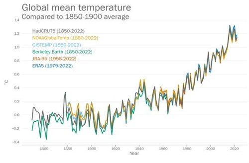
왼쪽은 1850년 이후 지구 평균기온입니다. 여러 기관의 관측이 같은 방향으로 올라갑니다. 오른쪽은 훨씬 긴 지질 시대의 기온 변화입니다. 과거에도 기온은 오르내렸다는 점이 거짓말이라는 쪽의 근거로 자주 쓰입니다.
IPCC와 평가보고서
• IPCC는 유엔환경프로그램 및 세계기상기구(WMO)가 1988년 UN총회 결의안 제43조에 의해 공동으로 설립한 기후변화에 관한 정부간 협의체.
• 5~6 년 간격으로 기후변화 평가보고서를 발간해서 기후변화 추세 및 원인규명 , 기후변화에 따른 사회경제적 영향 , 대응 전략에 대한 과학적 정보 를 제공하고 정부간 협상의 근거 자료 로 활용되고 있음 .
1990 년
온난화가 인간 활동인지 확실하지 않음
1995 년
온난화가 인간 활동이 영향의 결과 같음
2001 년
온난화가 인간 활동일 확률 67%
2007 년
온난화가 인간 활동일 확률 90%
2014 년
온난화가 인간 활동일 확률 95%
2022 년
온난화가 인간 활동의 결과 100% 확실
IPCC는 1988년에 유엔환경계획과 세계기상기구가 함께 만든 정부 간 협의체입니다. 5~6년마다 평가보고서를 내고, 이것이 정부 간 협상의 근거가 됩니다.
표를 보시면 표현이 점점 강해집니다. 1990년에는 확실하지 않다고 했고, 2014년에는 95%, 6차 보고서에서는 인간 활동의 결과라는 점이 명백하다고 썼습니다.
자연 요인으로는 설명되지 않는 기온 상승
궤도 변화 , 태양의 온도 변화 , 화산 활동 , 오존 , 산림벌채 ,
미세먼지 → 온실화 원인 아님
궤도 변화, 태양 활동, 화산, 오존 같은 요인도 따져 봤습니다. 이런 요인만으로는 지금의 상승을 설명하지 못한다는 것이 결론입니다.
정책별 배출 경로와 기온 전망
정책에 따른 배출 경로입니다. 아무 정책이 없으면 2100년에 4도 이상, 현재 정책이면 2.7~3.1도, 각국이 약속을 지키면 2.4도입니다. 1.5도 경로는 맨 아래 선입니다.
1.5℃와 2.0℃의 차이
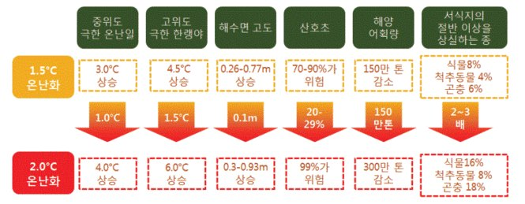
지구온난화 1.5℃ 제한 위해 전 세계 온실가스 순 배출량을 2030 년까지 2019 년 대비 43% 감축 해야 할 것 .
자료 출처 : http://planet-times.com
1.5도와 2도의 차이입니다. 0.5도 차이로 폭염, 해수면, 산호초, 어획량 피해가 크게 달라집니다. 그래서 2030년까지 2019년 대비 43%를 줄여야 한다는 숫자가 나왔습니다.
남극 빙하 소실과 해수면 상승 (1)
IPCC 보고서의 결론
2018 년
10 월
지구온난화 1.5℃ 특별보고서
현재 속도로 지구온난화가 지속되면 2030~2052 년 사이 1.5℃ 초과 . 2100 년까지 1.5℃ 로 제한하기 위해서는 2030 년까지 2010 년 대비 이산화탄소 배출량 최소 45% 감축 필요
2019 년
8 월
「기후변화와 토지」 특별보고서
토지 변화가 폭염 , 호우 , 가뭄 등 극한현상 빈도와 강도 증가 를 초래함 . 이에 지속가능한 토지 이용 정책 등의 효율성 향상 강조
2019 년
9 월
「해양 및 빙권 」 특별보고서
해수면 상승 및 이상 고수온 증가로 연안 · 수산 재해 가능성 증가 (2100 년 해수면 상승 예측을 기존 보고서 (2014 년 ) 보다 10cm 더 높여 )
2021 년
7 월
제 6 차 평가보고서 (AR6): (WG1) 과학적 근거
이번 세기 중반까지 현 수준의 온실가스 배출량을 유지한다면 2021~2040 년 중 1.5 도 지구온난화를 넘을 가능성이 높다
2022 년
3 월
제 6 차 평가보고서 (AR6): (WG2) 영향 , 적응 및 취약성
온난화가 생물다양성 손실 , 지속가능하지 않은 소비 , 사회적 불평등과 같은 다른 많은 지구적 위협들과 상호 작용해 얼마나 더 악화할 수 있는지를 진단
2022 년
4 월
제 6 차 평가보고서 (AR6): (WG3) 기후변화 완화
지구온난화 1.5℃ 제한 위해 전 세계 온실가스 순 배출량을 2030 년까지 2019 년 대비 43% 감축 해야 할 것
온난화 는 명확한 인간 활동이고 아직 골든타임 (1.5 ℃ 제한 ) 이 있다 .
하지만 강한 행동력이 필요한 목표임 .
2018년 1.5도 특별보고서부터 2022년 6차 보고서까지입니다. 결론은 두 줄입니다. 온난화는 인간 활동의 결과이고, 1.5도로 막을 시간은 아직 있지만 강한 행동이 필요하다는 것입니다.
국가온실가스감축목표(NDC)
국가명
목표년도
목표치
EU
2030 년
1990 년 대비 55% 감축
영국
2030 년
1990 년 대비 68% 감축
미국
2030 년
2005 년 대비 50~52% 감축
캐나다
2030 년
2005 년 대비 40~45% 감축
일본
2030 년
2013 년 대비 46% 감축
중국
2030 년
2005 년 대비 집약도 60~65% 감축
한국
2030 년
2018 년 대비 40% 감축
지구온난화 1.5℃ 제한 위해 전 세계 온실가스 순 배출량을 2030 년까지 2019 년 대비 43% 감축 해야 할 것 .
“NDC( 국가온실가스감축목표 ) 를 설정하여 감축 이행 ”
그래서 각국이 국가 감축목표, NDC를 냈습니다. EU는 1990년 대비 55%, 우리나라는 2018년 대비 40%입니다. 표는 2030년 목표이고, 그 뒤로 각국이 2035년 목표를 새로 내고 있습니다.
NDC의 법적 강제력
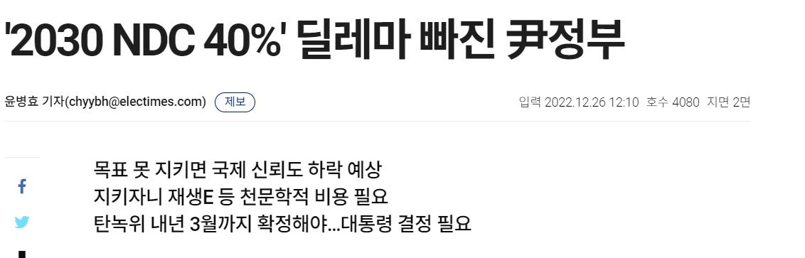
“ 천문학적인 비용 지출 필요 ”
VS
“1.5℃ 이상 상승 시 지구적 재앙 ”
문제는 강제성이 없다는 점입니다. 비용이 너무 크다는 주장과 1.5도를 넘으면 재앙이라는 주장이 맞서고, 목표를 못 지켜도 제재가 없습니다.
강한 행동이 기술을 발전시킴
경제성장과 배출량 감축
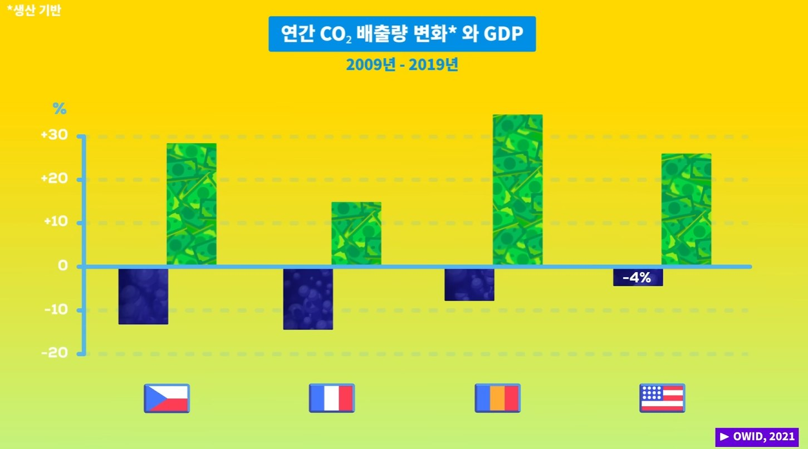
선박은 국제해사기구(IMO)가 관리
그래서 선박은 국제해사기구, IMO가 맡았습니다. IMO가 10여 년 동안 낸 조치들입니다.
해운 탄소 규제의 흐름
탄소 배출량에 따른 시장 조치
탄소배출권 , 탄소세 , 금융제한 , 운항제한
배출제한
탄소배출량 리포트
연간 배출량 리포트 제출
데이터수집
2024년 이후 “배출권 제출”, “연료 집약도 규제” 시행
탄소 관리 중요성이 커짐
탄소 관리 → 경영 성과
출처 : S&P Global Commodity Insights
탄소 배출등급 에 따른 선박 매매 비율 (2022 년 )
흐름을 한 장으로 보면 세 단계입니다. 먼저 배출량을 보고하게 했습니다. EU MRV가 2018년, IMO DCS가 2019년입니다. 다음은 효율입니다. 2023년에 CII 등급이 시작됐습니다.
세 번째가 돈입니다. EU는 2024년부터 해운을 배출권거래제에 넣었고 2025년에 FuelEU가 시작됐습니다. IMO의 목표는 2030년 탄소집약도 40% 감축, 2050년 무렵 넷제로입니다.
아래 그래프는 등급이 좋은 배가 더 많이 거래되고 값도 더 받는다는 2022년 통계입니다. 탄소 관리가 경영 성과로 이어집니다.
EU의 지역 규제
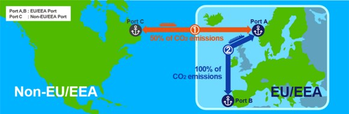
EU는 한발 더 나갔습니다. EU 항구에 오는 배는 국적과 관계없이 대상입니다. 역내 항차는 100%, 역외와 오가는 항차는 50%를 봅니다. 영국도 2026년 7월부터 해운을 배출권거래제에 넣었고, 다른 지역도 자체 규제를 검토하고 있습니다.
탄소배출총량 VS 탄소배출집약도
집약도 = 탄소배출량 운송일(화물량, 거리)
총량 = 탄소배출량
규제를 읽을 때 총량과 집약도를 구분해야 합니다. 집약도는 배출량을 운송일, 곧 화물량 곱하기 거리로 나눈 값입니다. 효율을 올리면 맞출 수 있습니다.
총량은 배출량 그 자체입니다. 결국 배출을 없애야 합니다. CII는 집약도 규제이고 ETS는 총량 규제입니다.
규제 비교 · 구분
보고 제도와 규제 조치의 구분
① 보고 제도 하는 일 보고 단위 결과물 이 데이터를 쓰는 규제 IMO DCS 연료 소비량·거리·운항시간을 수집 선박 · 연간 적합확인서(SoC) CII · (향후) NZF EU MRV EU 기항 선박의 배출량을 측정·보고·검증 선박 · 항차별 → 연간 적합증서(DoC) EU ETS · FuelEU (보고 체계 공유)
② 규제 조치 목적 판정 지표 의무와 제재 선사의 대응 수단 IMO CII 운항 효율 개선 수송량당 CO₂ · gCO₂/(DWT·nm) A~E 등급 · D 3년 연속 또는 E → 시정조치계획 감속 · 선체 관리 · 대기시간 단축 EU ETS 배출 총량 감축 (배출에 가격 부과) tCO₂e 배출권(EUA) 제출 · 미제출 €100/t 연료 절감 · 저탄소 연료 FuelEU 저탄소 연료로 전환 에너지당 GHG · gCO₂e/MJ 한도 초과 시 벌금 · 흑자는 이월·풀링 바이오연료·LNG 혼합 · 육상전원 UK ETS 영국 국내 해운 배출 감축 tCO₂e 배출권(UKA) 제출 EU ETS와 같음
보고 제도는 데이터를 모으고 검증 · 등급·비용·벌금은 규제 조치에서 발생 · 보고값이 틀리면 규제 조치의 결과도 틀림
두 종류를 나눠서 보겠습니다. 위 표는 보고 제도입니다. IMO DCS와 EU MRV는 데이터를 모으고 검증하는 체계이고, 그 자체로 등급이나 비용이 생기지 않습니다. 결과물은 적합확인서와 적합증서입니다.
아래 표는 규제 조치입니다. CII는 DCS 데이터로 등급을 매기고, EU ETS는 MRV로 검증된 배출량만큼 배출권을 내게 합니다. FuelEU는 MRV와 같은 보고 체계 위에서 연료의 온실가스 집약도를 봅니다. UK ETS는 영국 자체 보고서로 정산합니다.
그래서 보고값이 틀리면 등급과 비용이 같이 틀립니다. 2교시와 3교시는 위 표의 데이터를 정확히 만드는 방법입니다.
규제 6종 비교
규제별 대상·범위·지표·의무
규제 대상 선박 지리 범위 지표 의무 IMO DCS 5,000GT 이상 국제항해선 전 세계 연료 소비량 (유종·기기별) 연간 보고 · SoC IMO CII 5,000GT 이상 · 선종 지정 전 세계 gCO₂ / (DWT·nm) A~E 등급 · D 3년 연속 또는 E 1회 시 시정조치계획 EU MRV 5,000GT 이상 화물·여객선 EU 기항 항차 + EU 항내 CO₂·CH₄·N₂O · TtW(연소 단계) 항차별 모니터링 · 연간 보고 · DoC EU ETS 5,000GT 이상 화물·여객선 EU 내 100% · EU↔비EU 50% · 항내 100% tCO₂e 배출권(EUA) 제출 FuelEU 5,000GT 초과 화물·여객선 ETS와 동일 (100/50%) gCO₂e/MJ · WtW(생산~연소 전주기) 집약도 한도 준수 · 잔액 적자 시 벌금 UK ETS 5,000GT 이상 선박 영국 국내항해 + 영국 항내 활동(접안·항내 이동) tCO₂e 배출권(UKA) 제출
규제 하나하나 들어가기 전에 여섯 개를 한 표에 놓고 보겠습니다. 가로로 네 가지만 보시면 됩니다. 어떤 배가 대상인지, 어느 바다에서 적용되는지, 무엇을 재는지, 그래서 뭘 해야 하는지.
[IMO 두 줄] IMO는 전 세계가 범위입니다. DCS는 연료를 보고하는 제도이고, CII는 그 연료를 거리와 톤수로 나눠서 등급을 매기는 제도입니다.
[EU 세 줄] EU는 세 개가 한 묶음입니다. MRV로 재고, ETS로 돈을 내고, FuelEU로 연료의 질을 봅니다. 범위는 EU 항구를 드나드는 항차입니다.
[UK 줄] 영국은 올해 7월에 시작했고 지금은 영국 국내항해와 영국 항내 활동, 즉 접안과 항내 이동만 봅니다. 선종은 가리지 않지만 군함이나 어선처럼 빠지는 배가 따로 정해져 있습니다. FuelEU 줄은 총톤수 5천 이상이 아니라 초과입니다. 총톤수가 딱 5천인 배는 MRV와 ETS에는 들어가고 FuelEU에는 안 들어갑니다.
지표 칸을 한 번 더 보십시오. 톤, 톤마일당 그램, 메가줄당 그램. 같은 연료를 재는데 단위가 다 다릅니다. 그래서 규제별로 따로 집계하면 어긋나고, 원천 데이터 한 벌에서 뽑아야 한다는 이야기가 뒤에 계속 나옵니다. 표 아래 줄은 책임주체입니다. EU는 선주가 원칙이고 위임 문서가 있으면 ISM 회사, 영국은 등록선주가 원칙입니다.
규제마다 무엇을 줄이려는지는 다음 장부터 하나씩 보겠습니다.
IMO EEDI (신조선)
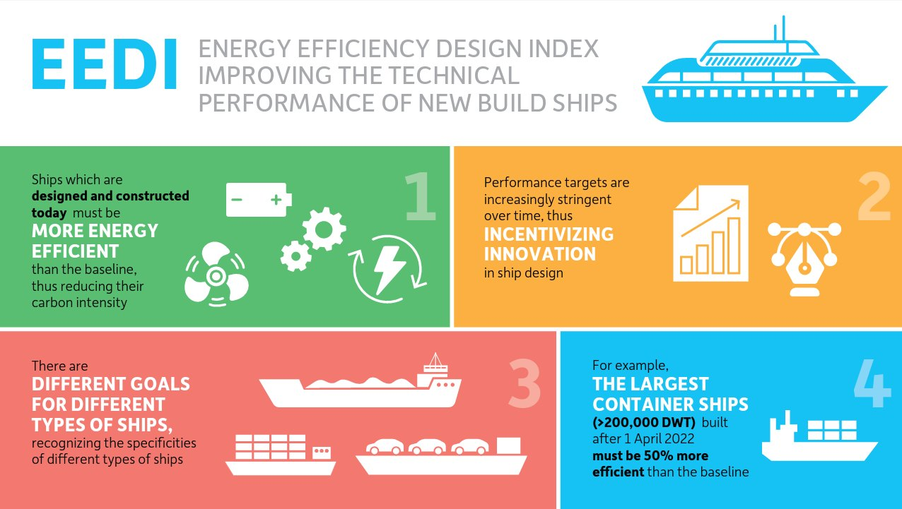
IMO EEXI (현존선 설계)
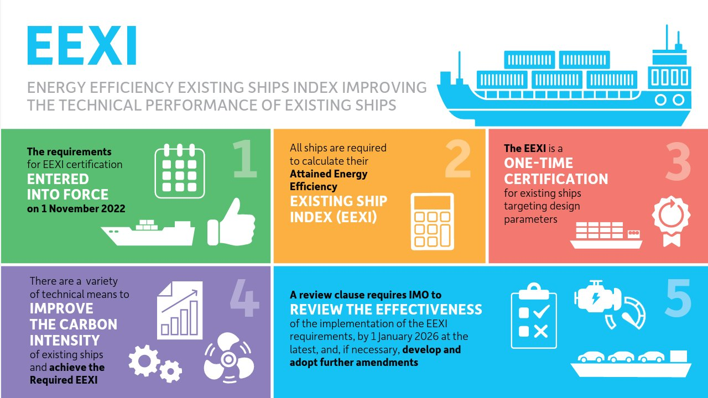
EEXI 대응: 출력 제한
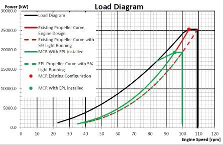
환경 규제 메커니즘
보고 (IMO DCS, EU MRV)
선박 탄소 배출량 보고
검증 ( 검증기관 )
선박 탄소 배출 보고 , 각 규제 이행
규제 (IMO, EU)
세금 , 벌금 이행 및 다양한 규제 강화
구조는 세 단계입니다. 선사가 배출량을 보고하고, 검증기관이 검증하고, 그 결과에 세금이나 벌금 같은 규제가 붙습니다. 처음에는 보고만 하라고 했는데 이제는 줄이라고 합니다.
IMO · 보고 제도와 규제 조치
IMO: DCS(보고 제도)와 CII(규제 조치)
목적 IMO 온실가스 감축 전략의 이행 2030년: 수송량당 CO₂ 40% 감축 (2008년 대비) 2050년경: 온실가스 넷제로 DCS는 보고 제도, CII는 규제 조치 보고 → 규제 DCS 데이터로 CII 등급 부여 DCS(보고): 5,000GT 이상 선박이 연료 소비량·거리·운항시간을 매년 기국에 보고 CII(규제): 그 값으로 선박별 지표를 계산해 선종·크기별 기준과 비교 → A~E 등급 강제 수단 등급과 시정조치계획 D 3년 연속 또는 E 1회 → 시정조치계획을 작성해 승인받음 벌금은 없음 용선 계약·금융 심사에서 등급 사용
CII = (연료 소비량 × 배출계수 CF ) ÷ (재화중량톤 DWT × 운항거리)
기준은 2019년 기준선 대비 매년 강화: 2023년 5% → 2026년 11% → 2030년 21.5% · 운항이 같아도 등급은 내려감
IMO 제도부터 보겠습니다. 목적은 IMO 온실가스 전략의 이행입니다. 2030년까지 화물을 옮기는 양당 CO₂를 2008년보다 40% 줄이고, 2050년 무렵 넷제로로 가는 것이 목표입니다.
DCS는 측정입니다. 매년 연료를 얼마나 썼고 얼마나 갔는지 기국에 보고합니다. CII는 평가입니다. 보고한 값으로 화물 적재능력 1톤을 1해리 옮기는 데 CO₂가 몇 그램 나왔는지 계산해서 A부터 E까지 등급을 줍니다.
벌금은 없습니다. D를 3년 연속 받거나 E를 한 번 받으면 시정조치계획을 내야 합니다. 기준이 해마다 올라가므로 운항이 같아도 등급은 내려갑니다.
CII 기준선과 등급
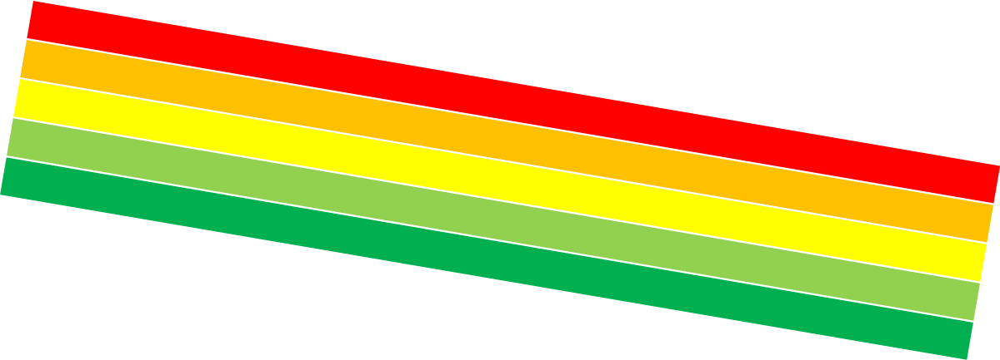
Carbon Intensity Indicator Factor
기준선은 매년 내려갑니다. 같은 배가 같은 방식으로 운항해도 해가 갈수록 등급이 떨어집니다.
3년 연속 D이거나 한 번이라도 E를 받으면 시정조치 계획을 SEEMP에 넣어 승인받아야 합니다.
IMO · 요건 요약
IMO DCS·CII: 요건과 대응 데이터
대상 5,000GT 이상 국제항해선 (CII는 선종 지정)
범위 전 세계 전 항해
지표 연료 소비량 · CII gCO₂/(DWT·nm)
기한 · 결과 3/31 제출 → 5월 말 SoC · A~E 등급
입력 선박
대지거리 · 항해시간 기기 × 유종 소비량 (ME·GE·보일러·기타) 비항해 중 소비량 화물량 (컨테이너는 TEU·중량) 육상전원 kWh 보정 대상: STS · 항차조정 구간 · 리퍼 수 · 화물용 전력(kWh 계량) 관리 육상
1/1 정오 기준 연도 분리 BDN·ROB 연속성 대조 1/1·7/1 로그북 잔량 대조 보정 근거 증빙 보관 SEEMP Part II 측정방법과 일치 여부 3/31 제출 → 5월 말 SoC 활용 운항 · 기술
월별 Attained CII 추적 연말 등급 예측 감속·오손 관리 효과 계산 D 3년 연속·E 예상 시 시정조치계획 용선 계약 CII 조항 대응
IMO 두 제도를 한 장으로 정리했습니다. 맨 윗줄이 제도 요건이고, 아래 세 칸이 데이터입니다. 왼쪽이 배에서 넣는 것, 가운데가 육상에서 챙기는 것, 오른쪽이 그 데이터를 어디에 쓰는지입니다.
[입력] 배에서는 거리, 시간, 연료, 화물입니다. 올해 데이터부터는 연료를 기기별로 나눠야 하고, 항해 중이 아닐 때 쓴 것도 따로 적어야 합니다. CII 보정을 받으려면 STS인지, 항차조정 구간인지, 리퍼가 몇 개인지도 그때그때 남겨야 합니다.
[관리] 육상은 1월 1일 정오로 연도를 자르고, BDN과 잔량이 이어지는지 봅니다. 3월 말에 제출하고 5월 말에 적합확인서를 받습니다.
[활용] 여기까지 하면 보고는 끝인데, 같은 데이터로 월별 CII를 따라가면 연말 등급이 미리 보입니다. D가 보이면 그때 속력을 줄일지 선체 청소를 할지 정할 수 있습니다. 보고용 데이터가 그대로 의사결정 자료가 됩니다.
EU · 보고 제도와 규제 조치
EU: MRV(보고 제도)와 ETS(규제 조치)
목적 배출에 가격을 붙여 총량 감축 EU 목표: 2030년 순배출 55% 감축 (1990년 대비), 2050년 기후중립 해운은 2024년 ETS에 편입 MRV는 보고 제도 (2018년~), ETS는 규제 조치 구조 배출 1 tCO₂e = 배출권 1 EUA EU가 배출권 총량을 정하고 매년 줄임 회사는 MRV로 검증된 배출량만큼 배출권(EUA)을 시장에서 사서 제출 범위: EU 항구 간 100% · EU↔비EU 50% · EU 항내 100% 강제 수단 제출 의무와 벌금 매년 9/30까지 전년도분 배출권 제출 미제출: tCO₂e당 €100 + 제출 의무 유지 2개 기간 이상 미제출 시 추방명령 가능
비용 = 배출량(tCO₂e) × 지역계수 × 도입 비율 × 배출권 가격
배출량이 줄면 비용이 줄어듦 → 감속, 효율 개선, 저탄소 연료가 모두 유효 · 항차의 EU 여부가 지역계수를 결정
EU 제도입니다. MRV는 2018년부터 EU에 기항하는 배의 배출량을 항차 단위로 재는 제도입니다. ETS는 그 배출량에 가격을 붙입니다. 2024년에 해운이 들어왔습니다.
구조는 단순합니다. 1톤을 배출하면 배출권 1 EUA를 사서 제출해야 합니다. EU가 배출권 총량을 매년 줄이므로 가격이 생깁니다. 덜 배출하면 살 배출권이 줄어듭니다. 그래서 감속도, 효율 개선도, 연료 전환도 모두 비용을 줄입니다.
실무에서 중요한 것은 지역계수입니다. 같은 연료라도 EU 항구 사이면 100%, EU와 비EU 사이면 50%입니다. 이 판정이 항차 기록에서 나옵니다.
EU · 요건 요약
EU MRV·ETS: 요건과 대응 데이터
대상 5,000GT 이상 화물·여객선
범위 EU 내 100% · EU↔비EU 50% · 항내 100%
지표 tCO₂e (CO₂·CH₄·N₂O)
기한 · 결과 3/31 보고 → 9/30 EUA 제출
입력 선박
출항·입항 보고 (항구·시각) 접안·투묘 시각 EU 항구 여부 기항 목적 (화물작업 / 벙커링만) 항차별 유종 소비량 화물량 관리 육상
레그 분할 · 기항 판정 지역계수 100 / 50 / 0% CH₄·N₂O · 메탄 슬립 계수 항구 마스터 (EU 여부·환적항·최외곽지역) 검증기관 대응 · 3/31 보고 9/30 EUA 제출 활용 운항 · 재무
항차별 탄소비용 정산 (용선자 청구) EUA 구매 수량·시기 EU 구간 속력 결정 항로·기항지 비교 운임 견적의 탄소비용 반영
EU MRV와 ETS입니다. EU 규제는 위치와 시각 데이터가 중심입니다.
[입력] 배가 넣는 것도 위치와 시각입니다. 어느 항구를 언제 떠나 언제 닿았는지, 거기가 EU 항구인지, 화물작업을 했는지 기름만 넣었는지입니다.
[관리] 육상은 이걸 받아서 레그를 자르고 기항인지 판정하고 100%, 50%, 0% 가운데 하나를 붙입니다. 항구 마스터가 정확해야 합니다. 3월 말 보고, 9월 말 제출입니다.
[활용] ETS는 실제로 돈이 나가기 때문에 쓰임새가 가장 많습니다. 용선자에게 항차별로 탄소비용을 청구해야 하고, 배출권을 언제 몇 장 살지 정해야 하고, 운임 견적에도 들어갑니다. 항차별 숫자가 정확하지 않으면 청구서부터 다툼이 생깁니다.
EU ETS 해운
EU ETS 해운: 제출량 산식과 도입 비율
제출량 = Σ (CO₂ + CH₄×28 + N₂O×265) × 지역계수(EU 내·항내 1.0 / EU↔비EU 0.5) × 도입 비율
도입 비율 (배출연도 → 제출 시기)
40%
70%
100%
+ CH₄·N₂O
2024분 2025분 2026분 2025.9.30 제출 2026.9.30 제출 2027.9.30 제출
요구 데이터 EU MRV 데이터 전부 (항차·항내) 항차별 지역계수 판정 근거 = 기항 여부 LNG 엔진 유형 → 메탄 슬립 계수 내빙등급, 바이오연료 지속가능성 증명서(PoS) (감면) 제재 미제출 €100/tCO₂e (물가연동) + 제출 의무 유지 + 회사명 공개, 2개 기간 이상 연속 미제출 + 다른 집행수단 실패 시 추방명령 가능
해양작업선(5,000GT 이상) 2027년부터 · 책임주체: 선주(위임 문서가 있으면 ISM 회사)
질문 · 2025년분 → 2026년분 ETS 비용 증가율: 10% · 25% · 약 45% · 두 배
EU ETS는 MRV로 센 배출량에 가격을 매깁니다. 공식을 보시면 CO₂에 메탄 곱하기 28, 아산화질소 곱하기 265를 더하고, 지역계수와 도입 비율을 곱합니다. 28과 265는 IPCC 5차 보고서 기준 지구온난화지수(GWP)입니다. 외우실 필요는 없고 계산 양식에 넣어 두시면 됩니다.
도입 비율은 2024년 배출분 40%, 2025년 70%, 올해 2026년 배출분부터 100%입니다. 올해부터는 메탄과 아산화질소도 제출 대상입니다. LNG선은 메탄 슬립 때문에 이 변화를 특히 크게 느낍니다.
ETS가 MRV보다 더 요구하는 데이터는 지역계수, 즉 항차마다 100%냐 50%냐를 판정할 근거입니다. 기항 여부와 EU 항구 여부입니다. 제출하지 못하면 톤당 100유로를 내고도 제출 의무는 그대로 남습니다.
다음 장으로 넘어가기 전에 하나 생각해 보십시오. 운항이 똑같은 선박 한 척의 ETS 비용이 2025년분에서 2026년분으로 가면 얼마나 늘까요. 화면 오른쪽 아래의 10%, 25%, 45%, 두 배 가운데 하나입니다. [5초]
EU ETS · 계산 예
EU ETS 비용 계산 예: 케미컬 탱커 A
2026.1.1~11.21 실적 (수정 가능)
EU 역내 MGO
EU↔비EU MGO
바이오디젤 역내
EUA
1 연료 → CO₂ 1,673 × 3.206 · 230 × 3.206 = 5,364 t · 737 t MGO 배출계수 3.206 · 바이오디젤은 지속가능성 증명 인정 시 CO₂ 0
2 지역계수 적용 5,364 × 1.0 + 737 × 0.5 = 5,732 t EU 항구 간·항내 100% · EU↔비EU 50%
3 CH₄·N₂O 가산 (1,673 + 562 + (230 + 37) × 0.5) × 0.049 = +116 tCO₂e 바이오분 포함 · 연료 1 t당 0.049 · 2026년분부터
4 2026년분 제출량 (5,732 + 116) × 100% = 5,849 EUA 도입 비율 2024년분 40% → 2025년분 70% → 2026년분 100%
5 2026년분 비용 5,849 × €80 = €467,900
6 2025년분 규칙이면 5,732 × 70% × €80 = €321,000 2025년분은 CO₂만 70% · 같은 운항 기준 비교
7 미제출 시 벌금 5,849 × €100 = €584,900 벌금 납부 후에도 제출 의무 유지
€321k
€468k
2025년분 CO₂ × 70% 2026년분 (CO₂ + CH₄·N₂O) × 100% +46%
화면 아래 계산 단계는 오른쪽 화살표 키로 한 줄씩 나옵니다. 위쪽 가정 칸의 숫자를 바꾸면 모든 단계가 다시 계산됩니다.
앞 질문의 답은 약 45%입니다. 이 장은 실제 선박의 값입니다. 바이오 혼합유를 쓰는 케미컬 탱커이고, 선박명은 가렸습니다. 2026년 1월 1일부터 11월 21일까지 EU MRV 모니터링에 집계된 연료량입니다. 이 배는 대부분 EU 항구 사이를 다닙니다. EU 항구 간 항해와 항내에서 MGO 1,673톤과 바이오디젤 562톤, EU와 비EU 사이 항차에서 MGO 230톤과 바이오디젤 37톤을 썼습니다.
MGO에 배출계수 3.206을 곱하면 역내 5,364톤, EU와 비EU 사이 737톤입니다. 역내는 100%, EU와 비EU 사이는 50%를 적용해 5,732톤입니다. 바이오디젤은 지속가능성 증명이 인정되면 CO₂를 0으로 처리합니다. 메탄과 아산화질소 116톤을 더하면 5,849톤, 배출권 80유로로 약 46만 8천 유로입니다. 같은 운항을 2025년분 규칙으로 계산하면 약 32만 1천 유로이므로 46% 늘어난 금액입니다.
이제 데이터 하나가 틀렸다고 생각해 보십시오. EU 항구 간 항차가 EU와 비EU 사이로 잘못 분류되면 계수가 50%로 바뀝니다. 바이오디젤의 증명서가 빠지면 599톤에 배출계수가 붙습니다. 배출권 가격이 오르면 같은 오류의 비용도 커집니다.
EU ETS · 연료별 비교
EU ETS 제출량 비교: 실제 선박 3척
연료가 다른 실제 선박 세 척입니다. 선박명은 가렸습니다. 위 버튼으로 선박을 바꾸면 왼쪽 연료량과 오른쪽 계산이 바뀝니다. 배출량은 EU MRV 모니터링 화면에 집계된 값입니다.
첫째는 앞 장의 케미컬 탱커 A입니다. 둘째는 메탄올을 함께 쓰는 케미컬 탱커 B입니다. 2025년 4월부터 9월까지의 운항 실적을 2026년분 규칙으로 계산했습니다. 이 배는 EU와 비EU 사이 항차가 대부분이라 50%가 적용되는 양이 큽니다. 메탄올은 1톤당 CO₂가 1.375톤으로 중유의 절반 이하입니다.
셋째는 LNG 운반선 C입니다. LNG는 1톤당 CO₂가 2.750톤으로 낮지만, 2026년분부터 타지 않고 빠져나간 메탄이 더해집니다. 그래서 이 배의 연료 1톤당 평균 배출량은 약 3.3톤으로 나옵니다. 연료 사용량이 많아 제출량도 세 척 가운데 가장 큽니다.
FuelEU Maritime · 목적
FuelEU Maritime의 목적과 구조
목적과 구조
목적 : 선박 연료를 저탄소·재생 연료로 바꾸도록 함측정 : 1년간 EU 관련 항차에서 쓴 에너지 1 MJ당 온실가스 (gCO₂e/MJ) · 연료 생산부터 연소까지 포함한도 : 2020년 선대 평균 91.16에서 2025년 −2% → 2030년 −6% → 2050년 −80%판정 : 선박의 연평균 집약도가 한도 이하면 흑자, 초과하면 적자정산 : 적자는 벌금 · 흑자는 다음 해 이월 또는 다른 선박과 합산(풀링)
EU ETS FuelEU 규제 대상 배출량 (t) 연료의 GHG 집약도 (g/MJ) 범위 연소 단계 생산~연소 전주기 연료 절감 비용 감소 집약도 불변 · 적자량만 감소 연료 전환 비용 감소 집약도 감소 → 흑자 가능 정산 단위 회사 (배출권) 선박 (잔액) · 풀링 가능
화석연료만 쓰는 선박은 2025년부터 매년 적자 (HFO 91.7 · VLSFO 91.4 > 한도 89.34)
FuelEU는 ETS와 목적이 다릅니다. ETS는 배출량을 줄이는 제도이고 FuelEU는 연료를 바꾸게 하는 제도입니다. 재는 것도 다릅니다. 몇 톤을 배출했는지가 아니라, 쓴 에너지 1메가줄당 온실가스가 몇 그램인지를 봅니다. 연료를 만들 때 나온 배출까지 포함합니다.
한도는 2020년 선대 평균 91.16에서 시작해 2025년에 2%, 2030년에 6%, 2050년에 80% 내려갑니다. 선박의 1년 평균이 한도보다 낮으면 흑자, 높으면 적자입니다.
오른쪽 표의 셋째 줄을 보십시오. 연료를 덜 태워도 1메가줄당 집약도는 그대로입니다. 중유의 집약도는 91.7, 저유황 중유는 91.4로 이미 한도 89.34보다 높습니다. 화석연료만 쓰는 배는 속력을 줄여도 해마다 적자입니다. 적자를 없애려면 집약도가 낮은 연료를 섞어야 합니다. 벌금 계산을 본 뒤 바이오연료로 계산해 보겠습니다.
FuelEU Maritime · 작동 순서
FuelEU Maritime 작동 순서: 연료의 연간 평균 집약도를 한도와 비교
1 에너지 합산 1년간 EU 관련 구간에서 쓴 연료를 에너지(MJ)로 환산해 합산
연료량 × 저위발열량
2 연료별 집약도 연료마다 1 MJ당 온실가스(생산~연소)가 정해져 있음
HFO 91.7 · MGO 90.8
3 선박 평균 연료별 집약도를 에너지 비율로 평균 → 선박의 연간 집약도
선박당 값 1개
4 한도와 비교 한도는 5년마다 낮아짐
2025년 89.34 → 2030년 85.69
5 준수 잔액 (한도 − 선박 평균) × 에너지
양수 = 흑자 · 음수 = 적자
흑자인 경우 낼 돈 없음 · 다음 해로 이월(뱅킹)하거나 다른 선박의 적자와 합산(풀링)
적자인 경우 풀링으로 다른 선박의 흑자와 합산하거나 다음 해 잔액에서 차입 · 남은 적자는 벌금 (VLSFO 환산 톤당 €2,400)
EU ETS와 다른 점 ETS는 배출한 양만큼 비용 발생 · FuelEU는 평균이 한도 이하이면 비용 0 · 감속으로는 평균이 변하지 않고 연료 종류를 바꿔야 변함
FuelEU는 한 줄로 말하면 연료의 연간 평균 성적을 한도와 비교하는 제도입니다. 순서대로 보겠습니다.
첫째, 1년 동안 EU 관련 구간에서 쓴 연료를 에너지로 바꿔 더합니다. 둘째, 연료마다 1메가줄당 온실가스가 정해져 있습니다. 중유는 91.7, MGO는 90.8이고, 증명서가 있는 바이오연료는 이 예시에서 14.9입니다. 셋째, 이 값을 에너지 비율로 평균하면 선박당 숫자 하나가 나옵니다.
넷째, 그 숫자를 한도와 비교합니다. 한도는 2025년 89.34에서 시작해 5년마다 내려갑니다. 다섯째, 한도와의 차이에 에너지를 곱한 값이 준수 잔액입니다. 양수면 흑자, 음수면 적자입니다.
흑자면 낼 돈이 없고, 남는 흑자를 이월하거나 다른 배와 합칠 수 있습니다. 적자면 다른 배의 흑자와 합치거나 다음 해에서 당겨 쓰고, 그래도 남으면 벌금을 냅니다.
ETS와 다른 점을 기억하십시오. ETS는 배출한 만큼 냅니다. FuelEU는 평균이 한도 이하이면 0원입니다. 속력을 줄이면 연료는 줄지만 평균은 그대로입니다. 평균을 바꾸려면 연료를 바꿔야 합니다.
FuelEU Maritime
FuelEU: 에너지당 GHG 집약도 한도
GHG 집약도 한도 (gCO₂e/MJ, WtW)
기준 91.16 (점선)
HFO ≈ 91.7 · VLSFO ≈ 91.4 (Annex II 기본값 기준 계산)
89.34 85.69 77.94 62.90 34.64 18.23 2025 2030 2035 2040 2045 2050 −2% −6% −14.5% −31% −62% −80%
요구 데이터 연료별 질량 × LCV = 에너지(MJ) 연료별 WtT(생산~선박 공급) + TtW 배출계수 바이오연료·e-fuel: PoS (지속가능성 증명서) LNG 메탄 슬립 · OPS 사용 · 풍력 보조 지역계수 100/50% (ETS와 동일) GWP: FuelEU CH₄ 25 · N₂O 298 (AR4) · ETS 28 · 265 (AR5)
FuelEU는 보는 대상이 다릅니다. 몇 톤을 태웠는지가 아니라, 쓴 에너지 1메가줄당 온실가스가 얼마나 되는지를 봅니다. 그리고 연료를 만드는 단계까지 포함하는 Well-to-Wake 기준입니다. 굴뚝만이 아니라 유전부터 봅니다.
기준값 91.16에서 출발해 2025년부터 2%, 2030년 6%, 2035년 14.5%, 2050년에는 80%까지 내려갑니다. 빨간 선을 보시면 기존 중유는 약 91.7, 저유황유는 약 91.4라서 첫해부터 이미 한도를 넘습니다. 화석연료만 쓰면 첫해부터 적자입니다.
데이터 요구는 연료별 질량에 저위발열량을 곱한 에너지, 연료별 WtT와 TtW 계수, 바이오연료라면 지속가능성 증명서입니다. 주의할 점이 하나 있습니다. ETS는 28과 265를 쓰는데 FuelEU는 25와 298을 씁니다. 같은 메탄인데 규제마다 계수가 다릅니다. 그래서 엑셀이든 프로그램이든 계수를 규제별로 따로 두고 계산해야 합니다.
FuelEU · 계산 예
FuelEU 준수 잔액과 벌금 계산 예: 케미컬 탱커 A가 MGO만 쓴 경우
실적 연료량을 모두 MGO로 가정 (수정 가능)
EU 역내 연료
EU↔비EU 연료
연도 2025~2029 (89.34) 2030~2034 (85.69) 2035~2039 (77.94)
1 대상 연료 2,235 × 100% + 267 × 50% = 2,369 t 지역계수는 EU ETS와 같음
2 대상 에너지 2,369 t × 42,700 MJ/t = 101.13백만 MJ 연료량 × MGO 저위발열량(LCV)
3 집약도 차이 한도 89.34 − MGO 90.77 = −1.43 g/MJ 한도 = 기준 91.16 × (1 − 2%)
4 준수 잔액(CB) −1.43 g/MJ × 101.13백만 MJ = −144.6 tCO₂e 음수 = 적자
5 VLSFO 환산량 144.6 t ÷ (90.77 × 41,000 g/t) = 38.9 t 벌금식의 41,000 MJ/t은 고정값
6 벌금 38.9 t × €2,400 = €93,300 연속 적자 n년차는 × (1 + (n−1)/10)
적자 해소 수단
수단 내용 연료 전환 바이오연료·LNG 혼합으로 실제 집약도를 낮춤 풀링 흑자 선박과 잔액 합산 · 회사 간 가능 뱅킹 흑자분을 다음 해로 이월 차입 다음 해 잔액에서 차입 · 한도 2% · 다음 해 1.1배 차감 · 2년 연속 불가 · 풀링과 병행 불가
2026년분 일정(2027년): 1/31 보고서 → 3/31 검증 → 4/30 풀링 → 6/30 DoC
계산 단계는 오른쪽 화살표 키로 한 줄씩 나옵니다. 연도를 2030으로 바꾸면 한도가 85.69로 내려가 같은 연료의 벌금이 커집니다.
같은 케미컬 탱커로 FuelEU를 계산해 보겠습니다. 먼저 이 배가 바이오연료 없이 MGO만 썼다고 가정합니다. FuelEU는 준수 잔액, 영어로 Compliance Balance라는 개념을 씁니다. 한도에서 실제 집약도를 뺀 값에 대상 에너지를 곱합니다.
EU 관련 연료가 2,369톤이면 에너지는 약 1억 113만 메가줄입니다. MGO의 집약도 90.77이 한도 89.34보다 높아서 CO₂ 환산 약 145톤 적자입니다. 벌금식에 넣으면 약 9만 3천 유로입니다. ETS 비용에 이 금액이 더해집니다. 적자가 2년 이상 이어지면 벌금이 가중됩니다. 2년차는 1.1배, 3년차는 1.2배입니다. 이 배가 실제로 쓴 바이오디젤을 넣으면 결과가 어떻게 바뀌는지는 다음다음 장에서 보겠습니다.
이 적자를 메우는 방법은 셋입니다. 흑자 선박과 묶는 풀링, 흑자를 이월하는 뱅킹, 다음 해에서 당겨 쓰는 차입입니다. 풀링은 회사 간에도 할 수 있어서 이미 흑자를 사고파는 시장이 생겼습니다. 그런데 풀링 상대가 되려면 내 배의 잔액이 검증된 숫자여야 합니다. 검증 안 된 흑자는 아무도 사 주지 않습니다. 풀링은 시간이 되면 조금 뒤 실습에서 직접 해 보겠습니다.
FuelEU Maritime · 바이오연료
FuelEU에서 바이오연료의 효과
연료별 GHG 집약도 (gCO₂e/MJ, 전주기)
바이오연료가 탈 때 나오는 CO₂는 원료가 자라며 흡수한 양으로 상쇄 처리
남는 것은 원료 재배·생산·운송 배출 → 화석연료의 1/6 수준 (이 예시)
이 값은 지속가능성 증명서(PoS) 에 적힌 값 · PoS가 없으면 화석연료 값 적용
케미컬 탱커 A 실적 (대상 에너지 97.94백만 MJ)
바이오 비율(에너지) 22.0%
바이오 집약도
1 MGO만 사용 90.77 − 89.34 = 한도 초과 1.43 g/MJ 벌금 €93,300 앞 장의 계산 결과
2 실제 평균 집약도 90.77 × 78.0% + 14.9 × 22.0% = 74.08 g/MJ MGO 1,788 t · 바이오디젤 580.5 t (지역계수 적용 후) · 에너지 비율로 가중 평균
3 준수 잔액(CB) (89.34 − 74.08) × 97.94백만 MJ = +1,494.7 tCO₂e 흑자 · 벌금 없음 · 이월 또는 풀링 가능
4 한도를 맞추는 비율 (90.77 − 89.34) ÷ (90.77 − 14.9) = 1.88% 에너지 기준
5 한도에 필요한 바이오 양 97.94백만 MJ × 1.88% ÷ 37,200 MJ/t = 약 50 t 실제 사용량은 580.5 t
6 바이오 1 t의 효과 75.87 g/MJ × 37,200 MJ ÷ (90.77 × 41,000) × €2,400 = 벌금 약 €1,820 감소 추가 구매비가 이보다 작으면 유리
왜 바이오연료를 쓰면 유리한지 숫자로 보겠습니다. 왼쪽 막대를 보십시오. MGO의 집약도는 90.77입니다. 생산 단계 14.4에 연소 76.4를 더한 값입니다. 바이오연료는 탈 때 CO₂가 나오지만, 그 탄소는 원료가 자라면서 공기에서 흡수한 것이라 상쇄로 처리합니다. 재배, 생산, 운송에서 나온 배출만 남습니다. 이 예시에서는 14.9입니다. 이 값은 지속가능성 증명서에 적혀 있습니다. 증명서가 없으면 화석연료 값으로 계산됩니다.
오른쪽 계산입니다. [→ 키로 한 줄씩] MGO만 썼다면 한도를 1.43 넘어서 벌금이 약 9만 3천 유로였습니다. 이 배는 실제로 에너지의 22%를 바이오디젤로 썼습니다. 평균 집약도가 74.08로 내려가 한도보다 훨씬 낮습니다. 잔액은 약 1,495톤 흑자입니다. 바이오디젤의 집약도 14.9는 예시값이고, 실제 값은 이 배의 증명서에 적힌 값을 써야 합니다.
한도를 딱 맞추는 비율은 1.88%입니다. 톤수로는 약 50톤입니다. 이 배는 그보다 훨씬 많은 580톤을 썼으므로 남는 흑자를 다음 해로 넘기거나 다른 배의 적자와 합칠 수 있습니다. 바이오 1톤이 벌금 약 1,820유로를 줄이는 셈입니다. 바이오연료를 살 때 더 내는 돈이 이보다 작으면 벌금을 내는 것보다 유리합니다.
집약도 차이가 76으로 크기 때문에 조금만 섞어도 평균이 내려갑니다. 한도보다 더 낮추면 흑자가 생기고, 흑자는 다음 해로 넘기거나 다른 배의 적자와 합칠 수 있습니다. 위쪽 막대를 움직여 비율을 바꿔 보겠습니다. 바이오연료 가격은 시기와 지역에 따라 다르므로 실제 판단은 견적으로 하셔야 합니다.
FuelEU · 요건 요약
FuelEU: 요건과 대응 데이터
대상 5,000GT 초과 화물·여객선
범위 ETS와 동일 (100 / 50%)
지표 GHG 집약도 gCO₂e/MJ (WtW)
기한 · 결과 1/31 검증기관 → 4/30 풀링 → 6/30 DoC · 적자 시 벌금
입력 선박
BDN: 유종 · 수량 · 밀도 LCV (발열량) 바이오 배치: PoS 번호 · 혼합비 · GHG 집약도 육상전원: kWh · 수전시간 · EDN(전력 인도증) LNG 엔진 유형 (슬립) 관리 육상
연료별 에너지(MJ) 집계 WtT + TtW 계수 적용 PoS ↔ BDN 대조 준수 잔액(CB) 산정 1/31 검증기관 → 4/30 풀링 → 6/30 DoC 활용 운항 · 구매
선박별 흑자·적자 파악 풀링 조합 · 뱅킹 · 차입 결정 바이오·LNG 구매 물량 산정 벌금과 연료 프리미엄 비교
FuelEU는 입력이 전부 연료 서류입니다. 아래 줄의 '최불리 화석 경로값'은 그 유종에서 가장 불리한 화석연료 경로의 값을 말합니다. PoS가 없으면 이 값으로 계산됩니다.
[입력] BDN의 유종과 수량, 발열량, 그리고 바이오연료를 받았으면 PoS 번호와 혼합비. 육상전원을 썼으면 전력량과 EDN. 배 입장에서는 벙커링하는 날 서류를 제대로 받아 넣는 게 거의 전부입니다.
[관리] 육상은 연료를 에너지로 바꾸고 계수를 곱해서 잔액를 냅니다. PoS와 BDN이 맞는지 봅니다. 일정은 1월 말 검증기관, 4월 말 풀링, 6월 말 적합증서입니다.
[활용] 잔액가 나오면 선택지가 생깁니다. 적자인 배를 흑자인 배와 묶을지, 내년으로 넘길지, 바이오를 더 살지, 그냥 벌금을 낼지. 실습에서 직접 해 보겠습니다.
UK ETS · 목적
UK ETS 해운의 목적과 구조
목적 영국 국내 해운 배출 감축 영국은 2021년부터 자체 배출권거래제 운영 2026.7.1 해운 편입 영국 2050년 넷제로 목표의 이행 수단 구조 EU ETS와 같은 방식 배출 1 tCO₂e = 영국 배출권(UKA) 1장 범위: 영국 항구 간 항해 + 영국 항내 활동 국제항해는 2027년까지 대상 아님 EU ETS와 다른 점 범위 · 기한 · 계획 단위 단계적 도입 없이 첫해부터 100% 배출권 제출 기한 4/30 · 첫 제출 2028.4.30 (현행법) 모니터링 계획은 회사 단위 1건
EU와 영국을 함께 기항하는 선박: EU 관련 구간은 EUA, 영국 국내 구간은 UKA로 각각 제출 · 2028년 두 제도 연계 예정 (2026.11.20 타결, 법문 미공개)
영국입니다. 영국은 EU를 탈퇴한 뒤 2021년부터 자체 배출권거래제를 운영합니다. 올해 7월 1일에 해운이 들어왔습니다. 구조는 EU ETS와 같습니다. 1톤을 배출하면 영국 배출권 1개을 냅니다.
다른 점은 범위입니다. 지금은 영국 항구에서 영국 항구로 가는 항해와 영국 항내 활동만 봅니다. 부산에서 영국으로 가는 국제항해는 2027년까지 대상이 아닙니다. 첫해부터 100%이고, 제출 기한은 4월 30일입니다.
유럽을 도는 배는 EU 구간에는 EU 배출권, 영국 국내 구간에는 영국 배출권을 따로 냅니다. 이틀 전 11월 20일에 두 제도를 연계하기로 합의했지만 법문은 아직 나오지 않았습니다.
영국 · 요건 요약
UK ETS: 요건과 대응 데이터
대상 5,000GT 이상 선박 (제외 선박 있음)
범위 영국 국내항해 + 영국 항내 활동
지표 tCO₂e
기한 · 결과 3/31 AER · UKA 첫 제출 2028.4.30 (현행법)
입력 선박
영국 항구 출항·입항 보고 영국 항내 활동 시각 (접안·항내 이동) 국내항해 구간 유종 소비량 북아일랜드 항구 구분 (50%, 2028 폐지는 설명서) 관리 육상
항구 국가·지역 코드 국내 / 국제 항차 구분 회사 단위 모니터링 계획(EMP) 3/31 연간배출보고서(AER) UKA 첫 제출 2028.4.30 (현행법, 2026·2027년분) 활용 운항 · 재무
영국 기항 항로의 탄소비용 산정 EUA·UKA 이중 부담 구간 파악 2028 국제항해 편입·EU 연계 대비
영국을 데이터로 정리하면 이 한 장입니다. 지금은 영국 항구에서 영국 항구로 가는 국내항해와 영국 항내 활동만 봅니다.
그래서 배에서 넣는 건 영국 항구 출입항 보고와 그 구간 연료이고, 육상에서 챙길 건 항구의 국가 코드입니다. 브렉시트 전에 만든 항구 마스터를 그대로 쓰면 영국 항구가 EU로 들어가 있는 경우가 있습니다.
첫 제출 기한은 법문이 나오면 다시 확인하셔야 합니다.
활용 쪽에서는, 유럽 순환 항로처럼 EU 항구와 영국 항구를 같이 도는 배가 어느 구간에서 어느 배출권을 내는지 나눠 보는 데 씁니다.
UK ETS 해운
UK ETS 해운: 2026.7.1 시행
항목 내용 대상 5,000GT 이상 선박(선종 제한 없음, 제외 선박 있음)의 영국 국내항해 + 영국 항내 활동(접안·항내 이동) · 해양작업선 2027~ 국내항해 영국 기항지 간(마지막 선석 → 첫 선석), 같은 항구 출항·귀항 포함 · 중간에 영국 밖 기항 없음 감면 북아일랜드↔그레이트브리튼(GB) 항해 50% (항내 활동 100%) · 2028부터 폐지(설명서)가스 CO₂·CH₄·N₂O (TtW, GWP 28 · 265) 모니터링 계획(EMP) 회사 단위 1건 · 첫 해운활동(항해 또는 항내 활동)일부터 42일 내 신청 · 규제당국 발급 보고·제출 연간배출보고서(AER) 3/31 · 배출권 제출 4/30 · 첫 제출 2028.4.30 (현행법, 2026·2027년분) EU ETS 연계 2026.11.20 타결 · 2028.1.1 가동 목표(2027년 입법 전제) · UKA↔EUA 상호 인정 · 제도는 각각 유지 · 법문 미공개
사례 유럽 순환 피더선
로테르담 → 사우샘프턴 → 펠릭스토우 → 로테르담
사우샘프턴→펠릭스토우: UK ETS 100%
로테르담↔영국 항차: EU ETS 50% (2028~ UK ETS 50% 추가)
영국 항내 활동(접안·항내 이동): UK ETS 100%
→ 한 바퀴에 EUA + UKA 각각 제출 · 2028년부터 배출권 상호 인정(목표)
연계 설명서(2026.11.20): 상호 사용 첫 배출권 제출 2028.9.30(2027년분) · 4/30 기한 변경 여부는 법문 미공개 · 비교와 제외·감면은 다음 4장
영국입니다. 올해 7월 1일부터 UK ETS가 해운에 적용됩니다. 지금은 영국 국내항해와 영국 항내 활동만 대상입니다. [오른쪽 사례] 유럽 순환 피더선은 배출권이 두 종류 필요합니다.
[표 맨 아래 줄] 지난주 금요일 11월 20일에 영국과 EU가 배출권거래제(ETS) 연계 협상을 타결했습니다. 2028년 1월 1일 가동이 목표입니다. 첫 제출은 현행법으로 2028년 4월 30일인데, 연계 설명서는 배출권을 서로 쓰는 첫 제출을 2028년 9월 30일, 2027년분으로 적었고 법문은 아직 없습니다.
EU와의 비교, 제외·감면, 2028년 변경은 다음 넉 장에서 표로 보겠습니다.
EU와 영국 비교 · 범위
EU MRV·ETS와 UK ETS 비교: 대상과 범위
항목 EU MRV · EU ETS UK ETS (2026.7~2027) 법적 근거 MRV 규정(2015/757) + ETS 지침(2003/87/EC), 두 제도 ETS 명령 안에 MRV 포함 (S.I. 2026/392) · 별도 UK MRV는 2026.4.3 폐지 대상 선박 5,000GT 이상, 상업 목적 화물·여객 운송 + 해양작업선 5,000GT 이상, 선종 제한 없음 (제외 선박 열거) MRV만 적용 일반화물선·해양작업선 400~5,000GT (2025~) 없음 지리 범위 EU 항구 간 100% · EU↔비EU 50% · EU 항내 100% 영국 항구 간 100% · 영국 항내 100% · 국제항해 0% 기항 정의 화물 적·양하 또는 여객 승하선 화물 적·양하 또는 여객·선원 승하선 (선원교대만 한 정박은 제외, 해양작업선은 포함) · UN/LOCODE 있는 해상설비 포함 인근 환적항 컨테이너선 기항 불인정 (4곳, 12/10~) 규정 없음 가스 CO₂·CH₄·N₂O (ETS는 2026년분부터) CO₂·CH₄·N₂O (시행일부터) · GWP 28 / 265 단계적 도입 2024년분 40% → 2025년분 70% → 2026년분 100% 없음 (첫해부터 100%) · 2026년분 제출은 2028.4.30으로 유예(현행법)
EU: Reg. (EU) 2015/757, Directive 2003/87/EC, Impl. Reg. (EU) 2026/2562 · UK: S.I. 2026/392, GOV.UK 준수 지침(2026.6.22)
EU와 영국을 표 두 장으로 나란히 놓았습니다. 이 장은 누가 어디서 대상이 되는지입니다. 왼쪽에 청록색으로 표시한 세 줄만 보겠습니다.
[지리 범위] EU는 비EU를 오가는 항차도 50%가 들어오지만, 영국은 지금 국제항해가 0입니다. 다만 영국 항구 안에서 쓴 연료는 해외에서 온 배도 대상입니다.
[기항 정의] 영국 법문은 선원 승하선도 넣지만, 선원교대만 하려고 들른 정박은 EU처럼 기항에서 뺍니다.
[단계적 도입] 영국은 첫해부터 100%입니다. 나머지 줄은 자료로 보십시오.
EU와 영국 비교 · 의무와 기한
EU MRV·ETS와 UK ETS 비교: 의무와 기한
항목 EU MRV · EU ETS UK ETS (2026.7~2027) 책임주체 해운회사 (선주 또는 ISM 책임을 인수한 회사) 등록선주 원칙 · ISM 회사는 서면 합의와 증빙 제출 시 모니터링 계획 선박별 · 검증기관 평가 후 주관청 승인회사별 1건 (선박 목록 포함) · 첫 해운활동(항해 또는 항내 활동)일부터 42일 내 신청 · 규제당국 발급보고서 선박별 배출보고서 + 회사 집계 · 3/31 · THETIS-MRV 회사 1건 연간배출보고서(AER) · 3/31 · METS 보고 항목 연료·배출 + 거리·수송작업 연료·배출 (항내 / 영국 간 / GB–NI 구분) 적합증서(DoC) 있음 · 6/30까지 선내 비치 없음 배출권 제출 기한 9/30 4/30 · 배출권 첫 제출 2028.4.30 (현행법, 2026·2027년분)배출권 EUA UKA만 사용 미제출 벌금 tCO₂e당 €100 (물가연동) + 제출 의무 유지 · 2개 기간 이상 연속 미제출 + 다른 집행수단 실패 시 추방명령 가능 배출권당 £100 × 물가계수 + 제출 의무 유지 · 절차 위반 £20,000 + 일 £500 감면 빙해 5% · 소도서·최외곽·초국경 공공서비스 (~2030) 북아일랜드↔GB 50% (2028 폐지, 설명서) · 스코틀랜드 페리 제외
EU: Reg. (EU) 2015/757, Directive 2003/87/EC · UK: S.I. 2026/392, GHG ETS Order 2020 art. 52
둘째 장은 회사가 해야 하는 일입니다. 표시한 두 줄만 보겠습니다.
[모니터링 계획] EU는 배마다 내고, 영국은 회사가 한 건을 냅니다. 영국에서 첫 해운활동, 즉 항해나 항내 활동을 한 날부터 42일 안에 신청해야 합니다.
[제출 기한] EU는 9월 30일, 영국은 4월 30일입니다. 현행법으로는 영국 첫 제출이 2028년 4월 30일입니다.
보고서는 둘 다 3월 31일이고, 제출 시스템만 EU는 THETIS, 영국은 METS로 다릅니다.
UK ETS 해운 · 제외와 감면
UK ETS 해운: 제외·감면 조건
항목 조건 효과 기한 필요한 데이터 5,000GT 미만 총톤수 5,000 미만 적용 제외 2028 재검토 국제톤수증서 제외 선박 군함, 법집행·해양환경 감시·항로지원·공공연구·수색구조·의료 선박, 어선 적용 제외 없음 선박 용도 스코틀랜드 도서 페리 지정 9개 해역을 지나는 정기 여객 항로 적용 제외 2028 이후 미공개 항로·시간표 해양작업선 인증된 offshore 선종 적용 제외 2026.12.31까지 선종 코드 기항이 아닌 정박 급유·보급·선원교대(해양작업선 제외)·입거·수리·피항만 한 정박 항해 계속 (항내 의무 없음) 없음 정박 목적, 화물·승하선 기록 북아일랜드↔GB 항해 북아일랜드 기항지 ↔ 그레이트브리튼(GB) 기항지 50%만 제출 (보고는 100%)2027년분까지 (설명서)항구의 NI/GB 구분 적격연료(바이오·RFNBO 등) RED 인증 + 구매·인도 증빙 + 이중 사용 없음 + 검증 감축 청구 시 CO₂ 0 없음 인증서, 구매·인도 증빙, 선언서 내빙등급 · 소도서 여객선 현행 규정 없음 2028~ 5% 감면 등 도입 (설명서) 최소 2030.12.31 내빙등급 증서, 항구 마스터
현행: S.I. 2026/392 (2026.7.1 시행) · 2028년 이후: GOV.UK 연계 설명서(2026.11.20), 법문 미공개 · 무상할당과 소량배출 면제는 없음
[시간이 밀리면 이 장은 건너뜀]
영국 ETS에서 빠지거나 줄어드는 경우입니다. 표시한 세 줄만 보겠습니다.
[해양작업선] 올해 말까지만 제외이고 내년 1월부터 들어옵니다.
[북아일랜드] 북아일랜드와 그레이트브리튼 사이 항해는 절반만 제출합니다. 보고는 100%입니다. 설명서로는 2028년에 없어집니다.
[적격연료] 바이오연료와 RFNBO(비생물 기원 재생연료)는 자동으로 0이 되지 않습니다. RED(EU 재생에너지 지침) 인증서와 구매·인도 증빙을 갖춰 감축 청구를 따로 해야 합니다.
영국–EU ETS 연계 · 2026.11.20 타결
2028년 UK ETS 변경 사항 (연계 설명서 기준)
항목 2027년까지 2028.1.1부터 (목표) 국제항해 대상 아님 50% 편입 북아일랜드↔GB 50% 제출 감면 폐지 (100%) 배출권 UKA만 UKA·EUA 상호 인정 모니터링 계획 회사별 1건 선박별 (EU MRV 양식) 적합증서 없음 UK DoC 도입 · 선내 비치 보고 항목 연료·배출 + 거리·수송작업 소형선 대상 아님 400~4,999GT 해양작업선·일반화물선 MRV 감면 빙해·소도서 규정 없음 빙해 5% · 소도서 여객선 · 환적항 목록 적용
설명서에 명시된 것 제도는 둘로 유지, 서로 연결 · 2027년 입법 전제 상호 사용 첫 배출권 제출: 2028.9.30 (2027년분) 아직 공개되지 않은 것 협정 법문 · 영국 이행 법령 현행 2028.4.30 배출권 제출 기한의 변경 여부 영국 기항 선박의 현재 의무 영국 항구 첫 활동일부터 42일 내 모니터링 계획 신청 2027.3.31 첫 연간배출보고서(검증 포함)항구 마스터에 NI/GB 구분
GOV.UK, UK-EU ETS linking agreement explainer (2026.11.20). 법문 공개 전 설명서이며 변경될 수 있음. 지금 할 일: S.I. 2026/392
앞에서 말씀드린 11월 20일 연계 타결 내용을 표로 정리했습니다. 법문은 아직 없습니다.
[국제항해] 2028년부터 영국을 드나드는 국제항해의 50%가 들어옵니다. [모니터링 계획] 선박별로 바뀌고 적합증서도 생깁니다.
[오른쪽 위] 첫 제출은 현행법으로 2028년 4월 30일인데, 설명서는 배출권을 서로 쓰는 첫 제출을 2028년 9월 30일, 2027년분으로 적었습니다. 4월 기한이 바뀌는지는 법문이 나와야 압니다.
[오른쪽 아래] 영국에 기항하는 배가 지금 할 일은 이 세 가지입니다.
IMO Net-Zero Framework · 협상 중
IMO 넷제로 프레임워크(NZF): 구조와 협상 경과
GFI(연료 GHG 집약도) 목표 · WtW · 2008년 93.3 gCO₂e/MJ 대비 (원안)
구간 조건 정산 Tier 2 Base 목표 초과 RU(보충 단위) 380 USD/tCO₂e Tier 1 Base ~ Direct 사이 RU 100 USD/tCO₂e 잉여 Direct 목표 이하 SU(잉여 단위) · 판매 · 2년 이월
감축 목표 2028 2030 2035 Base −4% −8% −30% Direct −17% −21% −43%
경과
2025.4 MEPC 83 초안 승인
2025.10 임시회기: 1년 휴회 (57:49, 언론·선급 집계)
2026.4.27~5.1 MEPC 84: 설계 결정 없음 · 수정안 논의 계속
2026.11.23~27 회기간 회의 (오늘부터) 2026.11.30~12.3 MEPC 85 · 2026.12.4 임시회기 재개(예정)
12월 채택 시 발효는 채택 16개월 뒤인 2028년 4월 이후 · 데이터 = DCS + LCA 계수 + 연료 인증 (FuelEU와 같은 구조)
IMO 넷제로 프레임워크, NZF입니다. 국제 해운 전체에 연료 온실가스 집약도 기준과 가격을 붙이는 제도입니다. 작년 10월 임시회기에서 1년 휴회가 결정됐습니다. 올해 4월 말 MEPC 84에서는 설계를 결정하지 못했고, 승인된 초안의 수정안을 계속 논의하기로 했습니다. 오늘부터 금요일까지 회기간 회의가 열리고, 12월 4일에 임시회기를 재개할 예정입니다. 거기서 채택돼도 발효까지 최소 16개월이 걸려서 2028년 봄 이후입니다.
[왼쪽 표] 원안은 목표를 넘은 배출에 톤당 100달러나 380달러를 매기고, 목표보다 더 줄이면 잉여 단위를 받아 팔 수 있는 구조입니다.
데이터로 보면 IMO DCS 데이터에 연료 전주기 계수와 연료 인증을 얹는 구조라 FuelEU와 거의 같습니다. 지금 FuelEU용으로 바이오 증빙과 에너지 데이터를 관리하는 선사는 NZF가 어떤 모양으로 채택되든 바로 대응할 수 있습니다. 별도 준비가 거의 필요 없습니다.
사례
연료 1톤의 규제별 산정값
사례 HFO 1톤 · 로테르담 → 부산
EU 출항 → 비EU 입항
선박 입력은 한 칸: 주기관 HFO 소비 1.0 t
가정: EUA €80/t (설명용) · HFO 저위발열량 40.5 GJ/t · WtW 91.7 gCO₂e/MJ (Annex II 기본값 기준 계산)
1 IMO DCS 보고 1 t × 3.114 = CO₂ 3.114 t 전 세계 100%
2 EU MRV 보고 1 t × 3.114 + 1 t × 0.049 (CH₄·N₂O) = 3.163 tCO₂e CH₄ 0.00005 t × 28 + N₂O 0.00018 t × 265 = 0.049
3 EU ETS 3.163 × 50% × 100% × €80 = 1.58 t · €127 EU↔비EU 50% · 2026년분 도입 비율 100%
4 FuelEU 잔액 (89.34 − 91.7) g/MJ × 20,250 MJ = −47.8 kgCO₂e 대상 에너지 = 40.5 GJ × 50% = 20,250 MJ
5 FuelEU 벌금 47,790 g ÷ (91.7 × 41,000) × €2,400 = 약 €31 VLSFO 환산 톤당 €2,400
6 UK ETS 영국 국내항해·항내 활동 아님 = 0
연료 1톤이 규제마다 어떤 숫자가 되는지 보겠습니다. 주기관이 HFO 1톤을 태웠습니다. 배가 입력한 값은 '주기관 HFO 소비 1톤' 하나입니다.
[오른쪽 표] 방금 여쭌 답부터 보겠습니다. IMO에서는 CO₂ 3.114톤이 되어 CII 분자에 그대로 들어갑니다. EU MRV는 메탄과 아산화질소까지 넣어 약 3.16톤으로 보고합니다. ETS는 EU에서 비EU로 가는 항차라 50%, 2026년부터 100% 제출이니 약 1.58톤, EUA를 80유로로 가정하면 약 127유로입니다. 100유로를 조금 넘습니다. FuelEU는 톤이 아니라 에너지로 봅니다. 40.5기가줄의 절반이 대상이고, HFO는 한도를 넘으니 벌금이 약 31유로입니다. 영국 국내항해가 아니니 UK ETS는 0입니다.
입력은 하나인데 규제마다 결과가 다릅니다. 결과를 가르는 건 'EU 항구냐', '화물작업을 했냐' 같은 체크박스입니다. 아래 경고처럼 EU 항구 체크 하나가 빠지면 ETS와 FuelEU가 둘 다 0이 됩니다. 검증에서 뒤늦게 잡히면 그때 한꺼번에 냅니다. 스페인 항구에서 실제로 잡은 사례를 2교시에 보여드리겠습니다.
참고로 EUA 가격은 설명용 가정치이고, WtW 91.7은 FuelEU 부속서 II 기본값으로 계산한 값입니다.
1교시 · 규제 비용 계산기
규제별 비용 계산기
사례 불러오기
로테르담→부산 HFO 1 t EU 내 피더선 VLSFO 6,000 t LNG선 연간 20,000 t (EU 출항) 바이오 B100 500 t
교육용 모델 · 정산값 아님 · FuelEU 계수는 Annex II 기본값 기준 계산
IMO DCS·CII CO₂-
EU MRV CO₂e 보고량 (100%)-
EU ETS 제출 대상-
└ EUA 비용 -
FuelEU 대상 에너지 / GHG 집약도-
└ 준수 잔액(CB) -
└ 벌금 (적자 시) -
규제 비용 합계 (ETS + FuelEU) -
-
제가 화면에서 조작하겠습니다. 바꿀 값을 불러 주십시오. 앞에서 본 'HFO 1톤' 계산을 계산기로 만들었습니다. 왼쪽에서 연료, 소비량, 항차 종류, 연도, 배출권 가격을 고르면 오른쪽에 IMO, EU MRV, ETS, FuelEU 숫자가 동시에 바뀝니다.
'로테르담→부산 HFO 1톤'을 누르겠습니다. 앞에서 본 127유로와 31유로가 그대로 나옵니다. 항차를 뭘로 바꿔 볼지 불러 주십시오. 'EU 항구 ↔ EU 항구'로 바꾸면 ETS와 FuelEU가 두 배가 됩니다. '비EU ↔ 비EU'로 바꾸면 IMO 숫자는 그대로인데 EU 쪽은 모두 0입니다. 원천 데이터는 같은데 적용하는 경계가 달라서 생기는 차이입니다.
연도를 2025로 내렸다가 2026으로 되돌리면 아까 본 대로 ETS가 45% 늘어납니다. 제출 비율이 70%에서 100%로 오르고 메탄·아산화질소가 들어오기 때문입니다. 2030으로 바꾸면 FuelEU 한도가 89.34에서 85.69로 내려가서, 같은 연료로도 벌금이 커집니다.
마지막으로 바이오연료 두 가지입니다. 같은 B100인데 PoS가 있으면 ETS 비용이 거의 없고 FuelEU는 흑자가 납니다. PoS가 없으면 FuelEU에서는 해당 유종의 최불리 화석 경로값으로 계산되고, ETS에서도 CO₂ 0 처리를 받지 못해 바이오디젤 기본계수 2.834가 그대로 붙습니다. 서류 한 장 차이입니다. 이 계산기는 그 값을 저유황유 기본값 91.39로 가정했습니다. 화석연료 계수는 FuelEU 부속서 II 기본값으로 계산한 값입니다. 시간이 되면 회사 배 한 척의 연간 소비량을 불러 주십시오. 넣어 보겠습니다. 계수는 교육용으로 단순화했으니 정산에는 쓰지 마십시오.
[계수 근거, 질문이 나오면: FuelEU WtW는 GWP 25/298 기준으로 HFO 91.7, VLSFO 91.4, MGO 90.8, LNG 76.1 또는 89.2. EU ETS GWP 28/265. 한도 89.3368, 2030년 85.6904. 벌금 VLSFO 환산 톤당 2,400유로. 인증 바이오의 IMO 배출계수는 WtW 집약도 × LCV, MEPC.1/Circ.905]
1교시 · FuelEU 풀링 시뮬레이터
FuelEU 풀링·뱅킹·차입 시뮬레이터
연도 2026 (89.34) 2030 (85.69) 2035 (77.94) 체크 = 같은 풀 · GHG 집약도·에너지 직접 수정 가능
[14:48을 넘겼으면 이 실습은 건너뛰고 마지막 문단만 말함]
제가 화면에서 조작하겠습니다. 바꿀 값을 불러 주십시오. FuelEU는 배 한 척 단위로 계산하지만, 회사가 여러 척의 잔액를 묶는 풀링을 허용합니다. 이 화면은 FuelEU의 잔액와 벌금 산식으로 풀링·뱅킹·차입을 계산해 보는 교육용 표입니다. 같은 표를 엑셀로 만들어 두셔도 됩니다.
표를 보시면 VLSFO와 HFO를 쓰는 컨테이너선과 벌크선은 적자, LNG를 쓰는 선박과 바이오연료를 섞는 케미컬선은 흑자입니다. 풀이 없으면 적자 두 척이 각각 벌금을 냅니다. 아래 왼쪽 칸 금액입니다.
누구를 풀에 넣을지 불러 주십시오. 네 척을 모두 넣으면 순잔액가 플러스라 풀 전체 벌금이 0이 됩니다. 이번엔 LNG선을 빼 보겠습니다. 순잔액가 마이너스로 바뀌면서 풀이 무효가 되고, 오른쪽에 적자가 작은 선박부터 넣으라는 부분 풀 제안이 뜹니다. 흑자가 큰 배 한 척이 빠지면 풀 전체가 깨집니다.
연도를 2030, 2035로 바꾸면 한도가 내려가면서 LNG선의 여유도 줄어듭니다. 남은 흑자는 다음 해로 뱅킹할 수 있고, 적자 선박은 목표×에너지의 2%까지 차입할 수 있지만 다음 해에 1.1배로 갚아야 합니다. 이 계산은 모두 선박별 에너지와 GHG 집약도에서 나오고, 그 둘은 연료별 소비량과 PoS 같은 증빙에서 나옵니다.
1교시는 여기까지입니다. 2교시부터는 아까 본 규제별 데이터 흐름 표의 세로줄을 하나씩 내려갑니다. 2교시는 입력과 처리, 3교시는 검증, 보고·정산, 개선입니다. 10분 쉬고 3시 정각에, 정오보고가 배 안에서 어떻게 만들어지는지부터 보겠습니다. 수고하셨습니다.
2050 목표와 이행 수단의 부족
2050 년 탄소 배출 제로 목표 확실하나
이행할 수 있는 기술 , 제도 부족
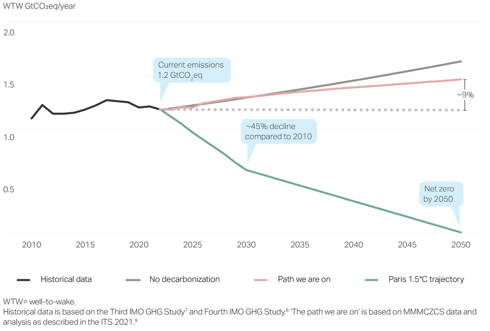
2050년 목표는 정해졌는데 이행할 수단이 부족합니다. 대체연료 기술, 관련 규정, 가이드 표준이 아직 만들어지는 중입니다.
규제와 감축 기술의 불확실성
환경 규제와 감축 기술의 불확실하고 복잡함 .
해운선사의 대응 전략 수립이 어려움
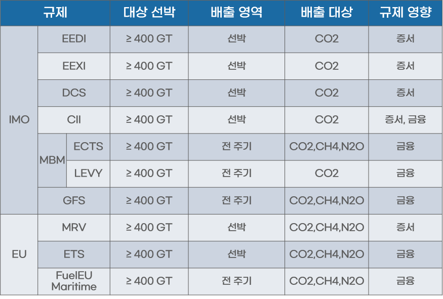
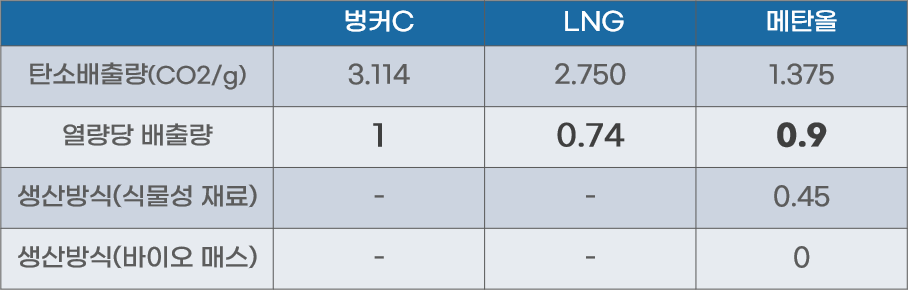
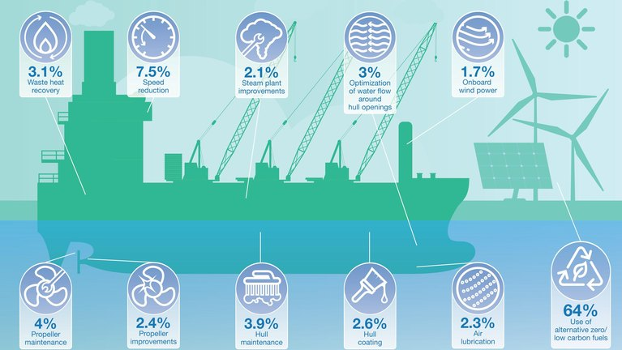
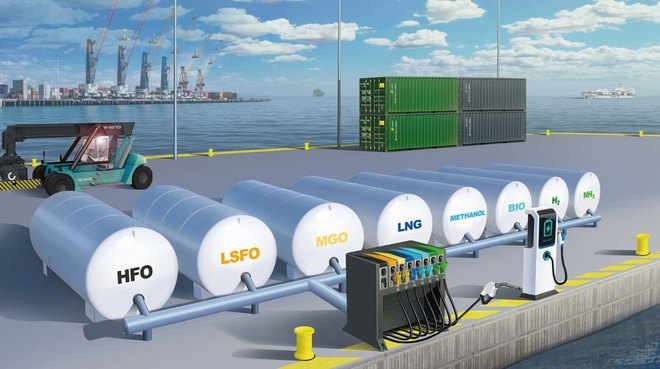
규제는 많고 기술은 불확실합니다. 왼쪽이 규제 목록, 오른쪽이 연료별 배출 특성입니다. 선사로서는 전략을 세우기 어렵습니다.
환경 규제 배경 정리
• 2050 년 목표 넷제로
• 2030년 탄소집약도 40% 저감 목표 달성 필요
• 국제 , 지역 규제가 확대 예정
• 탄소저감 기술 및 제도 부족으로 관련 동향 파악이 중요함
배경을 정리하면 네 가지입니다. 2050년 넷제로, 2030년 탄소집약도 40% 감축, 국제·지역 규제의 확대, 그리고 기술과 제도가 아직 부족해서 동향을 계속 봐야 한다는 점입니다.
탈탄소 3가지 옵션
탈탄소 방법은 세 가지입니다. 줄이기, 안 내기, 없애기입니다. 줄이기는 에너지 절감 장치, 효율 운항, 저탄소 연료입니다. 안 내기는 무탄소 연료, 없애기는 탄소 포집입니다.
감축 수단별 잠재량 (IMO)
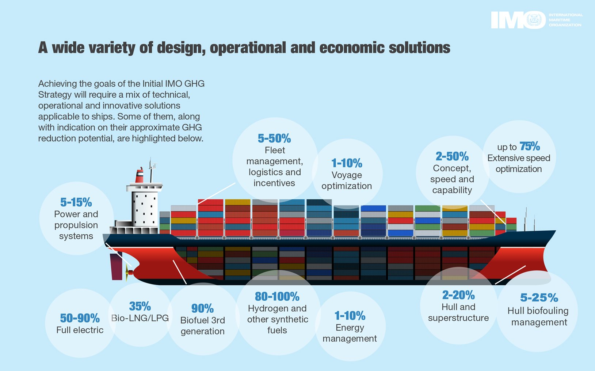
탄소 배출 0 달성을 위한 궁극적 대안 대체연료
IMO 자료입니다. 운항 최적화는 1~10%, 선체와 추진 개선은 수 %에서 20% 안팎인데 수소와 합성연료는 80~100%입니다. 큰 폭의 감축은 연료에서 나옵니다.
주요 연료 탄소 배출량
연료 톤당 CO₂ 배출량 (t) 디젤 (MDO/MGO) 3.206 저유황 중유 (LFO) 3.151 LNG 2.750 메탄 2.750 바이오디젤 2.834 메탄올 1.375 암모니아 0 수소 0
연소 기준 CO₂ 계수 (t-CO₂/t-연료) · IMO MEPC.364(79), 바이오디젤은 EU MRV 기본값 · 생산 과정 배출은 제외
연료 1톤을 태울 때 나오는 CO₂입니다. 경유와 중유는 3.1~3.2톤, LNG는 2.75톤, 메탄올은 1.375톤이고 암모니아와 수소는 0입니다.
다만 이것은 굴뚝에서만 본 숫자입니다. 바이오디젤은 태우면 2.8톤이 나오지만 지속가능성 인증이 있으면 규제에서는 0으로 봅니다. 이 차이가 2교시의 PoS 서류로 이어집니다.
전주기 관점: Well-to-Wake
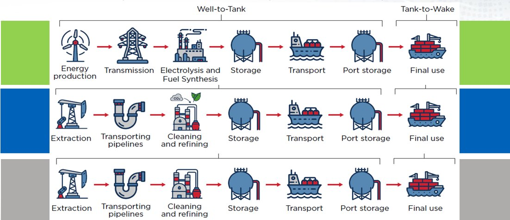
대형선박용 대체연료 후보
하지만 무탄소 연료로의 전환이 가능한
기술발전 , 인프라 , 제도 정비는 2040 년 이후 예상
벙커 C
LNG
메탄올
탄소배출량 (t-CO₂/t)
3.114
2.750
1.375
열량당 배출량
1
0.74
0.9
생산방식 ( 식물성 재료 )
-
-
0.45
생산방식 ( 바이오 매스 )
-
-
0
대형선에 쓸 수 있는 후보는 암모니아, 메탄올, 메탄 계열과 바이오연료입니다. 수소와 전기는 에너지 밀도 때문에 대형선에는 어렵습니다.
무탄소 연료가 본격적으로 쓰이려면 기술, 인프라, 제도가 갖춰져야 합니다. 2040년 이후로 보는 전망이 많습니다.
연료별 선박 적용 고려 사항
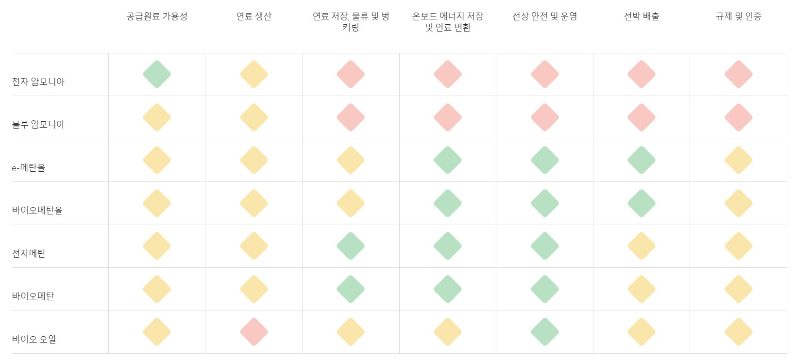
선박 적용에는 기술 개발 , 가격 외 많은 고려 사항이 있음 .
한 선사가 연료별로 원료 확보, 생산, 저장과 벙커링, 안전, 규제를 평가한 표입니다. 초록이 준비된 항목, 빨강이 과제입니다. 모든 칸이 초록인 연료는 없습니다.
암모니아 연료의 과제
항목
고려 사항
대안
에너지 밀도 및 볼륨
• 동일한 에너지 함량에 대해 VLSFO 에 비해 3.6 배의 부피와 2.2 배의 무게가 필요 .
• 독립 탱크와 단열재가 필요해 부피와 무게가 더욱 증가 .
• 속도 및 주행 거리 요건을 최적화하고 , 벙커링을 더 자주 수행하거나 , 화물 용량 손실을 수용합니다 .
연료공급 및 보관
• 필요한 양과 선박 유형에 따라 암모니아는 상온에서 완전 가압 또는 반 - 완전 냉장 상태로 저장 필요
• 습기가 있으면 부식성 , 알칼리성 환원제 , 산 , 할로겐 및 산화제와 반응 .
• 암모니아가 사용되는 탱크 , 파이프 및 구조 부품에 대한 신중한 재료 선택 ( 철 , 강철 및 특정 비철 합금 )
안전
• 독성 ( 낮은 농도 ) 은 기내 인원을 중독시킬 수 있음
• 벙커링 시 방출 위험이 증가 .
• 암모니아 유출은 환경 피해를 유발하거나 인간과 해양 생물 위험
• 암모니아를 적절히 취급하기 위해 선원 인식 및 숙련도 향상 필요
• 특정 지역에서는 안전 문제로 인해 암모니아 벙커링을 거부 . 벙커링과 화물 운항을 동시에 허용하지 않을 수 있습니다 .
• 건강 위험이 있는 농도 이전에 냄새를 감지할 수 있습니다 .
• 비료 , 화학 및 산업 냉각 산업의 경험 공유 ( 교육 프로그램 , 유지보수 , 검사 및 환기 절차 )
• 절차 참조로 사용할 최신 LNG 및 메탄올 연료 선박 개발
• 승무원 교육 및 안전 관리 시스템 표준
배출량
• CO2 배출량이 HFO 티어 II 에 비해 85% 이상 감소
• 황산화물 및 입자상 물질 배출량 90~100% 감소
• 잠재적인 암모니아 슬립 또는 N2O 배출량 감소로 인한 총 온실가스 배출량 감소 효과
• N2O 는 지구 온난화 잠재력이 CO2 의 300 배 이상 .
• 엔진 연소 최적화 프로세스의 일부로 고려합니다 .
• 배출을 최소화하기 위한 후처리 기술 개발(질소산화물(NOx)과 아산화질소(N2O) 저감에 필요한 SCR)
규정
• IGC 코드에서는 독성 때문에 암모니아 화물을 연료로 사용하는 것을 허용하지 않습니다 .
• IGF 코드에서는 플래그가 승인한 대체 설계가 필요합니다 .
• 해상 연료로서 암모니아에 대한 규범적 규칙이 개발될 예정입니다 .
• 선급 협회 , 암모니아 연료 선박에 대한 지침 발표
에너지 변환
• 선박용 엔진은 현재 존재하지 않으며 현재 개발 중입니다 .
• 열악한 연소 특성 , 다량의 파일럿 연료 필요 (2 행정 5-15%, 4 행정 최대 30%)
• 연료 전지 기술은 상업적으로 이용 가능하고 경쟁력이 없음
• 2 행정 및 4 행정 엔진 개발 진행 중 , 2025 년 최초 상용화를 목표
• 연료 전지 기술 개발 및 실증 프로젝트
암모니아를 예로 들면 풀어야 할 문제가 이만큼입니다. 부피가 크고, 독성이 있고, 아산화질소가 나옵니다.
표의 엔진 개발 일정은 작성 당시 기준입니다. 지금은 첫 암모니아 추진선이 인도되기 시작한 단계입니다.
주요 하드웨어 기반 탄소 저감 기술
탄소 저감 기술
목표치
Rotor Sail
로터 선박은 추진을 위해 매그너스 효과를 사용하도록 설계된 선박이다 . 이 배는 부분적으로 로터 세일이라고 하는 대형 동력 수직 로터에 의해 추진된다 .
Air Lubrication System
선박 공기 유활 시스템 (Air Lubrication System, ALS) 은 선박의 연료 소비량을 줄이기 위한 기술 중 하나로 선박의 바닥면 아래로 공기를 공급함으로써 공기의 거품이나 버블 층을 형성하여 선박과 물 사이의 마찰력을 줄이는 기술
PBCF
프로펠러 뒤쪽의 소용돌이 현상을 줄이기 위해 설계된 장치로 , 프로펠러 추진 성능 향상을 통한 연료 절감 효과가 있음
Hull Cleaning
선박의 선체는 해양 부착생물에 의해 연료 효율성이 저하됨 .
주기적인 선체의 소제와 저항 감소를 방지하는 저마찰 도료를 적용함으로 에너지 효율 저하를 막을 수 있음
Waste Heat Recovery
선박의 배기에서 발생하는 낭비열을 회수하여 전력으로 변환하는 시스템
대표 기술 다섯 가지입니다. 로터 세일, 공기윤활, 프로펠러 보스 캡 핀, 선체 청소, 폐열 회수입니다.
환경 규제 대응: 계측 · 보고 · 업무
환경 규제 대응 ( 투명한 데이터 계측 , 보고 , 업무 )
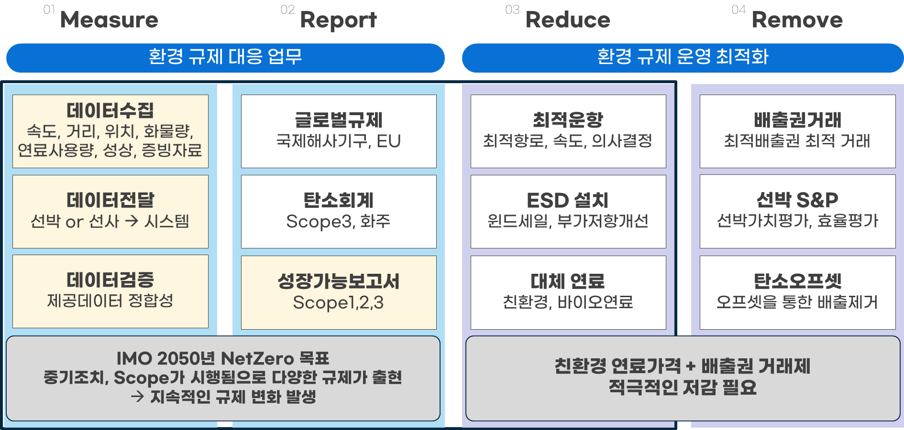
왼쪽이 규제 대응 업무입니다. 데이터를 모으고, 전달하고, 검증해서 규제별로 보고합니다. 오른쪽은 줄이는 일입니다. 최적 운항, 절감 장치, 대체연료, 배출권 거래입니다.
2·3교시는 왼쪽을 자세히 보고, 오른쪽은 3교시 끝에 다룹니다.
탄소 배출 보고에 필요한 데이터
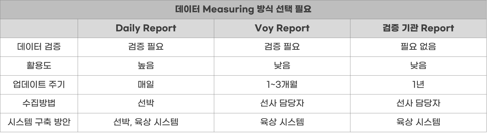
EU MRV와 IMO DCS가 요구하는 데이터는 운항시간, 거리, 연료소모량, 화물량입니다. 증빙은 항차보고서, 로그북, BDN입니다.
수집 방식은 세 가지입니다. 매일 보고, 항차 보고, 검증기관 보고서입니다. 매일 보고는 손이 많이 가지만 검증과 활용이 쉽습니다. 어느 방식을 택하든 2교시에서 보는 입력 항목은 같습니다.
항로 최적화 사례
같은 구간을 직선으로 간 경우와 최적화한 경우입니다. 빨리 가는 조건에서는 도착이 6.5시간 빨라지고 연료가 4.2% 줄었습니다. 정시 도착 조건에서는 연료 9%, CII 11% 개선으로 나온 사례입니다.
속력과 수익의 균형
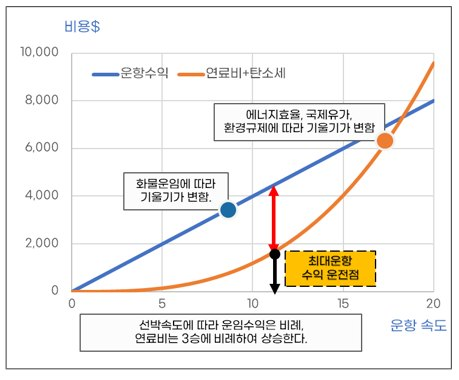
속도에 따른 운임 , 연료비용 TRADE OFF
선박 속도가 높으면 수익은 증가하나
연료비 , 탄소세가 증가
Weather Routing : 2~4% + More
속력을 올리면 항차를 더 돌려 수익이 늘지만 연료비와 탄소비용은 더 가파르게 늘어납니다. 두 곡선의 차이가 가장 큰 속력이 최적입니다.
3교시 마지막 실습에서 숫자를 넣어 직접 찾아봅니다.
Performance Monitoring: 선박 성능의 정의
선박 성능이란 ?
“ 해상날씨 영향을 제외한 선박의 추진 연비 ”
( 날씨 영향 보정이 난제 !)
Performance Monitoring: 속력–마력 비교
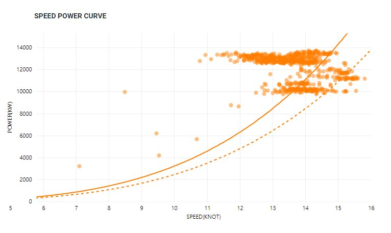
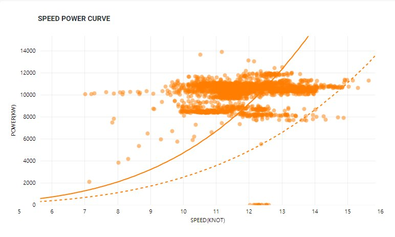
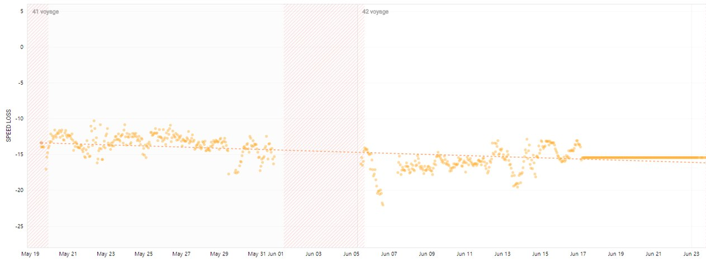
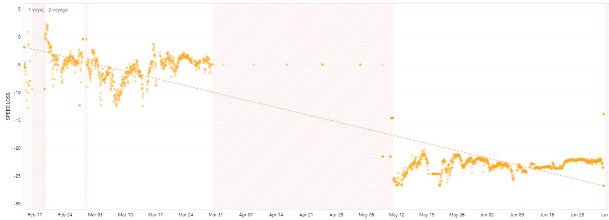
두 선박의 속력과 추진 마력입니다. 선박 A는 브라질에 14일, 선박 B는 호주에 4일 정박했습니다. 정박이 길었던 배가 같은 속력에 마력을 더 씁니다.
Performance Monitoring: 연료비 차이
돈으로 바꾸면 이렇습니다. 하루 50.4톤과 36.9톤, 톤당 50만 원, 연 200일 항해로 계산하면 50억 4천만 원과 36억 9천만 원입니다. 한 해 13억 5천만 원 차이입니다.
개요
강의 구성
개선 결과는 다음 해 기준선과 입력값이 됨
STEP 1
입력
선박 · 정오·출입항 보고
2교시
STEP 2
처리
레그 분할 · EU 범위 · 계산
2교시
STEP 3
검증
육상 담당 · 증빙 대조
3교시
STEP 4
보고·정산
DCS · CII · ETS · FuelEU · UK
1교시 · 3교시
STEP 5
개선
속력 · 오손 · 연료
3교시
1교시 14:00–14:50 환경 규제 배경 · 규제 · 대체 연료 · 대응 방안
2교시 15:00–15:50 선박 입력과 처리 : 이벤트, 연료 행렬, 감면 입력, EU 범위 판정
3교시 16:00–16:50 검증 · 보고·정산 · 개선 : 오류 사례, 허용오차, 성능 분석
지금부터 볼 실무의 지도입니다. 데이터는 다섯 단계를 지납니다. 배에서 입력하고, 육상에서 항차를 자르고 계산하고, 증빙과 대조해 검증하고, 규제별로 보고하고 정산하고, 마지막으로 성능을 분석해 비용과 등급을 줄입니다.
1교시 앞부분에서 각 규제가 무엇을 요구하는지 봤습니다. 2교시는 선박 입력과 육상 처리이고 감면 입력도 여기서 봅니다. 3교시는 검증과 성능입니다. 교시마다 화면에서 직접 해 보는 실습이 있습니다. 그때는 여러분이 숫자를 불러 주셔야 합니다. 조용하면 제가 지목하겠습니다.
아래 점선처럼 개선한 결과는 다음 해 입력 데이터로 다시 돌아옵니다.
용어 정리 · 데이터 관리
데이터 관리의 범위
출발점
규제 요구 IMO · EU · 영국
대상 데이터
STEP 1
입력 선박 · 항해사·기관장
정오·출입항 보고
누락·오류 시 미입력
STEP 2
처리 육상 담당 · 계산 도구
레그 분할CO₂·CII·CB 계산
누락·오류 시 경계 오판
STEP 3
검증 육상 담당 · 검증기관
증빙 대조
누락·오류 시 미확인
STEP 4
보고·정산 회사 · 당국
보고서 제출
누락·오류 시 기한 초과
STEP 5
개선 운항 · 기술팀
속력 · 오손
누락·오류 시 기준선 오류
데이터 관리 단계 간 수치 일치 확인 · 변경 시 사유 기록
본론 들어가기 전에 단어 하나 정리하겠습니다. 오늘 강의 제목에 "데이터 관리"가 들어 있습니다. 저도 처음 이 제목을 받았을 때 '엑셀 정리를 잘하라는 건가' 싶었습니다.
오늘 말하는 관리 대상은 연료 1톤의 기록 입니다. 배에서 기관장이 "주기관 VLSFO 32톤" 한 줄을 적습니다. 이 한 줄이 육상으로 넘어와 항차로 잘리고, EU 몇 %인지 판정되고, 증빙과 대조되고, 보고서가 되어 검증기관을 거쳐, 마지막에 배출권 몇 장, 벌금 얼마로 바뀝니다. 그리고 그 결과를 보고 내년에 속력을 줄일지 연료를 바꿀지 정합니다.
[표를 왼쪽부터 짚으며] 출발점은 규제가 요구하는 것, 그다음 입력, 처리, 검증, 보고·정산, 개선. 다섯 단계입니다. 단계마다 담당이 바뀝니다. 배, 육상에서 계산을 맡은 담당자, 검증 담당과 검증기관, 회사, 운항팀입니다. 아래 빨간 글씨는 그 단계에서 놓쳤을 때 생기는 일입니다.
표에 약어가 몇 개 있습니다. BDN은 연료 인도 증서, PoS는 바이오연료의 지속가능성 증명서, CB는 FuelEU 준수 잔액, EUA는 EU 배출권, SoC와 DoC는 적합확인서와 적합증서입니다. 뒤에서 하나씩 다시 나옵니다.
그래서 오늘 말하는 데이터 관리는 아래 한 줄입니다. 다섯 단계를 지나는 동안 숫자가 바뀌지 않게 하고, 바뀌었다면 왜 바뀌었는지 남기는 것입니다. 검증기관이 묻는 것도 "이 숫자가 처음 적은 숫자와 같습니까, 다르면 왜 다릅니까" 이 두 가지입니다.
화면 위쪽 머리말에 이 다섯 단계가 작게 표시됩니다. 지금 어느 단계 이야기인지 헷갈리시면 화면 위를 보시면 됩니다. 남색으로 칠해진 칸이 지금 단계입니다.
공통 사례 · EU ETS
케미컬 탱커 A의 EU ETS 처리 과정
규제 요구 1교시
EU 항구 간·항내 100%
오류 예 70%로 계산
입력 2교시
출항 보고
MGO 1,903 t
오류 예 출항 보고 누락
처리 2교시
레그 분할
역내 5,364 × 1.0
오류 예 EU 항구를 비EU로
검증 3교시
BDN↔벙커 보고
5,849 t
오류 예 PoS 누락
보고·정산 3교시
3/31 MRV 보고서
5,849 EUA
오류 예 미제출 €100/t
개선 3교시
속력–연료 곡선
FuelEU 잔액
오류 예 날씨 미보정 곡선
실제 선박 · 2026.1.1~11.21 단계별 오류는 제출량(EUA)과 비용(€)에 그대로 반영
오늘 세 시간 동안 계속 볼 배 한 척을 정하겠습니다. 케미컬 탱커 A입니다. 실제 선박이고 선박명은 가렸습니다. 숫자는 2026년 1월 1일부터 11월 21일까지 EU MRV 모니터링에 집계된 값입니다. 앞에서 이 배의 ETS와 FuelEU를 계산했습니다.
[왼쪽부터] 이 배는 대부분 EU 항구 사이를 다닙니다. 규제는 EU 항구 간 항차와 항내는 100%, EU와 비EU 사이 항차는 50%, 그리고 2026년분부터는 100% 제출에 메탄·아산화질소까지 넣으라고 합니다. 여기가 1교시입니다.
배는 출항 보고, 매일 정오보고, 그리고 BDN과 지속가능성 증명서를 입력합니다. 이 기간에 EU 관련 구간에서 MGO 1,903톤과 바이오디젤 599톤을 썼습니다. 2교시 앞부분입니다.
육상에서는 이 보고들을 받아서 레그를 자르고, 기항인지 판정하고, 지역계수를 곱합니다. 프로그램으로 하든 엑셀로 하든 순서는 같습니다. 역내 MGO 1,673톤과 EU와 비EU 사이 230톤의 절반에 3.206을 곱하면 5,732톤입니다. 메탄·아산화질소 116톤을 더하면 5,849톤입니다. 2교시 뒷부분입니다.
검증 단계에서는 BDN이 있는지, 잔량이 이어지는지, 바이오디젤의 증명서가 있는지 다시 봅니다. 검증은 숫자를 더하는 단계가 아니라, 처리에서 나온 5,849톤이 증빙과 맞는지 보는 단계입니다. 3교시 앞부분입니다.
그리고 3월 말 보고서, 9월 말 제출입니다. 5,849 EUA, 80유로면 약 46만 8천 유로입니다. 안 내면 톤당 100유로 벌금에 제출 의무는 그대로 남습니다.
마지막 단계는 이 비용을 줄이는 일입니다. 이 배는 바이오디젤로 FuelEU 잔액이 약 1,495톤 흑자입니다. 이 흑자는 이월하거나 다른 배와 합칠 수 있습니다.
[아래 '오류 예' 줄을 가리키며] 단계마다 틀리는 방식이 다릅니다. 오늘 사례 대부분이 이 줄 가운데 하나입니다. 사례를 보실 때 어느 단계에서 틀린 사례인지만 짚어 보시면 됩니다.
1교시
1교시 정리
1 단일 원천, 규제별 산출
같은 입력에 규제별 경계 적용 · 규제별 개별 집계는 어긋남
2 2026년 변경 사항
ETS 100% · CH₄·N₂O · DCS 세분화 · UK ETS
3 분모와 경계
분모(거리·화물)와 경계(기항·EU)가 등급·비용 결정
1교시 정리입니다. 하나, 입력은 하나인데 규제마다 결과가 다릅니다. 규제별로 따로 만들면 어긋납니다. 둘, 2026년분부터 ETS 100%입니다. 올해 데이터는 내년 1월부터 3월 사이에 검증받습니다.
셋, 연료만 맞아서는 부족합니다. 거리와 화물 같은 분모, 기항과 EU 여부 같은 경계가 등급과 비용을 바꿉니다.
여기까지가 1교시입니다. 2교시는 이 숫자들이 배에서 어떻게 입력되는지부터 봅니다.
2교시 · 15:00–15:50
선박 데이터
선박 입력 → 육상 계산 → 규제 보고서
이벤트 · 연료 행렬 · 벙커링·바이오 · EU 범위 판정
2교시 시작하겠습니다. 1교시에는 규제 쪽에서 출발해서 어떤 데이터를 요구하는지 봤습니다. 2교시는 반대 방향입니다. 브리지와 기관실에서 항해사, 기관사가 입력하는 숫자에서 출발해서, 그 숫자가 육상에서 항차로 나뉘고, EU 범위가 판정되고, 규제별 보고 데이터로 바뀌는 과정을 따라가겠습니다.
2교시가 끝나면 정오보고 한 장을 보고 검증에서 걸릴 곳을 짚으실 수 있습니다.
예시 화면과 항목 이름은 한 가지 선박 보고 프로그램에서 가져왔지만, 여러분 회사가 쓰는 보고 프로그램이나 엑셀 양식도 뼈대는 거의 같습니다. 어떤 항목이 왜 필요한지만 알면 어느 도구에서든 그대로 쓰실 수 있습니다.
입력 · 정오보고 작성
정오보고 작성 흐름
11:30 ~ 12:00
항해부 정오 위치 · 대지/대수 거리
→
11:00 ~ 12:00
기관부 유량계 지시값 · 측심
→
12:00 ~ 12:30
선박 입력 입력 검사 통과
→
통신 연결 시
선박 → 육상 선내에 먼저 저장
단위 m³ ↔ t 환산 · 밀도는 15℃ 기준
시간 정오 = 현지시각 · 시간대 변경일은 하루가 23시간 또는 25시간
입력 칸 기기 × 유종 × 배치입력 칸 에 따라 적용 규제가 달라짐
먼저 배 안에서 정오보고가 어떻게 만들어지는지 보겠습니다. 정오보고 한 장이 나오기까지 한 시간 반쯤 걸립니다.
항해사는 위치와 거리, 기관부는 유량계와 측심, 마지막으로 입력과 선장 확인. 숫자 하나가 세 사람 손을 거칩니다. 말 전달 게임 해 보신 분은 아실 겁니다. 세 명만 거쳐도 "사과"가 "사자"가 됩니다.
배에서 입력이 어려운 이유는 아래 세 가지입니다. 단위, 시간, 칸. 탱크는 부피로 재는데 규제는 무게를 원하고, 정오는 현지시각이라 시간대를 바꾸는 날은 하루가 23시간이 됩니다. 그리고 제일 중요한 게 칸입니다. 같은 2톤이라도 주기관 칸이냐 보일러 칸이냐에 따라 감면이 되기도 하고 안 되기도 합니다. 지금부터 계속 나오는 게 이 칸 이야기입니다.
입력 · 보고 단위
보고 단위: 이벤트 (예시 23종)
항차 골격 이벤트9종 · RUP = 항해 개시
INITIAL_SETUP DEPARTURE_SBY RUP NOON_AT_SEA ARRIVAL_SBY ARRIVAL NOON_IN_PORT NOON_MANEUVERING NOON_AT_STOP_ENG
짝(시작·종료) 이벤트5쌍
DROP ↔ HEAVE_ANCHOR BEGIN ↔ END_SHIFTING BEGIN ↔ END_DRIFTING BEGIN ↔ END_STOPPAGE ENTER ↔ LEAVE_CANAL
수시 이벤트4종
BUNKERING DEBUNKERING CARGO_WORK BIOFUEL_SPECIFICATION
이벤트의 시작·끝 시각 = 규제 데이터의 경계 (항해/비항해, EU 항차, 레그)
항차 = 화물 기항 간 구간(EU 기준) · 레그 = 출항 보고 간 구간(계산 단위)
정오보고라고 부르지만, 규제 데이터로 보면 보고는 하루 한 장 단위가 아닙니다. 보고의 단위는 이벤트입니다.
보고 프로그램마다 이름과 개수는 조금씩 다른데, 이 예시에서는 이벤트가 23종입니다. 출항 스탠바이, 항해 개시, 정오, 도착 같은 항차 골격 이벤트가 9종. 투묘와 양묘처럼 시작과 끝이 짝을 이루는 이벤트가 5쌍. 그리고 벙커링이나 화물작업처럼 그때그때 생기는 수시 이벤트가 4종입니다.
이렇게 나누는 이유는 규제가 묻는 게 결국 "언제부터 언제까지 무엇을 했느냐"이기 때문입니다. IMO는 항해와 비항해를 나누고, EU는 계류 해제부터 계류까지를 항차로 봅니다. 그 경계가 되는 시각이 이 이벤트들입니다.
아래 줄에 용어 두 개를 적어 두었습니다. 항차는 화물을 싣고 내리는 기항 사이 구간이고, 레그는 육상에서 출항 보고 사이로 자르는 계산 단위입니다.
그래서 이벤트 하나를 빠뜨리거나 시각을 잘못 넣으면, 연료 총량은 맞는데 다른 구간에 가서 붙습니다. 다음 장에서 한 항차를 타임라인으로 펼쳐 보겠습니다.
입력 · 항차 타임라인
항차 이벤트 타임라인
항내·조종
항해 (FAOP → EOSP)
투묘 대기
접안·하역
DEPARTURE _SBY
RUP
NOON
NOON
ENTER↔LEAVE _CANAL
NOON
ARRIVAL _SBY
DROP ↔ HEAVE_ANCHOR
ARRIVAL
CARGO _WORK
IMO DCS FAOP~EOSP = 항해 · 나머지(운하 포함) = 비항해
EU MRV·ETS 항차 = 계류 해제 ~ 다음 기항 계류(연료·배출은 투묘 대기 포함) · 보고 항목 '항해시간(time at sea)'은 투묘 제외
CII 분모 = Capacity × 연간 총거리(항해 + 비항해)
같은 투묘 12 h: IMO 비항해 / EU 항차 배출에 포함
선박 입력 이벤트 종류 + UTC·현지시각(LT) + 위치
육상 해석 항해/비항해, EU 항차, 레그 경계
오류 유형 순서 역전·짝 누락·시각 오기 → 연료가 다른 구간으로 집계
부산에서 출항해서 운하를 지나 유럽 항구 앞에서 투묘 대기하다가 접안하는 항차입니다. 많이 단순화했습니다. 검은 점이 출항·도착 같은 항차 골격 이벤트, 흰 점이 정오보고, 흰 막대가 운하 통항, 청록 막대가 투묘 구간입니다.
아래 세 줄처럼 같은 타임라인을 규제마다 다르게 읽습니다. IMO는 항해 개시부터 항해 종료까지를 항해, 나머지를 비항해로 나눕니다. 2026년 데이터부터는 비항해 연료를 따로 보고해야 하고, 운하 통항도 비항해로 봅니다.
EU는 계류를 푼 시점부터 다음 기항지에 계류하는 시점까지를 한 항차로 봅니다. 그래서 같은 투묘 12시간이 IMO에서는 비항해이고, EU에서는 그 사이 쓴 연료와 배출이 항차에 포함됩니다. 다만 EU도 보고 항목 중 "항해시간"을 계산할 때는 투묘 시간을 뺍니다. 맨 아래 CII는 분모가 Capacity 곱하기 연간 총거리이고, 총거리에는 항해와 비항해 거리가 다 들어갑니다.
결국 배가 입력하는 건 이벤트와 시각이고, 해석은 육상이 규제별로 합니다. 이벤트의 순서와 짝이 정확해야 하는 이유입니다. 짝이 깨지면 어떻게 되는지 문제 하나로 보겠습니다.
퀴즈 · 투묘
재투묘 시 투묘 시간
10:00 투묘(DROP) → 14:00 닻이 끌려 재투묘, DROP을 한 번 더 입력 → 22:00 양묘(HEAVE).
C. 20시간. DROP 두 개 × 같은 HEAVE = 12 h + 8 h · 재투묘는 HEAVE → DROP
문제 읽어 드리겠습니다. 오전 10시에 투묘했습니다. 오후 2시에 닻이 끌려서 자리를 옮겨 다시 투묘했고, 당직 항해사가 DROP을 한 번 더 입력했습니다. 밤 10시에 양묘했습니다. 실제 투묘는 12시간입니다. 보고 프로그램은 몇 시간으로 계산할까요? 보기는 12시간, 16시간, 20시간, 32시간입니다. 잠깐 생각해 보십시오.
[5초 · R키]
정답은 C, 20시간입니다. 투묘와 양묘를 짝지어 시간을 내는 프로그램은 두 DROP을 같은 HEAVE와 짝지어서 12시간에 8시간을 더합니다. 빠짐없이 입력하려다 오히려 틀린 경우입니다. 재투묘는 양묘를 먼저 넣고 다시 투묘를 넣어야 합니다. 다음 장에 그림으로 정리해 두었습니다.
입력 · 투묘 사례
투묘 이벤트 짝 오류와 투묘 시간
사례 EU 항구 앞 투묘 대기
정상
투묘 12 h
DROP 10:00 HEAVE 22:00
DROP 두 번
12 h
+8 h 중복 → 20 h
DROP 10:00 DROP 14:00 (재투묘) HEAVE 22:00
HEAVE 누락
실제 12 h
+20 h → 32 h으로 계산
DROP 10:00 다음 이벤트(익일 18:00)까지
영향
투묘 시간 증가 = 항해시간 감소 항해/비항해 연료 배분 왜곡평균속력 왜곡
현장 대응
재투묘: HEAVE → DROP 순서로 입력 입력 시 "짝 미완성" 경고가 뜨는지 확인 72 h 초과 투묘 → 육상 확인 (예시 기준 · 규정값 아님)
방금 문제를 그림으로 옮긴 겁니다. 선박 한 척이 유럽 항구 앞에서 투묘 대기를 했습니다. 첫 줄이 정상입니다. 오전 10시 투묘, 밤 10시 양묘, 12시간. 둘째 줄이 방금 보신 DROP 두 번이고, 20시간으로 계산됩니다.
셋째 줄은 반대로 양묘 입력을 빠뜨린 경우입니다. 다음 이벤트가 나올 때까지 계속 투묘 중인 걸로 처리돼서 32시간이 됩니다.
투묘 시간이 늘면 그만큼 항해시간이 줄고, 연료가 항해로 갈지 비항해로 갈지도 바뀝니다. 선박에는 "재투묘는 양묘, 투묘 순서로 다시 넣는다"는 것만 안내해 주시면 됩니다. 이 안내 하나로 연말에 주고받는 확인 메일이 많이 줄어듭니다.
72시간 넘는 투묘를 육상에서 다시 본다는 것은 예시 기준이고 규정값이 아닙니다. 몇 시간부터 볼지는 회사가 정해서 내부 절차에 적어 두셔야 합니다. 벌크선처럼 장기 대기가 흔한 선종은 확인한 뒤 정상으로 처리합니다.
입력 · 필수 필드
필수 입력 필드와 해당 규제
항목 코드 (예시) 내용 IMO DCS·CII EU MRV·ETS FuelEU UK ETS CII 보정 연결 IS_EU_PORT EU 항구 여부 – ● ● – – 2 COMMENCE_AT_BERTH 접안 시각 (항차 종료 기준) – ● – – – 1 STEAMING_DISTANCE 대지거리 (nm) ● ● – – – 2 CONSUMPTION_{기기}_{유종} 소비 행렬 ● ● ● ● ● 5 ROB · SOUNDING 잔량 · 측심 보정 ● ● – – – 2 BUNKERING + ATTACH_BDN 수급 · 성상 · BDN ● ● ● ● – 4 BIO_FUEL PoS · LCV · GHG ◐ ● ● ● – 4 ALTERNATIVE_ENERGY 육상전원 kWh · EDN(전력 인도증) ● – ● – – 2 CARGO_WEIGHT · SHIP_CONDITION 화물 · 만재/공선 ● ● – – ● 3
소비 행렬 오류 → 5개 산출물 동시 오류 · EU 항구 여부 오류 → EU ETS·FuelEU 동시 오류F = WtW × LCV (MEPC.1/Circ.905)
이제 필드 단위로 보겠습니다. 왼쪽은 배가 입력하는 필수 필드, 오른쪽은 그 필드를 쓰는 규제입니다. 맨 오른쪽 "연결" 숫자가 클수록 틀렸을 때 영향 범위가 넓습니다.
가장 넓은 건 연료 소비 행렬입니다. 기기별, 유종별 소비량이 IMO, EU, FuelEU, UK, CII 보정까지 다섯 군데에 전부 들어갑니다. 여기서 오타가 하나 나면 다섯 군데가 같이 틀립니다.
반대로 연결은 두 개뿐인데 영향이 큰 필드가 있습니다. 맨 위, EU 항구 여부 체크입니다. 이게 틀리면 EU ETS와 FuelEU가 같이 틀립니다. 1교시에 본 "1톤이 0이 되는" 경우가 이 체크박스 하나에서 나옵니다.
대지거리는 CII 분모에 들어가고 EU 수송작업량에도 들어갑니다. 육상전원과 바이오 배치는 비교적 새로 생긴 필드인데, 감면과 바로 연결되기 때문에 뒤에서 따로 보겠습니다. 영국 ETS도 BDN을 기준으로 모니터링하고, 바이오는 적격연료 감축 청구라는 절차로 인정받기 때문에 이 두 줄은 영국 칸에도 점이 찍혀 있습니다. 바이오 줄의 IMO 칸이 반만 찬 점인 것은, IMO가 인증된 바이오에만 별도 배출계수를 쓰기 때문입니다.
입력 · 연료 소비 행렬
연료 소비 행렬: 기기 × 유종
HFO VLSFO MGO LNG BOG BIO-n ME GE BLR COMBLR IGG CARGOENG GCU OTHER
입력 칸
보일러 · 화물 관련 (사례)
해당 없음
입력 칸 생성 기준 제원(기기 × 대수 × 유종) = 입력 칸육상 계산에서 제외
사례 탱커의 보일러 연료
화물 가열 보일러 연료(BLR·COMBLR )를 주기관 칸에 합산
IMO DCS 2026: 기기별 세분화 보고 불가 CII FC_boiler 보정 근거 소멸
유종 HFO 중유 · VLSFO 저유황 중유(황 0.5% 이하) · MGO 선박용 경유 · LNG 액화천연가스 · BOG 화물탱크 증발가스 · BIO-n 바이오 배치기기 ME 주기관 · GE 발전기 · BLR·COMBLR 보일러 · IGG 불활성가스 발생기 · CARGOENG 하역펌프 엔진 · GCU 가스 연소 장치
연료 소비는 이 행렬에 입력합니다. 세로가 기기, 가로가 유종이고, 진한 칸이 실제로 입력하는 칸입니다. 청록 테두리는 오른쪽 사례에 나오는 보일러·화물 관련 칸입니다. LNG선이면 주기관 칸에 LNG와 BOG가, 탱커면 보일러 칸에 HFO가 크게 찍힙니다.
중요한 건 이 칸이 선박 제원에서 만들어진다는 점입니다. 주기관이 몇 대인지, 보일러가 어떤 연료를 쓰는지 제원에 등록돼 있어야 칸이 생깁니다. 제원에 없는 칸에 값을 넣으면 육상에서 경고 없이 버려질 수 있습니다. 신조선이 들어오거나 개조를 하면 제원부터 갱신해야 하는 이유입니다.
탱커가 화물 가열용 보일러 연료를 편하다고 주기관 칸에 합쳐 넣는 경우가 있습니다. 2026년부터 IMO DCS는 기기별로 나눠 보고해야 하니까 일단 그것부터 문제입니다.
더 큰 문제는 CII입니다. 화물 가열 연료는 CII에서 보정, 즉 일정 비율을 빼 줄 수 있는 항목인데 기기 구분이 없으면 뺄 근거가 사라집니다. 편해서 합쳐 넣은 입력 습관이 등급까지 영향을 줍니다.
입력 · 기기별 계측 방식
기기별 연료 계측 방식
HFO · VLSFO 측심 · 밀도@15℃ MGO 측심 BIO-n 배치 배치별 ROB LNG 화물탱크 BOG 자연·강제
FM FM FM 여러 대 공유
ME 주기관 GE 발전기 ×3 BLR · COMBLR 보일러 IGG · CARGOENG ME (가스 + 파일럿) GCU 소각
기호: ● 계측 ◐ 배분 ○ 추정 ● 계측 ◐ 비율로 배분 대수별 운전시간 ○ 추정 위주 버너 시간 × 용량 ○ 하역 시에만 단시간 · 대량 ● 가스 + MGO 두 칸 ◐ 추진 외 연소 탱크 (기초값) 유량계
기관실 배관도를 아주 단순하게 그렸습니다. 기관장님들이 보시면 화내실 수준으로 단순화했습니다.
왼쪽은 탱크, 가운데 동그라미가 유량계, 오른쪽이 기기입니다. 주기관은 대부분 유량계가 있어서 계측값이 나옵니다. 발전기는 유량계 하나를 세 대가 같이 쓰는 경우가 많아서 운전시간 비율로 나눕니다. 점선 동그라미가 그 뜻입니다.
문제는 청록 테두리 칸입니다. 보일러는 유량계가 없는 배가 꽤 있어서 버너 운전시간 곱하기 용량으로 추정합니다. 불활성가스 발생기(IGG)와 하역펌프 엔진은 하역할 때만 짧은 시간에 많이 씁니다.
그런데 조금 뒤에 볼 CII 보정, 그러니까 화물 가열이나 하역펌프 연료를 일정 비율 빼 주는 항목이 전부 이 청록 테두리 칸에서 나옵니다. 감면받을 숫자가 하필 가장 부정확한 칸에 있습니다.
입력 · 기기별 오류 유형
기기별 입력 오류 유형
기기 칸 난이도 빈발 오류 영향 규제 입력 단계 검사 ME 주기관●●● m³ 그대로 입력 · 밀도 15℃ 미보정 DCS · CII 분자 전체 시간당 중앙값 힌트 · 범위 경고 GE 발전기●●● 항해 중 0 · GE1~3 한 칸에 합산 DCS 기기별 · 전기 보정 항해 20 h 이상 GE 0 → 경고 (예시 기준) BLR · COMBLR ●●● 화물가열분을 ME에 합산 · 추정값 고정 CII FC_boiler 분리 칸이 없으면 절차로 보완 IGG · CARGOENG ●●● 하역 시간과 소비 시점 불일치 CII FC_others (하역펌프 엔진만) 화물작업 이벤트와 짝 확인 LNG · BOG ●●● 파일럿 MGO 누락 · 벤트를 소비로 입력 CII · ETS·FuelEU 메탄 슬립 BOG 자연·강제·소비·벤트 4칸 GCU ●●● 추진 연료로 오인 DCS 합산 · 일별 CII 왜곡 기기 칸 분리 BIO-n ●●● 배치 대신 화석 칸에 입력 ETS CO₂ 0 처리 · FuelEU WtW 기기 × 배치 칸 · 음수 ROB 차단 전력 kWh ●●● 전압·전류·역률(V·I·PF) 중 하나 누락 · 계기 단위 CII FC_electrical √3·V·I·PF·h 계산값(참고) · 화물분은 계량 또는 기국 승인
같은 내용을 표로 정리했습니다. 점이 많을수록 틀리기 쉬운 칸입니다. 제 주관적인 점수라서 기관장님들은 생각이 다르실 수 있습니다.
주기관은 점 하나입니다. 계측이 되니까요. 다만 탱크를 부피로 재고 15도 밀도 보정을 빠뜨리면 1에서 2%가 틀어집니다.
점 셋짜리를 보십시오. 보일러, 불활성가스·하역 엔진, 바이오 배치. 세 가지 모두 감면이나 보정과 연결된 칸입니다. 보일러는 화물 가열 보정, 하역펌프 엔진은 기타 보정, 바이오는 배출권 CO₂ 0 처리.
오른쪽 끝 열은 입력 단계에 걸어 둘 만한 검사입니다. 여러분 보고 프로그램이 이 검사를 해 주는지 확인해 보십시오. 보일러 줄에는 "분리 칸이 없으면 절차로 보완"이라고 적었습니다. 화물 가열분을 따로 적는 칸이 없는 양식이라면, 누가 언제 나눠 기록할지를 회사 절차로 정해 두셔야 합니다.
입력 · 연료 잔량
잔량(ROB) 등식
금일 ROB = 직전 ROB − 소비 + 보정 + 수급 − 반출(디벙커링)
HFO 예시 (t)
820.0 직전 ROB
−32.5 소비
+1.2 보정
+500.0 수급
1,288.7 금일 ROB
사례 음수 ROB는 저장 차단
VLSFO 직전 ROB 12.0 − 소비 15.3 = −3.3 t
주요 원인
유종 전환을 다른 유종 칸에 기록 벙커링 이벤트 누락 측심 보정을 다음 날로 미룸
검증기관 우선 확인: 항차 n 기말 ROB = 항차 n+1 기초 ROB
연료 숫자는 전부 이 등식으로 묶입니다. 어제 잔량에서 오늘 쓴 걸 빼고, 측심 보정을 더하고, 받은 걸 더하고, 반출한 걸 뺀 값이 오늘 잔량입니다. 가계부와 같은 구조인데, 이 가계부는 검증기관이 봅니다.
왼쪽은 HFO 예시입니다. 820톤에서 32.5톤 쓰고, 측심 보정으로 1.2톤 늘고, 500톤 받아서 1,288.7톤. 이 등식이 매 보고마다 맞아야 연간 합계도 맞습니다.
오른쪽은 입력 단계에서 막아야 하는 사례입니다. 저유황유 잔량이 12톤인데 15.3톤을 썼다고 입력하면 잔량이 마이너스 3.3톤이 됩니다. 탱크에 없는 기름을 태운 셈이니, 보고 프로그램이 이런 값의 저장을 막아 주는지 확인하십시오. 엑셀이라면 음수 잔량 검사식을 넣어 두시면 됩니다.
원인은 대개 셋 중 하나입니다. 유종 전환을 다른 칸에 적었거나, 벙커링을 빠뜨렸거나, 측심 보정을 다음 날로 미뤘거나. 검증기관도 이 등식의 연속성부터 봅니다. 그래서 입력하는 시점에 막는 게 가장 비용이 적게 듭니다.
입력 · 벙커링
벙커링 입력: 수량·황·밀도·점도 + BDN
입력 항목 규제 용도 수량 (t)BDN 차감법 연료 소비량(FOC), ETS·FuelEU 황 (%)MARPOL 황 한도 0.5% / 0.1% 밀도 (kg/L, 15℃)부피 → 질량 환산 점도 (cSt)중질유 분류 (LSFO → LSFOH) · IMO CF 는 BDN의 ISO 8217 등급 기준 BDN 첨부 수급량·성상의 증빙 원본
사례 1 밀도 입력 오타
밀도 1.5 (예시 기준 0.8~1.01 kg/L) → 입력 시 사유 입력 · 대부분 소수점 오타
사례 2 점도 경계 20 cSt · 80 cSt (예시 기준)
경계 근처에서는 1% 차이로 유종 변경 · 80 cSt 초과 LSFO → LSFOH · 규정값 아님
사례 3 수급 0 보고, BDN에는 연료 (실제 8건)
미검출 시 연간 연료에서 전량 누락 · 3교시 사례에서 상세
벙커링 입력입니다. 수량, 황 함량, 밀도, 점도 네 가지를 넣고 BDN을 붙입니다. 쓰임새가 다 다릅니다. 수량은 연료 합계에, 황은 황 규제에, 밀도는 질량 환산에, 점도는 유종 분류에 쓰입니다.
오른쪽 세 사례를 보십시오. 첫째, 밀도 1.5. 선박 연료 밀도는 1을 넘기 어렵습니다. 1.5면 물보다 한참 무거운 기름인데, 그런 기름이면 펌프가 먼저 파업합니다. 대부분 0.95를 잘못 친 소수점 오류입니다. 범위를 벗어난 밀도는 사유를 적어야 저장되게 해 두는 편이 안전합니다.
둘째, 점도. 80 cSt를 넘는 저유황유를 중질유로 따로 분류하는 경우를 예로 들었습니다. 이 경계와 밀도 범위는 예시 기준이라, 회사가 값을 정해 모니터링 계획에 적어 두셔야 합니다. IMO 배출계수 자체는 BDN에 적힌 ISO 8217 등급으로 정해집니다. 그래서 점도와 등급 모두 BDN과 정확히 맞춰 주셔야 합니다.
셋째는 실제로 여덟 건 나온 경우입니다. 배에서 "윤활유만 받았다"며 연료 수급을 0으로 보고했는데, BDN을 열어 보니 연료가 찍혀 있었습니다. 보고값만 믿었다면 연간 연료에서 그만큼이 통째로 빠졌을 겁니다. 그래서 검증은 반드시 증빙 원본과 대조합니다. 이 사례는 3교시에 자세히 보겠습니다.
감면 · 입력 원칙
감면 입력 원칙
선박 · 입력 화면 원천값만 입력 kWh · 리퍼 · STS · PoS · EDN
육상 계산 보정·감면은 연간 단계에서 계산 일별 CII에는 보정 미반영
육상 검증 선종 적합 · 합계 일치 증빙 판독
검증기관 증빙 없으면 감면 전 값 인정
선박 원천값이 없으면 육상에서 감면 계산 불가
실데이터 · 바이오 사용 31척
CO₂ 재계산 불일치 2척 (85 t · 615 t) F 입력
실데이터 · 바이오 수급 74건 (2026)
첨부 누락은 전부 구형 양식 에서 발생
감면 입력에는 원칙이 있습니다. 배는 원천값만 넣습니다. 전력량, 리퍼 수, STS 체크, PoS, 인도증 번호. 감면 계산은 육상이 연간 단계에서 합니다. 그래서 매일 보는 일별 CII에는 보정이 안 들어가 있습니다. 매일 D등급이 찍혀도 놀라지 마시라는 말씀입니다.
마지막에 검증기관은 증빙이 없으면 감면 전 값을 인정합니다. 세무서와 같습니다. 영수증 없는 경비는 경비로 인정받지 못합니다.
아래는 제가 검증하면서 본 실제 데이터입니다. 바이오연료를 쓰는 31척 중 2척이 계수를 손으로 넣어서 재계산과 85톤, 615톤 차이가 났습니다. 올해 바이오 수급 74건 중 첨부 누락은 전부 PoS 칸이 없던 옛 양식에서 나왔습니다. 화면에 칸이 없으면 사람은 안 넣습니다.
감면 · IMO CII 보정 입력
CII 보정: 선박 입력 항목과 육상 검증 항목
보정 대상 선박 입력 육상 검증 수동 확인 필요 FC_electrical 리퍼 · 화물냉각 · 하역펌프 전력 화물용 전력 kWh(계량기) × SFOC(연료소비율, 기본 175/200 g/kWh) 선종별 체크 · 차감 합 일치 하역펌프 인정 범위 해석 FC_boiler 탱커 화물 가열 · 증기 구동 하역펌프 BLR · COMBLR 소비 칸 보정값 ≤ 보일러 CO₂ 가열분 분리 기록 여부 FC_others 독립 엔진 구동 하역펌프 CARGOENG 칸 (IGG는 공제 제외) FC_others 재계산 – AF_tanker STS 항차(≤600 nm·≤72 h) 화물작업 보고의 STS 체크 STS 건수 자격 조건(거리·시간) 재판정 항차조정 Reg.3.1 사유(선박 안전·인명 구조) / 내빙등급선의 빙해 항해 조정 시작·종료 이벤트 + 사유 전체 CO₂ 10% 초과 시 재확인 (예시 기준) 구간과 증빙(로그북) 대조 N₂ 차감 LNG 화물 질소 LNG 밀도 · COQ 조성 COQ 소수 넷째 자리 대조 CTMS(화물 계량 시스템) 값 누락 여부
FC 전력·보일러·기타는 (0.75 − 0.03·yᵢ)배만 공제 (2023 = 0.75 … 2026 = 0.66) · 발전기 총 전력 계산값(√3·V·I·PF·h)은 참고, 화물분은 계량 또는 기국 승인
N₂ 차감 근거는 SEEMP 지침(MEPC.395(82)) · 빙해·케미컬선 계수(fi·fm·fc)와 Capacity 상·하한은 선박 입력 항목이 아닌 육상 제원 마스터 항목
CII 보정 항목을 배가 넣는 값과 육상이 확인하는 값으로 나눈 표입니다. 표는 자료로 보시고, 두 가지만 짚겠습니다.
[표 아래 굵은 줄] 첫째, 전기·보일러·기타 보정은 쓴 연료를 전부 빼 주지 않습니다. 2026년분은 0.66배만 공제됩니다.
[마지막 열 굵은 글씨] 둘째, 굵게 적은 두 칸은 자동 검사로 잡기 어려워 육상 담당자가 직접 봐야 하는 곳입니다. 보일러 가열분을 따로 기록했는지, 항차조정 구간이 로그북과 맞는지입니다. 검증기관이 물어볼 곳도 여기입니다.
퀴즈 · 항차조정
항차조정 구간 입력
탱커가 조난 선박 구조로 3일간 항로를 벗어났습니다(Reg.3.1 사유). 이 구간 연료·거리를 CII에서 제외받는 방법은?
A 아무것도 · 육상이 AIS로 알아서 판정
B 조정 시작·종료 이벤트 + 사유 + 로그북
C 정오보고 비고란에 "Rescue" 한 줄
D 연말에 검증기관에 메일
B. 구간을 이벤트로 나눠야 연료·거리 제외 가능 · 비고란은 계산에 미반영 · 연말 메일은 구간 데이터 없음
문제 하나 풀겠습니다. 탱커가 조난 선박을 구조하느라 사흘간 항로를 벗어났습니다. 이 구간을 CII에서 빼려면 배는 뭘 해야 할까요? 보기는 A 육상이 AIS로 알아서 판정, B 시작·종료 이벤트와 사유, C 비고란에 한 줄, D 연말에 검증기관에 메일입니다. 잠깐 생각해 보십시오.
[5초 · R키]
정답은 B입니다. 구간을 시작 이벤트와 종료 이벤트로 나눠야 그 사이 연료와 거리를 뺄 수 있습니다. 비고란 한 줄은 사람은 읽어도 계산에는 들어가지 않습니다. 연말 메일은 이미 늦습니다. 그리고 조정 구간이 연간 CO₂의 10%를 넘으면 육상에서 다시 확인하는 식의 기준을 두시길 권합니다. 10%는 예시 기준입니다. 너무 많이 빼면 검증에서 먼저 확인 대상이 됩니다.
감면 · EU ETS · FuelEU · UK
지역 규제의 감면과 예외
감면·예외 규제 효과 필요한 데이터 내빙등급 IA / IA Super ETS 제출량 5% 감면 (~2030) 내빙등급 증서 (IA·IA Super 또는 동등) · 실제 빙해 항해 여부 무관 최외곽지역(같은 회원국 간)·소도서 여객선·초국경 공공서비스 ETS 해당 항차 면제 (~2030) 항구 마스터의 지역 구분 인근 환적항 ETS 컨테이너선: 탕헤르메드·이스트포트사이드 (+ 아부키르·다미에타, 12/10~) 기항 불인정 항구 코드 정확성 지속가능 바이오연료 ETS · UK ETS EU: CO₂만 0 (CH₄·N₂O는 그대로) / UK: 적격연료 감축 청구 시 CO₂ 0 PoS, RED 기준 적합, 혼합비 · UK: 구매·인도 증빙, 선언서 바이오·RFNBO FuelEU 실제 WtW 적용, RFNBO 보상계수 ×2 (~2033) PoS, LCV, 배출계수 증빙 풍력 보조 추진 FuelEU 보상계수 fwind 설비 제원 육상전원(OPS) FuelEU · IMO DCS FuelEU: 배출 0, 2030~ 컨테이너·여객선 의무(TEN-T(유럽 횡단 운송망) 항구) / IMO: 보고만(공제 아님) kWh, 수전시간, EDN 번호·첨부 북아일랜드↔그레이트브리튼(GB) UK ETS 항해 50% (2028부터 폐지, 설명서) 항구 국가·지역 코드
FuelEU: 빙해 항해 추가 에너지 제외 ~2034 · 최외곽지역 항차 50% · 소도서·공공서비스 면제 ~2029(회원국 선택)
지역 규제의 감면과 예외입니다. EU ETS에는 내빙등급 IA와 IA Super 선박에 2030년까지 제출량 5% 감면이 있습니다. 감면은 내빙등급만 있으면 되고 실제로 얼음 바다를 갔는지는 안 봅니다. 최외곽지역은 같은 회원국 항구를 오가는 항차, 인구 20만 명 미만 섬은 여객선과 로팩스, 공공서비스는 두 회원국을 잇는 계약 항로가 2030년까지 면제입니다. 우리 화물선에는 거의 해당이 없습니다. 반대로 인근 환적항은 불리한 예외입니다. 컨테이너선이 탕헤르메드나 이스트포트사이드에 들러도 기항으로 인정하지 않습니다. 12월 10일부터 아부키르와 다미에타가 추가됩니다.
바이오연료는 규제마다 다릅니다. ETS는 지속가능 바이오연료의 CO₂만 0으로 보고 메탄과 아산화질소는 그대로 셉니다. FuelEU는 증빙된 실제 WtW 값을 쓰고, 그린수소 기반 연료는 2033년까지 두 배로 인정합니다. 육상전원은 FuelEU에서는 배출 0으로 보고 2030년부터 의무가 되지만, IMO에서는 보고만 하고 별도 공제는 없습니다. 영국은 북아일랜드와 그레이트브리튼 사이 항해 50% 말고도 스코틀랜드 섬 페리와 올해 말까지의 해양작업선 제외가 있고, 바이오연료는 감축 청구를 따로 해야 CO₂가 0이 됩니다.
오른쪽 열을 보시면 대부분 항구 마스터와 증빙 문서입니다. 감면의 절반은 배가 아니라 육상 사무실 데이터에서 결정된다는 뜻입니다. 항구 코드 하나, 내빙등급 하나가 틀리면 감면이 빠지거나, 반대로 받아서는 안 될 감면을 받습니다. 뒤쪽이 더 골치 아픕니다. 3교시 검증에서 다시 보겠습니다.
퀴즈 · 바이오연료
PoS 없는 바이오 혼합유의 CO₂
바이오 혼합유 B30 1,000 t 을 받았는데 공급사가 PoS(지속가능성 증명서) 를 주지 않았습니다.
A 약 2,372 t
B 약 3,056 t
C 0 t
D 약 2,206 t
B. 약 3,056 t. PoS 없음 → 바이오분 CO₂ 0 적용 불가 (바이오디젤 기본계수 2.834) · PoS 있으면 2,206 tFuelEU·IMO 값은 다음 장 표 · 실제 적용 계수는 검증기관 확인
바이오 입력으로 넘어가기 전에 한 문제 풀겠습니다. 바이오 혼합유 B30을 1,000톤 받았습니다. 그런데 공급사가 PoS, 지속가능성 증명서를 주지 않았습니다. EU ETS 보고에서 CO₂는 얼마로 잡힐까요? 보기는 화면의 A부터 D입니다. 잠깐 생각해 보십시오.
[5초 · R키]
정답은 B, 약 3,056톤입니다. PoS가 있으면 바이오분을 0으로 봐서 2,206톤이지만, PoS가 없으면 850톤이 더 붙어 3,056톤이 됩니다. 다만 실제로 어떤 계수가 적용되는지는 검증기관에 확인하셔야 합니다. 다음 장에서 규제별로 보겠습니다.
입력 · 바이오연료
바이오연료 배치 입력과 PoS
입력 (PoS 1장 = 1행) 예시 PoS 번호 · 원료 유형 PoS-XXXX · FAME(지방산 메틸에스터) EU RED 적합 여부 체크 (증빙 있을 때만) LCV (MJ/kg) 37.2 GHG 집약도 (gCO₂e/MJ) 14.9 혼합비 · 수량 B30 · 300 t 첨부 PoS, LCV 증빙
사례 B30 혼합유 1,000 t (바이오 300 t + 화석 700 t)의 CO₂
1 성분 분리 1,000 t × 30% · 70% = 바이오 300 t + 화석 700 t
2 EU ETS · PoS 있음 700 × 3.151 + 300 × 0 = 2,206 t 바이오분 CO₂ 0 인정
3 EU ETS · PoS 없음 700 × 3.151 + 300 × 2.834 = 3,056 t 바이오디젤 기본계수 2.834 적용
4 PoS 유무 차이 (3,056 − 2,206) × €80 = 850 t · €68,000 EUA €80, EU 100% 항차 기준
5 IMO · 인증 바이오 700 × 3.151 + 300 × 0.554 = 2,372 t CF = WtW 14.9 × LCV 37.2 ÷ 1,000 = 0.554 · 미인증은 화석유종 계수
RED 적합 기본 체크 → 증빙 없이 통과 위험 · PoS 확인 후 체크
IMO 2,372 t는 2027.1.1~ 질량 가중 값 (2026년 데이터는 에너지 가중 약 2,427 t, MEPC.1/Circ.905/Rev.1) · 금액은 EUA €80, EU 100% 항차, CO₂만 (CH₄·N₂O는 0 처리 제외) · 실제 적용 계수는 검증기관 확인
바이오연료는 입력 방식이 다릅니다. PoS 한 장을 한 배치로 보고, 배치마다 저위발열량, 온실가스 집약도, 혼합비를 넣습니다. [오른쪽 표] 오른쪽 표는 앞 문제의 B30 1,000톤을 규제별로, PoS가 있을 때와 없을 때로 나눈 것입니다.
EU ETS 줄만 읽겠습니다. PoS가 있으면 2,206톤, 없으면 850톤이 더 붙어 약 3,056톤입니다. EUA 80유로, EU 100% 항차로 가정하면 약 6만 8천 유로 차이입니다. [막대] 아래 막대가 그 차이입니다.
FuelEU는 PoS가 없으면 최불리 화석 경로값, 그러니까 그 유종에서 가장 불리한 화석연료 경로의 값으로 계산합니다. IMO도 인증이 있고 온실가스 집약도가 기준 이하일 때만 별도 계수를 쓰고, 아니면 동등한 화석유종 계수를 씁니다. 2027년에 바뀌는 계산 방식은 각주에 적어 두었습니다. 실제로 어떤 계수를 쓰는지는 검증기관에 확인해 두십시오.
반대 방향의 위험도 있습니다. 입력 화면에서 EU RED 적합 체크가 기본으로 켜져 있으면 증빙을 확인하지 않고도 적합으로 넘어갈 수 있습니다. 당장은 편한데, 검증에서 걸리면 다른 배치까지 다시 확인받게 됩니다. 체크는 PoS를 확인한 뒤에만 하도록 절차를 만들어 두시길 권합니다.
바이오연료 · 계약에서 보고까지
바이오연료 PoS 처리 흐름
1
2
3
4
5
6
7
8
9
구매 계약 벙커링 PoS 도착 매일 소비 보정·반출 소진 육상 계산 육상 검증 연간 보고
육상 구매팀 선박 선박·육상 선박 선박 선박 육상 육상 담당자 검증기관
인증체계 확인 (ISCC EU 등) ISCC = 국제 지속가능성· 탄소 인증
BDN 수령 배치 BIO-n 등록 총량·황·밀도·점도
BDN보다 늦게 PoS 번호·원료 RED·LCV·GHG + 첨부
기기 × 배치 칸 ROB_BIO-n 체인
측심 보정 디벙커링 배치 단위
ROB 0으로 유지 삭제 금지
CF = LCV × GHG 성분별 에너지
PoS 판독 수량·에너지 ±2% LCV·CF ±1% (예시 기준)
ETS CO₂ 0 FuelEU WtW IMO CF = WtW×LCV (2027~ 질량 가중)
BDN–PoS 공백 기간: 입력 누락 위험
선박 입력 2~6 · 증빙 첨부 2·3 · 육상 확인 8
바이오연료 1톤이 계약부터 연말 보고까지 거치는 아홉 단계입니다.
1번은 배가 아니라 육상 구매팀 몫입니다. 공급사가 ISCC 같은 인정된 지속가능성 인증체계를 갖췄는지 계약 단계에서 확인해야 합니다. 2번 벙커링 날 BDN을 받고 배치를 등록합니다.
청록색 3번에서 가장 많이 빠집니다. PoS는 BDN보다 늦게 오는 일이 흔합니다. 며칠, 길면 몇 주. 그 사이 배는 이미 그 연료를 태우고 있습니다. 주황색으로 표시한 이 공백 기간에 "나중에 넣지" 하다가 잊어버리는 게 PoS 누락의 가장 흔한 원인입니다.
4번부터 6번은 매일의 소비, 보정, 그리고 소진입니다. 다 쓴 배치는 지우지 말고 잔량 0으로 남겨 둡니다. 지우면 잔량 연결이 끊겨서 연말 합계가 안 맞습니다.
7번부터 9번은 육상입니다. 육상에서 계산하고, 육상 담당자가 PoS를 판독해 대조하고, 마지막에 ETS·FuelEU·IMO 보고로 나갑니다. IMO도 인증된 바이오는 이미 온실가스 집약도 곱하기 발열량으로 계수를 잡습니다. 2027년에 바뀌는 건 혼합유 계수를 질량 가중으로 낸다는 점뿐입니다.
바이오연료 · 오류 지점
바이오 배치 오류 지점과 검증
오류 지점 검출 단계 PoS 도착 전 배치 미등록 → 화석 칸에 소비 입력 육상 BDN 대조 RED 적합 기본 체크 그대로 저장 PoS 판독 · 담당자 확인 배치 소비 > 잔량 (음수 ROB) 입력 단계 차단 소진 배치 삭제 (ROB 체인 단절) 연간 연료 대조 LCV 0.0372 ↔ 37.2 단위 혼동 1 미만이면 MJ/g로 판별 CF 수기 입력 CO₂ 재계산 대조
육상 검증의 PoS 판독 기준
예시 기준 · 규정값 아님 · 검증기관 기준과 별개
항목 허용 수량 · 에너지 합 ±2% LCV · CF ±1% 합본 PoS = 낱장 합 ±2%
LCV·CF 허용 범위가 좁은 이유: 계측값이 아닌 계산값 · 재계산 시 동일해야 함
배치가 실제로 어디서 틀어지는지 여섯 군데를 모았습니다. 전부 제가 검증하면서 실제로 본 것들입니다.
첫 줄이 가장 흔합니다. PoS가 아직 안 왔다고 배치 등록을 미루고, 그 사이 소비를 화석 칸에 넣는 경우입니다. 나중에 PoS가 와도 이미 태운 연료는 화석으로 기록돼 있습니다. PoS가 없어도 벙커링 날 배치부터 등록하고 PoS 칸만 비워 두시면 됩니다.
두 번째, RED 적합 체크가 기본으로 켜져 있는 화면이 많습니다. 쓰시는 보고 프로그램은 어떤지 확인해 보십시오. 편하라고 만든 기본값인데 검증에서는 가장 위험한 기본값입니다. 다섯 번째는 단위입니다. 0.0372와 37.2는 천 배 차이인데 둘 다 맞는 숫자입니다. 단위만 다릅니다.
오른쪽은 육상에서 PoS를 판독해 대조할 때의 예시 기준입니다. 수량과 에너지는 2%, 발열량과 배출계수는 1%입니다. 계측이 아니라 계산으로 나오는 숫자라서 더 좁게 잡았습니다. 규정값이 아니니 회사가 값을 정해 내부 절차에 적어 두시고, 검증기관 기준은 별개로 보셔야 합니다.
입력 · 육상전원(OPS)
육상전원(OPS) 입력 항목
입력 항목 항목 코드 (예시) 단위·형식 수전 전력량 SHORE_SIDE_ELECTRICITY kWh 수전시간 – h (시간 단위) 전력 인도증(EDN) 번호 EDN_NUMBER 인도증에 적힌 번호 EDN 첨부 ATTACH_EDN PDF
사례 kWh 입력 · EDN 누락
함부르크 6시간 · 4,200 kWh 입력, EDN 번호 공란
→ 사유 입력 후 저장
증빙 없는 OPS는 검증 불인정
규제 OPS 데이터의 의미 IMO DCS 2026 데이터부터 수전 kWh 보고 (CII 공제는 아님) FuelEU 2025~ 정박 중 OPS 전력 = WtW 0 EU ETS 발전기 연료 감소분만큼 배출 감소
육상전원입니다. 국내 선사에는 아직 낯선 항목이지만 2030년이면 컨테이너선과 여객선에는 의무가 됩니다. 입력은 네 가지가 한 묶음입니다. 받은 전력량, 받은 시간, 전력 인도증 번호, 인도증 첨부.
컨테이너선이 함부르크에서 6시간 동안 4,200킬로와트시를 받았다고 입력했는데 인도증 번호가 비어 있습니다. 넷 중 하나라도 비면 사유를 적어야 저장되도록 해 두시길 권합니다. 증빙 없는 육상전원은 검증기관이 인정하기 어렵기 때문입니다. "꽂긴 꽂았습니다"로는 안 됩니다.
규제마다 의미도 다릅니다. IMO는 2026년 데이터부터 보고만 받습니다. CII에서 따로 빼 주는 건 아니고, 연료를 덜 쓴 만큼 줄어드는 효과입니다. FuelEU는 정박 중 육상전원을 배출 0으로 계산하고, 2030년부터 컨테이너선과 여객선은 TEN-T 항구에 2시간 이상 정박하면 의무적으로 써야 합니다.
입력 · 품질 게이트
입력 단계 검사 4단계
차단 고쳐야 저장
미래 시각 같은 시각 중복 보고 평균속력 > 40 kn 음수 ROB 거리/시간 한쪽만 0 하역 종료 < 시작 사유 입력 사유를 적으면 저장
거리 있는데 소비 0 직선거리 > 항해거리 × 1.3 화물 > DWT × 1.05 수동 ROB 보정 > 5% 1/1·7/1 로그북 미첨부 육상전원 EDN 누락 유종별 밀도 범위 경고 저장 후 육상 검토
ECA(배출통제해역) 내 유종 황 0.5% / 0.1% 한도 투묘 짝 미완성 슬립 −30 ~ +50% BDN 첨부 누락 힌트 회색 제안값
시간당 소비 중앙값 × 항해시간으로 제안 계산 전력과 입력 전력 비교 네 단계의 임계값은 예시 기준 · 규정값 아님 · 검증기관 기준과 별개 (황 한도는 MARPOL 규정값)
사례 직선거리 > 항해거리 × 1.3
정오 위치 간 직선거리 520 nm vs 입력 항해거리 380 nm → 위치 또는 거리 오기 · 사유에 따라 해당 값 수정
입력값은 저장되기 전에 네 단계로 걸러 두는 편이 안전합니다. 여러분 보고 프로그램이 이 검사를 해 주는지 확인해 보십시오. 빨간색 차단은 고치지 않으면 저장이 안 되는 값입니다. 미래 시각, 평균 40노트 초과, 음수 잔량처럼 물리적으로 불가능한 값입니다. 평균 40노트 넘는 상선이 있으면 제가 먼저 견학 가겠습니다.
두 번째 "사유 입력"은 사유를 쓰면 저장됩니다. 가능은 하지만 흔치 않은 값입니다. 거리는 있는데 연료가 0이라든지, 화물이 재화중량톤을 넘는다든지, 밀도가 유종별 범위를 벗어난다든지. 세 번째 주황색 "경고"는 그대로 저장되고 육상이 나중에 검토합니다. 황 함량 한도나 배출통제해역, ECA 안에서 쓴 유종 같은 것들입니다. 마지막 "힌트"는 참고용 제안값입니다. 임계값은 전부 예시 기준입니다. 회사가 값을 정해 내부 절차에 적어 두시고, 검증기관 기준은 별개로 보셔야 합니다.
아래 사례는 두 정오 위치 사이 직선거리가 520해리인데 항해거리를 380해리로 넣은 경우입니다. 배가 직선보다 짧게 갈 수는 없으니, 위치나 거리 둘 중 하나가 틀린 겁니다.
이런 검사를 입력 단계에 두는 이유는 비용입니다. 배에서 바로 고치면 1분이고, 연말 검증에서 발견되면 몇 주가 걸립니다.
처리 · 육상 계산 체인
육상 계산 체인
선박 입력 이벤트 · 연료 · 화물 + 증빙 첨부
정오보고 재계산 항해시간 · ROB · 항차/레그 ECA · 일별 CII
연료 이력 소비 · 수급 반출 · 보정
IMO DCS · CII 연간 · 레그 · 항해/비항해
EU MRV · ETS EU 항차 · 연간 · 월간
FuelEU 연간 에너지 · WtW
UK ETS (2026.7~) 영국 항차 · 연간
육상이 다시 계산하는 값
항해시간 = 이벤트 간 UTC 차이 · ROB = 등식으로 재계산
항차/레그 번호 = 출항 보고에서만 승계 · 수송작업 = 화물 × 거리
ECA/고위험해역 여부 · 일별 CII
이제 처리 단계입니다. 원칙은 하나입니다. 배는 입력만 하고, 계산은 육상이 처음부터 다시 합니다.
이벤트, 연료, 화물이 들어오면 육상은 먼저 정오보고를 재계산합니다. 항해시간은 배가 적은 값이 아니라 이벤트 간 UTC 시각 차이로 다시 구합니다. 잔량도 앞에서 본 등식으로 다시 계산합니다. 그다음 연료 이력을 만들고, 거기서 IMO, EU, FuelEU, UK용 데이터가 각각 갈라져 나옵니다.
이렇게 하는 이유는 배마다 계산 습관이 다르기 때문입니다. 약 400척 데이터를 검증해 보면, 같은 규칙으로 다시 계산해야 배들을 같은 기준으로 비교할 수 있습니다.
뒤집어 말하면, 배가 시각을 틀리게 넣으면 육상 계산이 전부 그 시각을 그대로 따라갑니다. 입력이 틀리면 틀린 값이 아주 정확하게 계산돼서 나옵니다. 다음 장부터 레그 분할과 EU 범위 판정, 두 가지를 보겠습니다.
처리 · 레그 분할
레그 분할 기준: 출항 보고
항차 = 화물 기항 간 구간(EU 기준) · 레그 = 출항 보고 간 구간(계산 단위)
입력된 항차 번호
VOY 2601 / L1
VOY 2601 / L1
VOY 2601 / L1
VOY 2602 / L1
번호 오기 (미변경)
실제 이벤트
출항 · 부산
정오보고
출항 · 상하이
정오보고
레그 1 : 부산 → 상하이
레그 2 : 상하이 → 다음 항
사례 출항 시 레그 번호 미변경
번호 기준으로 묶으면 두 구간이 한 레그로 합산
→ 항차별 배출 · 운항효율지표(EEOI) 왜곡
출항 보고 기준 분할 시 번호 오기와 무관
레그 = 직전 출항 보고 다음부터 이번 출항 보고까지 · 번호는 출항 보고에서만 선박 값 사용, 이후 보고는 승계
검증: Σ 레그 = 연간 합계 · 불일치 시 레그 경계 오류
첫 번째, 항차를 어떻게 자르느냐입니다. 용어는 앞에서 본 대로입니다. 항차는 화물을 싣고 내리는 기항 사이 구간이고, 레그는 육상에서 출항 보고 사이로 자르는 계산 단위입니다. 배가 입력한 항차 번호, 레그 번호로 묶으면 될 것 같지만 그렇게 하면 위험합니다.
그림의 사례는 상하이에서 출항하면서 레그 번호를 안 바꾼 경우입니다. 번호로 묶으면 부산~상하이와 상하이~다음 항이 한 레그로 합쳐집니다. 항차별 배출량과 운항효율지표가 전부 틀어집니다. 사람은 바쁘면 번호를 안 바꿉니다. 탓하려는 게 아니라 늘 그렇다는 말씀입니다.
그래서 레그는 출항 보고 기준으로 자르는 편이 안전합니다. 직전 출항 보고 다음부터 이번 출항 보고까지가 한 레그입니다. 번호는 출항 보고에서만 배 값을 받고, 나머지 보고는 직전 값을 이어받게 합니다.
이러면 번호를 잘못 써도 구간은 정확합니다. 쓰시는 보고 프로그램이 레그를 번호로 묶는지 출항 보고로 자르는지 확인해 보십시오.
처리 · EU 범위 판정
EU 범위 판정 기준
레그 또는 정박
출발항 · 도착항이 EU 기항(Port of Call)인가 벙커링만 · 선원교대 · 인근 환적항(컨테이너선) = 기항 아님
출발·도착 모두 EU 한쪽만 EU EU 기항 없음
BETWEEN EU → EU 항해 100% WITHIN EU 항구 정박 중 100% ARRIVED 비EU → EU 입항 50% DEPARTED EU → 비EU 출항 50% NONE EU 기항 없음 0%
같은 지역계수가 EU ETS · FuelEU에 함께 적용
ETS 제출량 = 배출 × 지역계수 × 도입 비율(2026 = 100%) · ETS: 최외곽지역·소도서 페리 2030년까지 예외 (FuelEU는 별도)
두 번째, EU 범위 판정입니다. 모든 레그와 정박은 이 다섯 칸 중 하나로 들어갑니다.
EU 항구에서 EU 항구로 가는 항해, 그리고 EU 항구에 정박 중인 기간은 100%. 비EU에서 EU로 들어오거나 EU에서 비EU로 나가는 항해는 50%. EU와 상관없는 구간은 0%. 숫자 자체는 단순합니다. 틀리는 건 대부분 "여기를 EU 기항으로 보느냐"에서 생깁니다.
이 지역계수가 EU ETS와 FuelEU에 똑같이 들어갑니다. ETS 제출량은 배출량에 지역계수를 곱하고, 다시 도입 비율을 곱합니다. 도입 비율은 2026년부터 100%입니다. 맨 아래 줄의 최외곽지역과 소도서 페리 예외는 ETS 이야기이고 2030년까지입니다. FuelEU의 예외는 조건과 기한이 따로 있습니다.
판정의 출발점은 EU 기항입니다. EU 항구에 들렀다고 다 기항은 아닙니다. 판정 절차와 사례를 차례로 보겠습니다.
기항 판정
기항 판정 절차
아니오
예
예 아니오
항구에 정박
화물·여객 적·양하 여부
기항 아님 · 항차 계속
컨테이너선 · 인근 환적항 해당 여부
기항 불인정
기항 · 항차 분할
벙커링 · 선원교대 · 수리 · 피항 탕헤르메드 · 이스트포트사이드 (+ 아부키르·다미에타, 12/10~) EU 여부로 100/50%
벙커링만 한 항구에서 항차를 나누면 100% + 50% 로 계산 → 과대 산정
기항을 판정하는 순서입니다. 정박했다고 다 기항이 아닙니다. 먼저 화물이나 여객 작업을 했는지 묻습니다. 안 했으면 항차는 이어집니다. 했다면 컨테이너선에 한해 그 항구가 EU가 지정한 인근 환적항인지 봅니다. 모로코 탕헤르메드와 이집트 이스트포트사이드가 기존 두 곳이고, 지난주 11월 19일 개정으로 이집트 아부키르와 다미에타가 추가됐습니다. 12월 10일부터 네 곳입니다. EU 바로 앞에서 컨테이너를 내렸다 다시 실어 50%를 줄이는 것을 막는 조항입니다. 벌크선이나 탱커가 이 항구에서 하역하면 그냥 기항입니다.
대표적인 경우가 벙커링입니다. 로테르담에서 출항해 스페인 남부 항구에서 벙커링만 하고 싱가포르로 갔다면, 항차는 로테르담에서 싱가포르까지 하나이고 EU 출항 50%입니다.
그런데 보고 프로그램이나 담당자가 스페인 항구를 기항으로 끊으면 로테르담에서 스페인까지는 EU 내 항해 100%, 스페인에서 싱가포르까지는 50%로 계산됩니다. 배출권을 더 사게 됩니다. 반대로 EU 항구 체크를 빼먹으면 덜 계산되는데, 검증에서 잡히면 나중에 한꺼번에 냅니다. 잠시 뒤 스페인 항구 사례에서 보겠습니다.
처리 · 기항 판정
기항 판정 사례
사례 기항 인정 처리 결과 1. 벙커링만 하고 출항 아니오 항차 계속 · 화물·여객 작업이 있어야 기항 2. 해상 STS 작업 아니오 항구 밖 선박 간 이송 · 항구 안 STS 적·양하는 기항 3. 선원교대·수리·피항 아니오 정박해도 항차 계속 4. 컨테이너선의 인근 환적항 경유 탕헤르메드 · 이스트포트사이드 · 아부키르 · 다미에타(12/10~) 아니오 ETS 회피 방지 · 항차 시작·종료로 불인정 5. EU 항구 앞 투묘 대기 – 항차의 일부 · 접안 시각(COMMENCE_AT_BERTH ) = 경계
빈발 오류: 1번을 기항으로 처리 → 50% 항차 하나가 100% + 50% 로 분할
같은 절차를 실제 정박 다섯 가지에 적용해 보겠습니다. EU 항구에 갔어도 기항이 아닌 경우가 꽤 많습니다.
첫째, 벙커링만 하고 나간 경우는 기항이 아닙니다. 앞뒤 항해가 하나로 이어집니다. 둘째, 항구 밖에서 하는 선박 간 이송도 기항이 아닙니다. 항구 안에서 STS로 화물을 싣고 내렸으면 기항입니다. 셋째, 선원교대, 수리, 피항도 마찬가지입니다.
넷째는 방금 본 인근 환적항입니다. 컨테이너선에만 해당하고, 12월 10일부터 아부키르와 다미에타가 추가돼 네 곳이 됩니다.
다섯째, 항구 앞 투묘 대기는 항차의 일부이고, 접안 시각이 경계가 됩니다. 실무에서 제일 흔한 실수는 첫 번째입니다. 벙커링을 기항으로 처리하면 항차가 쪼개지고 제출량이 달라집니다. 조금 뒤에 문제로 직접 풀어 보겠습니다.
처리 · EU 항구 판정 사례
EU 항구 여부 입력 오류 사례
사례 케미컬선 B · 벙커링 보고 (익명 사례 · 수치는 설명용)
항목 입력값 항구 스페인 항구 (EU) 수급 ULSMGO 297 t · 황 0.07% · BDN 첨부 EU 항구 여부 (IS_EU_PORT ) false
체크박스 하나 누락 → 이 항구를 거친 정박·항차가 EU 범위에서 누락될 위험
검출 방법
항구 코드(UN/LOCODE)로 항구 마스터 에서 EU 여부 판정
선박 체크값과 마스터가 다르면 육상 검증 건으로 올려 선박에 확인
최외곽지역·환적항·영국 항구도 마스터에서 관리
선박 입력값을 항구 마스터로 재확인
선박 입력 EU 항구 여부 = false
항구 마스터 스페인 항구 = EU
불일치 검증 건 · 선박 확인
사례 하나 보겠습니다. 케미컬선 B가 스페인의 한 항구에서 초저유황 경유 297톤을 받았습니다. BDN도 붙였고 황 함량도 정상입니다. 그런데 EU 항구 여부가 false로 저장돼 있었습니다. 체크박스 하나를 빠뜨린 겁니다.
스페인 항구이니 당연히 EU 항구입니다. 이 값만 믿고 범위를 판정했다면 이 항구를 거치는 정박과 항차가 EU 범위에서 빠질 수 있었습니다. ETS 제출량이 줄어드니 당장은 유리해 보이지만, 과소 보고는 검증에서 한꺼번에 드러납니다.
그래서 배가 체크한 값을 그대로 쓰면 안 됩니다. 항구 코드로 항구 마스터에서 EU 여부를 다시 판정하고, 둘이 다르면 검증 건으로 올려 선박에 확인하는 절차가 필요합니다. 검증 건은 보고 한 건마다 육상 담당자가 확인하는 단위를 말합니다.
사람이 체크한 값은 회사가 이미 아는 값으로 한 번 더 확인하는 겁니다. 여러분 회사 보고 프로그램이나 엑셀 양식에 이런 이중 확인이 있는지 돌아가서 한번 점검해 보십시오.
퀴즈 · EU 범위
벙커링 기항과 EU 범위
앤트워프에서 화물을 싣고 출항 → 로테르담에서 벙커링만 → 부산 도착.
A 100%
B 50%
C 0%
D 앤트워프~로테르담 100% + 로테르담~부산 50%
B. 50%. 벙커링만 한 로테르담 = 기항 아님 → 앤트워프(EU)→부산(비EU) 한 항차 · D는 앞 구간 과대 산정
확인 문제입니다. 앞에서 본 기항 판정을 그대로 적용하시면 됩니다. 앤트워프에서 화물을 싣고 출항해서, 로테르담에서 벙커링만 하고, 부산으로 갑니다. 앤트워프에서 부산까지 항해에 EU ETS가 몇 % 적용될까요? 보기는 100%, 50%, 0%, 그리고 D는 앤트워프~로테르담 100%에 로테르담~부산 50%입니다. 잠깐 생각해 보십시오.
[5초 · R키]
정답은 B, 50%입니다. 로테르담은 벙커링만 했으니 기항이 아닙니다. 항차는 앤트워프에서 부산까지 하나이고, EU에서 비EU로 나가는 항해라 50%입니다. D처럼 나누면 앞 구간이 100%로 잡혀서 과대 산정됩니다. 기항 정의를 모르면 꼼꼼하게 나눌수록 더 내게 됩니다.
실제 화면에서 확인하고, 그다음 실습으로 넘어가겠습니다.
시연 · 2교시 · 웹 화면 예시
웹 화면 예시: 레그별 EU 범위와 ETS 대상량
레그 (항구·항차·시각 가림) 보고 유형 (Kind of Report) 총배출량 · ETS 대상 (tCO₂eq)
항차 2 · 레그 2 항구 B (EU) → 항구 C (비EU)
항차 2 · 레그 1 항구 B 항내
항차 2 · 레그 1 항구 A (EU) → 항구 B (EU)
항차 1 · 레그 3 항구 A 항내
EU 출항 · 비EU 도착 항차
252.82 t → ETS 126.41 t (50%)
EU 항구 간 · EU 항내
어떤 도구든 레그마다 적용 구분 · 총배출량 · ETS 대상량 이 보여야 함
2. 보고 유형: WITHIN / BETWEEN / DEPARTED FROM EU
3. 같은 레그의 총배출량과 ETS 대상량 비교
4. 연료 증빙: 바이오 PoS·LCV 첨부 현황
방금 퀴즈로 본 EU 범위를 웹 화면으로 관리하는 예시입니다. [앱 전환] 레그마다 오른쪽에 WITHIN EU PORT, BETWEEN EU PORT, DEPARTED FROM EU가 붙어 있습니다. [청록 테두리 줄] DEPARTED 줄은 총배출이 252.82톤인데 ETS 대상은 126.41톤, 정확히 절반입니다. 방금 퀴즈 정답 그대로입니다. 그 아래 EU 항구 사이와 항내 줄은 두 숫자가 같습니다. 100%입니다. [연료 증빙 메뉴(Fuel Manager) 열기] 바이오연료는 여기서 PoS와 LCV 첨부 현황을 봅니다. [복귀] 엑셀로 관리하셔도 레그 한 줄에 적용 구분, 총배출량, ETS 대상량 세 칸은 두시고, 육상 담당자가 매달 훑어보시기를 권합니다. 이 판정은 배에서 찍은 항구 하나와 출항 보고 하나로 결정됩니다. 그게 틀렸을 때 어디서 잡는지는 3교시에 보겠습니다.
[네트워크·로그인 문제 시: 앱을 열지 말고 이 화면으로 설명. 라이브 시연은 고객사·선박명이 보이지 않는 데모 계정만 사용하고, 항구명·항차 번호·시각이 드러나는 목록은 오래 띄우지 않음. 목록 맨 윗줄 NOT FIXED 행은 100%로 표시돼 50% 설명과 어긋나 보이므로 짚지 않음]
2교시 · 정오보고 입력 검사
정오보고 입력 실습
제가 화면에서 조작합니다. 바꿀 값을 불러 주십시오.
오류 보고서 불러오기 정상 보고서 NOON_AT_SEA · HFO 사용
평균속력 -
ROB 등식 (직전 − 소비 + 수급) -
오늘 CO₂ (IMO CF 3.114) -
-
제가 화면에서 조작하겠습니다. 바꿀 값을 불러 주십시오. [화면 전환] 선박 보고 프로그램이 입력 단계에서 걸러야 할 검사 중 대표적인 것들을 이 화면에 옮겼습니다. 임계값은 예시 기준입니다. "오류 보고서 불러오기"를 누르면 현장에서 자주 나오는 실수가 한 장에 모여 있는 정오보고가 뜹니다.
오른쪽에 다섯 건이 뜹니다. 빨간색은 차단, 고치기 전에는 저장이 안 되는 오류입니다. 테두리만 있는 항목은 사유를 적어야 저장되는 것, 주황색은 저장은 되지만 육상에서 다시 보는 경고입니다. 어디부터 고칠지 불러 주시면 그 순서대로 고치겠습니다.
[차단 F05] 항해시간이 경과시간보다 깁니다. 24시간 안에 25시간을 항해할 수는 없습니다. 항해시간을 24로 고칩니다. [사유 입력 F01] 거리는 612해리인데 주기관 소비가 0입니다. 주기관 소비를 24.4로 넣습니다. [경고 ROB] 그러면 잔량 등식도 같이 맞습니다. 직전 잔량에서 소비를 빼고 수급을 더한 값이 보고 잔량 790.3과 같아집니다. 측심 보정이 있었다면 사유를 적으면 되지만 대부분은 소비량 오타나 누락입니다.
[경고 F3·B5] ECA 안에서 황 0.48% 연료를 썼습니다. 황을 0.1로 고칩니다. [사유 입력 B1] 밀도 1.5는 범위를 벗어난 값이라 사유를 적어야 저장됩니다. 대부분 소수점 오타이니 0.99로 고칩니다.
[고칠 값: 항해시간 25 → 24 / ME HFO 소비 0 → 24.4 / 황 0.48 → 0.1 / 밀도 1.5 → 0.99. 넷을 다 고치면 "저장 가능"]
이런 오류는 배에서 입력하는 순간 잡는 것이 육상에서 몇 달 뒤에 잡는 것보다 훨씬 비용이 적게 듭니다. 검증기관이 3월에 지적하면 그때는 선원도 바뀌었고 증빙도 찾기 어렵습니다. [시간이 남으면 "정상 보고서" 버튼으로 비교]
2교시 · EU 범위 판정
EU 범위 판정 실습
제가 화면에서 조작합니다. 행마다 답을 불러 주십시오. 답을 누르면 정답·근거 표시
0 / 6 다시 풀기
제가 화면에서 조작하겠습니다. 행마다 답을 불러 주십시오. 마지막은 EU 범위 판정 실습입니다. 앞의 로테르담 퀴즈를 여섯 문항으로 넓힌 것입니다. 각 행 상황을 읽고 100%, 50%, 0% 중 하나를 불러 주시면 제가 누르겠습니다.
첫 번째, 두 번째는 기본입니다. EU와 비EU 사이는 50%, EU 항구끼리는 100%. 세 번째를 조심하셔야 합니다. 로테르담에서 출항해 알헤시라스에서 벙커링만 하고 싱가포르로 갔다면, 알헤시라스는 화물작업이 없으니 기항이 아닙니다. 항차는 로테르담에서 싱가포르까지 하나, 50%입니다. 알헤시라스를 기항으로 잘못 처리하면 로테르담~알헤시라스 구간이 100%로 잡힙니다. 로테르담 퀴즈와 같은 구조입니다.
네 번째, 컨테이너선의 탕헤르메드 환적은 EU가 ETS 회피를 막으려고 지정한 인근 환적항이라 기항으로 인정하지 않습니다. 상하이에서 발렌시아까지 전체가 50%. 다섯 번째, EU 항구에 정박해 있는 동안 발전기와 보일러가 쓴 연료는 100%. 여섯 번째는 EU와 무관하니 0%입니다.
이 판정은 결국 배에서 입력한 "EU 항구 여부", "화물작업 여부", "접안 시작" 같은 체크 몇 개로 정해집니다. 2교시 내내 체크박스 이야기를 한 이유입니다.
2교시를 세 줄로 줄이면 이렇습니다. 보고 단위는 이벤트이고 짝과 순서가 경계를 만듭니다. 연료는 기기와 유종 칸으로 나눠야 보정을 받습니다. EU 범위는 배가 한 체크가 아니라 항구 마스터와 기항 판정으로 정합니다.
2교시는 여기까지입니다. 고맙습니다. 쉬시고, 3교시에는 이렇게 입력되고 처리된 숫자를 누가, 어떤 기준으로 검증하는지, 그리고 검증된 데이터로 비용을 어떻게 줄이는지 보겠습니다.
3교시 · 16:00–16:50
검증 · 보고·정산 · 개선
증빙 대조 · 허용오차 · 오류 사례 7건
마지막 3교시입니다. 이번 시간에 사례가 제일 많이 나옵니다.
2교시에서 선박이 입력한 데이터가 육상에서 항차로 나뉘고 규제별로 계산되는 걸 봤습니다. 이번 시간은 세 가지입니다. 첫째, 그 데이터가 맞는지 보는 검증입니다. 시간 대부분을 실제로 걸린 사례로 채웠습니다. 둘째, 규제별로 꼭 맞아야 하는 데이터와 감면을 받으려면 남겨야 하는 증빙입니다. 셋째, 검증된 데이터로 연료와 탄소비용을 줄이는 성능 분석입니다.
중간에 벙커링 보고 한 건을 직접 판정해 보는 실습이 있습니다.
검증의 목적
오류 발견 시점과 비용
선박 보고 연료 · 화물 · 항구 · 시각
사내 검증 보고값 ↔ 증빙
검증기관 DCS · MRV · FuelEU
규제 결과 SoC · DoC · EUA
오류 발견 시점 결과 사내 검증 선박 수정 · 추가 비용 거의 없음 검증기관 보고서 반려 · 재검증 · 제출 기한 압박 발견 못 함 과다 EUA · FuelEU 벌금 · CII 등급 하락
검증 기준: 보고값 = 증빙값 (BDN · 로그북 · 화물 서류)
보고서가 검증기관에서 반려돼 본 분들은 이 장이 왜 있는지 이미 아실 겁니다.
보고는 결국 검증기관으로 갑니다. IMO DCS는 기국이나 선급(RO)이, EU MRV와 FuelEU는 인정받은 검증기관이 봅니다. 오류를 잡을 수 있는 시점은 세 군데입니다. 회사 안에서 잡으면 선박이 고치면 끝이고 비용이 거의 없습니다. 검증기관에서 걸리면 반려와 재검증이 따라오고 제출 기한이 빠듯해집니다. 끝까지 못 잡으면 배출권을 더 사거나 벌금을 내거나 CII 등급이 떨어집니다. 일찍 찾을수록 싸게 고칩니다.
1교시에 말씀드린 대로, 검증은 보고한 숫자가 BDN, 로그북 같은 증빙과 같은지만 봅니다. 연료를 많이 썼다고 지적받지는 않습니다. 증빙과 안 맞으면 지적받습니다.
검증 구조
육상 검증의 두 단계: 재계산과 증빙 대조
1. 재계산 검증
저장된 계산값을 규정 수식으로 다시 계산 · 육상 담당자가 정기 수행
무결성·중복·시간 순서
연료 질량수지 (ROB)
BDN 중복 첨부
DCS 연간 = Σ 레그
거리 ≈ 속력 × 시간
UTC 오프셋
CO₂ · CII 재계산
CII 보정계수 일관성
ETS 비율·단계
FuelEU 잔액·벌금식
기항 판정
메탄 슬립 계수
2. 증빙 대조 (검증 건)
보고 1건 = 검증 1건 · 증빙 판독 후 사람이 최종 판정
증빙 문서 대조
데이터 이상 신호 확인
로그북 1/1 · 7/1
벙커링 BDN · PoS
출항 ROB 로그북 · EDN
디벙커링 Oil Record Book
화물작업 선종별 규칙
잔량 보정 측심 로그북
마이너스 FOC 소비 < 보정
EU 접안 체크 투묘·접안 순서
연간 연료 소비 vs 탱크
판정 규칙 대조는 해당 보고의 첨부 안에서만 · 개정본은 최신본만 · 완료 처리는 사람이
육상 검증은 두 단계로 나눠 두는 편이 안전합니다.
[위 12칸] 첫 단계는 재계산 검증입니다. 보고 프로그램이나 엑셀이 계산해 둔 CO₂, CII, ETS 제출량, FuelEU 잔액를 규정 수식대로 다시 계산해서 저장된 값과 맞는지 봅니다. 직전 잔량에서 소비를 빼고 수급을 더하면 지금 잔량이 되는지, 연료 질량수지도 여기서 봅니다. 제가 검증할 때는 이런 체크를 약 88개 두고 매일 돌립니다. 처음에는 화면의 열두 가지부터 하시면 됩니다.
[아래 9칸] 둘째 단계는 증빙 대조입니다. 보고 한 건을 검증 한 건으로 잡고, 첨부한 BDN, 로그북, 화물 서류, 바이오연료 PoS를 읽어서 보고값과 비교합니다. 저는 대조 대상을 아래 아홉 종류로 나눠서 봅니다.
대조는 그 보고에 첨부된 증빙 안에서만 합니다. 다른 날 보고의 서류를 끌어다 맞춰 주지 않습니다. 검증기관도 그렇게 봅니다. 그래서 첫 번째 관리 포인트는 증빙을 해당 보고에 정확히 붙이는 것입니다.
검증 절차
검증 건 처리 절차
개정본 제출 → 같은 검증 건 재판정 (최신본만 유효)
보고 도착 정오보고·이벤트 + 첨부
검증 건 등록 9개 유형
규칙 검사 첨부·형식·범위·검산
증빙 판독 문서값 ↔ 보고값
종합 판정 3가지 결과
육상 담당자 확인 완료·요청·보류
선박 피드백 메일 → 재업로드
증빙 재판독 1차 불일치 → 2차 판독은 보고값을 가린 채 다시 읽음
자동 완료 없음 최종 완료는 사람 · 불일치는 사유 필수
판정 불가 처리 증빙 내부 합계 불일치 (예: 컨테이너 합계 ≠ Full + Empty) → 판정 불가
검증 한 건이 처리되는 순서를 따라가 보겠습니다.
선박 보고가 도착하면 육상에서 검증 건으로 등록하고, 검사 두 가지를 같이 합니다. 규칙 검사는 첨부가 있는지, 파일 형식이 맞는지, 값이 정상 범위인지, 잔량 검산이 맞는지를 봅니다. 증빙 판독은 첨부 문서를 읽어 보고값과 비교합니다. 사람이 읽든 프로그램이 읽든 같습니다.
증빙 판독에는 절차를 하나 넣어 두시길 권합니다. 1차 판독에서 불일치가 나오면, 2차 판독은 보고값을 가린 상태에서 문서를 처음부터 다시 읽습니다. 답을 알고 읽으면 그 숫자로 읽히기 때문입니다. 사람도 답안지를 먼저 보고 문제를 풀면 다 맞게 푼 것 같습니다.
종합 판정이 나와도 마지막 완료는 육상 담당자가 하도록 정해 두는 편이 안전합니다. 프로그램이 이상 없다고 해도 자동으로 완료시키지 않고, 불일치 건은 사유를 적지 않으면 닫을 수 없게 합니다. 금요일 오후 다섯 시에 그냥 닫자고 해도 안 닫혀야 합니다. 선박에 수정을 요청하면 선박이 문서를 다시 올리고, 개정본으로 같은 검증 건을 다시 판정합니다.
퀴즈 · BDN 미첨부
BDN 미첨부 벙커링 보고의 판정
벙커링 보고 한 건입니다. 수량·황·밀도·점도는 모두 정상 범위인데 BDN이 첨부되지 않았습니다. 이 보고의 판정은?
A 이상 없음 · 값이 모두 정상 범위
B 판정 불가 · 대조할 문서가 없음
C 확인 필요 · 첨부 누락은 불일치
D 검증 제외 · BDN 대조는 선택 사항
C. 확인 필요. BDN 없는 수급량 = 불인정 → 첨부 불일치
판정 원칙을 보기 전에 한 문제 풀겠습니다. 벙커링 보고가 하나 들어왔습니다. 수량, 황, 밀도, 점도 전부 정상 범위입니다. 그런데 BDN이 첨부되지 않았습니다. 이 보고의 판정은 화면의 A부터 D 중 무엇일까요. 잠깐 생각해 보십시오.
[5초 · R키]
정답은 C, 확인 필요입니다. 값이 정상이어도 읽을 문서가 없으면 틀린 데가 발견되지 않았을 뿐입니다. 검증기관은 BDN 없는 수급량을 인정하지 않으니, 첨부 항목 자체를 불일치로 봅니다. B도 그럴듯해 보이는데, 판정 불가가 언제 쓰이는지는 다음 장에 나옵니다.
판정 원칙
검증 건 판정 원칙
예 아니오 예 아니오
불일치 항목이 하나라도 있는가
확인 못 한 항목이 있는가
확인 필요
판정 불가
이상 없음
'참고' 항목은 판정에서 제외
(선종상 대조 불가 항목)
항목 상태 뜻 일치 증빙과 보고가 허용오차 안에서 같음 불일치 값이 다름 · 규칙 위반 (음수 잔량, 수정 가능 파일) 확인 못 함 증빙에 값 없음 · 판독 불가 · 비교할 직전 보고 없음 참고 표시만 하고 판정에서 제외
사례 첨부가 없는 벙커링 보고
입력값 정상 · BDN 없음첨부 불일치 · BDN 요청
방금 퀴즈의 근거가 이 판정 원칙입니다. 확인하지 못한 항목은 정상으로 보지 않습니다.
검증에서 제일 경계할 것은 틀렸는데 맞다고 넘어가는 경우입니다. 왼쪽 흐름도를 보시면, 항목 중에 불일치가 하나라도 있으면 바로 "확인 필요"입니다. 불일치는 없는데 확인 못 한 항목이 있으면 "판정 불가"입니다. 둘 다 없어야 "이상 없음"입니다. 이상 없음을 받기가 제일 어렵습니다.
오른쪽 사례가 방금 퀴즈입니다. 수량, 황, 밀도, 점도는 다 정상 범위인데 BDN이 첨부되지 않았습니다. 읽을 문서가 없으니 틀린 데도 발견되지 않습니다. 이걸 이상 없음으로 처리하면 안 됩니다. 그래서 첨부 항목 자체를 불일치로 보고 선박에 BDN을 요청합니다.
허용오차
허용오차 기준
예시 기준 · 규정값 아님 · 검증기관 기준과 별개 · 회사별로 정해 절차서에 기재
대조 대상 허용오차 비고 BDN 수량 ±1% 또는 0.5 t 유종별 BDN 점도 ±1% + 20 cSt 경계 같은 쪽 경계 넘으면 불일치 BDN 일자 / 화물서류 일자 ±2일 / ±5일 급유·작업 항구 30 km 통과 · 30–80 km 확인 · 80 km 초과 불일치 이름 우선 대조 로그북 ROB 1 t 미만 1/1 · 7/1 · 보정 화물량 LNG·자동차·LPG ±1% / 컨테이너·벌크·탱커 ±3% 선종별 TEU 수지 ±1% 또는 2 TEU 컨테이너 바이오연료 PoS 수량·에너지 ±2%, LCV·CF ±1% FuelEU·ETS 연간 연료 (소비 vs 탱크) 유종별 1 kg 사실상 정확히 일치 첨부 형식 PDF·이미지만 인정 · 엑셀·워드·한글·txt는 재업로드
BDN 수량 판정 예 (BDN 300.0 t)
297.0 300.0 303.0 ±1% = ±3.0 t 일치 구간
301.2 일치
305.0 불일치
BDN 점도 판정 예 (20 cSt 경계)
BDN 19.9
보고 20.1
20 cSt 경계 (예시 분류 기준)
차이 1% 이내 · 경계 넘음 → 불일치
황 · 밀도 : BDN 대조 없음 · 유종별 정상 범위만 검사
검증에서 제일 많이 받는 질문이 "얼마나 달라도 괜찮아요?"입니다. 항목마다 기준선이 있고, 그 안이면 일치로 봅니다.
왼쪽 표는 제가 검증하면서 쓰는 허용오차 예시입니다. 규정에 있는 값이 아니고, 검증기관이 쓰는 기준과도 별개입니다. 값은 회사마다 직접 정해서 사내 절차서나 모니터링 계획에 적어 두셔야 합니다. 색이 들어간 네 줄만 보겠습니다. [수량 행] BDN 수량은 1% 또는 0.5톤 중 넉넉한 쪽까지 같다고 봅니다. 오른쪽 위 그림처럼 BDN이 300톤이면 297에서 303톤까지 일치입니다.
[점도 행] 점도는 조금 다릅니다. 1% 이내라도 20 cSt 경계를 넘으면 불일치입니다. 20은 이 예시에서 유종을 나누는 분류 기준입니다. BDN은 19.9인데 20.1로 보고하면, 숫자 차이는 0.2밖에 안 되는데도 연료 분류가 바뀔 수 있기 때문입니다.
[ROB 행] 로그북 잔량은 1톤 미만입니다. 연간 연료 비교는 뒤에서 따로 보겠습니다. [첨부 형식 행] 그리고 첨부는 PDF나 이미지만 인정하도록 정해 두십시오. 엑셀이나 한글 파일은 누구나 고칠 수 있어서 증빙으로 보지 않습니다. 선박에 꼭 전달해 주십시오. 뒤에 사례로 다시 나옵니다. 나머지 줄은 자료를 참고하십시오.
증빙 서류 · BDN
연료 공급서(BDN)에서 읽는 항목과 오독하기 쉬운 곳
BUNKER DELIVERY NOTE No. 00000000
Vessel / IMO No. VESSEL NAME / 0000000
Port of Delivery ROTTERDAM1
Date of Delivery 28-JUN-20262
Product VLSFO (RMG 380, max 0.50%S)
Quantity Delivered 250.120 M/T · 254.50 m³3
Density @15°C 982.8 kg/m³4
Viscosity @50°C 103.1 cSt5
Sulphur Content (ISO 8754) 0.47 % m/m
Flash Point 92 °C
Supplier / Barge SUPPLIER NAME / BARGE
설명용으로 다시 만든 서식 · 수치는 예시 · 선박명·공급자는 가림
1 항구 : 선석·터미널명이 아니라 항구 이름으로 입력 · 바지선 이름 칸과 혼동 주의2 일자 : 공급을 마친 날 · BDN 번호나 인보이스 일자가 아님3 수량 : Delivered의 톤(M/T) 값 · m³·배럴·리터만 있으면 임의로 환산하지 않음4 밀도 : kg/m³로 적힌 경우가 많음 → 982.8은 0.9828 g/cm³ · 50°C 밀도가 아니라 15°C 값5 점도 : "@50°C"의 50은 측정 온도 · 값은 그 옆 숫자 (MGO 약 3, VLSFO 수십~수백, HFO 약 380)
BDN과 품질성적서(COQ)가 함께 있으면 BDN 값 우선 · BDN에 없는 성상만 COQ로 보충 · 분할 공급은 BDN 장마다 따로 입력
증빙 서류를 어떻게 읽는지 서류별로 보겠습니다. 먼저 연료 공급서, BDN입니다. 왼쪽은 설명용으로 다시 만든 서식이고 수치는 예시입니다.
번호 순서대로 보겠습니다. 항구는 선석이나 터미널 이름이 아니라 항구 이름입니다. 일자는 공급을 마친 날입니다. 수량은 Delivered 칸의 톤 값을 씁니다. 세제곱미터나 배럴만 적혀 있으면 임의로 환산하지 않고 공급자에게 톤 값을 받아야 합니다.
밀도와 점도에서 오류가 가장 많습니다. 밀도는 kg/m³로 적힌 경우가 많아서 982.8을 그대로 넣으면 안 되고 0.9828로 넣어야 합니다. 점도는 50도에서 잰 값이라는 뜻의 50을 값으로 잘못 읽는 일이 있습니다.
BDN과 품질성적서가 같이 있으면 BDN 값을 우선합니다. 바지선이 두 번 공급했으면 BDN이 두 장이고, 장마다 따로 입력합니다.
증빙 서류 · 화물
화물 서류별 수량 기재 위치
서류 수량이 적힌 곳 주의 SOF (작업 시간 기록)머리말의 화물·수량 또는 하단 수량표 (선박 측 수치 우선) 제목의 LOADING / DISCHARGING이 방향 일일 작업 보고 TOTALS의 누계(TO DATE) 행 당일분(THIS SHIFT) 행은 작업 전체량이 아님 얼리지·양하 보고서 화물 구분(parcel)별 합계 톤을 모두 더한 값 일부 구분만 더하는 누락 · 배럴만 있으면 밀도와 함께 기재 LNG 화물 계산서 (CTMS)선박 측 수량 · 작업 전·후 값 구분 LNG는 m³ 기준 적부도·적화 컴퓨터 출력 작업 후 선내 총량 이번 작업량이 아님 NOR · 세관 서류 · 항의서 수량 없음 수량 증빙으로 쓸 수 없음
자주 나오는 오독 · 화물창 용적(m³) 합계를 화물량으로 · 배수량·재화중량을 화물량으로 · 흘수(m)를 화물량으로
단위 · 톤(MT) 값이 있으면 톤으로 · 배럴·m³·TEU는 단위를 함께 기재 · 서류에 없는 값은 계산해서 넣지 않음
화물량은 CII와 EU MRV의 분모입니다. 화물 서류는 종류가 많고 서류마다 수량이 적힌 자리가 다릅니다.
SOF는 머리말이나 하단 수량표를 봅니다. 일일 작업 보고는 누계 행을 봐야 하고 당일분 행을 쓰면 안 됩니다. 탱커의 얼리지 보고서는 화물 구분별 합계를 모두 더합니다. 적부도나 적화 컴퓨터 출력에 나오는 값은 이번 작업량이 아니라 작업 후 선내 총량입니다. 도착통지서나 세관 서류에는 수량이 없습니다.
자주 나오는 오독은 세 가지입니다. 화물창 용적 합계, 배수량이나 재화중량, 흘수를 화물량으로 읽는 경우입니다.
증빙 서류 · 로그북
기관 로그북에서 잔량(ROB)을 읽는 곳
ENGINE LOG BOOK · FUEL OIL 01-JUL-2026
VLSFO LSMGO Carry Over 452.8 215.1 Received 0 0 Consumption 29.2 1.5 Balance 1 423.6 213.6
REMARKS S/B 0600 · ROB: VLSFO-423.6 LSMGO-213.62
설명용으로 다시 만든 서식 · 수치는 예시
잔량이 적히는 곳 설명 Balance · REMAINING 행 이월 → 수급 → 소비 → 잔량 표의 마지막 행 비고(REMARKS) 수기 출항 준비(S/B) 시각과 함께 적은 ROB ADJUSTED ROB 벙커 서베이로 보정한 뒤의 값 · 보정이 있으면 이 값이 기준 ON HAND 잔량 칸이 빈 페이지에서 차선으로 사용 (하루 시작 잔량)
적힌 값을 그대로 사용 · 검산이 맞지 않아도 계산값으로 바꾸지 않고 불일치로 기록
소비량·수급량·이월량, 기기별(주기관·발전기·보일러) 값은 잔량이 아님
여러 날짜가 섞여 있으면 가장 최근 날짜 페이지 기준
Bunker C = 잔사유, Bunker A = 증류유 (국내 선대의 관용 표기)
잔량, ROB의 증빙은 기관 로그북입니다. 로그북은 회사마다 양식이 달라서 잔량이 적히는 자리도 여러 곳입니다.
가장 흔한 곳은 이월, 수급, 소비, 잔량 순서로 된 표의 마지막 행입니다. 비고란에 손으로 적은 ROB도 많습니다. 출항 준비 시각과 함께 적혀 있으면 출항 보고의 잔량과 바로 대조할 수 있습니다. 벙커 서베이로 잔량을 보정했다면 보정 후 값이 기준입니다.
주의할 점입니다. 로그북에 적힌 값과 계산이 맞지 않을 때가 있습니다. 이때 계산값으로 바꾸지 않습니다. 적힌 값을 그대로 쓰고, 맞지 않는다는 사실을 기록합니다. 소비량이나 기기별 값을 잔량으로 읽는 일도 자주 있습니다.
증빙 서류 · 대조 결과
증빙 대조에서 확인된 오류 유형
보고 입력 오류 서류 보고 칸 밀림 밀도 0.9568 점도 칸에 0.9568 자릿수 오류 점도 3.433 0.3433 불가능한 값 (밀도 범위 0.7~1.2) 밀도 1.5 수량 차이 117.99 t 119.99 t
벙커링 보고 12건을 서류와 대조한 결과의 유형 · 선박 정보는 제외
첨부 서류 오류 내용 잔량 증명서 첨부 반선·인수 시점의 잔량표(on board 수량)는 수급 증빙이 아님 윤활유 인수증 첨부 연료가 아니므로 연료 수급 증빙으로 쓸 수 없음 합본 파일의 다른 유종 11쪽 합본의 첫 장이 다른 유종의 BDN (LSMGO 24.994 t) 판독 불가 사진 회전·저해상 사진이 전체의 약 15% → 재촬영 요청
불일치로 나온 건은 서류가 맞고 보고가 틀린 경우였음 · 보고값에 맞춰 서류를 다시 해석하지 않고, 서류에 적힌 값을 기준으로 보고를 수정
실제로 보고와 서류를 대조했을 때 나온 오류 유형입니다. 선박 정보는 뺐습니다.
왼쪽은 입력 오류입니다. 밀도 값을 점도 칸에 넣은 경우, 점도 3.433을 0.3433으로 넣은 경우, 밀도를 1.5로 넣은 경우, 수량이 2톤 다른 경우입니다. 대조에서 불일치로 나온 건은 모두 서류가 맞고 보고가 틀린 경우였습니다.
오른쪽은 첨부 오류입니다. 반선이나 인수 때 작성하는 잔량 증명서를 수급 증빙으로 올린 경우가 있습니다. 이 서류의 수량은 받은 양이 아니라 배에 남아 있는 양입니다. 윤활유 인수증만 올린 경우, 여러 서류를 합친 파일의 첫 장에 다른 유종의 BDN이 들어 있던 경우도 있었습니다. 사진이 돌아가 있거나 흐려서 읽을 수 없는 경우는 전체의 15% 정도였습니다.
원칙은 하나입니다. 보고값에 맞춰 서류를 다시 읽지 않습니다. 서류에 적힌 값이 기준입니다.
사례 1 · 거리
거리 기준 혼용: 대지거리 · 대수거리 · 계획 거리
대지거리 (Over Ground) · DCS·CII 기준
10,000 nm
대수거리 (Through Water)
10,540
계획 항로 거리
9,480
예시 수치 · 거리 5% 차이 = CII 값 5% 차이
점검 거리가 틀어지는 지점
거리 기준 혼용 : 대지·대수 혼재항해/비항해 경계 : 투묘·표류·운하 처리 제각각속력 × 시간 ≠ 거리 : 시간대 변경일 시간 오류연도 경계 : 1/1 정오보고 누락
규칙: 거리 ≈ 평균속력 × 시간1 nm 또는 2% 중 큰 값
IMO DCS 양식에 거리 항해/비항해 구분 행 추가 (MEPC.413(84)) · 적용 연도는 기국·RO 확인
첫 번째 사례는 분모, 거리입니다. 같은 항해인데 거리를 재는 방법이 세 가지 있습니다. 위성으로 잰 대지거리, 선속계로 잰 대수거리, 그리고 계획 항로 거리입니다. 숫자는 설명용 예시입니다.
DCS와 CII는 대지거리, 즉 GPS 기준 거리를 써야 합니다. 그런데 정오보고 칸에 무엇을 적을지 배마다 습관이 다르면 대수거리가 섞여 들어올 수 있습니다. 해류를 거슬러 가면 대수거리가 더 길게 나옵니다. 러닝머신에서 10킬로미터를 뛰었다고 옆 동네에 가 있지는 않은 것과 같습니다.
그 밖에 투묘나 표류 중 거리를 어디에 넣느냐, 시간대를 바꾸는 날 시간을 몇 시간으로 적느냐, 1월 1일 정오보고가 빠지느냐에 따라 거리가 틀어집니다. 그래서 검증에서는 평균속력 곱하기 시간과 적힌 거리를 맞춰 봅니다. 허용은 예시 기준으로 1해리 또는 2% 중 큰 값이고, 회사가 정해서 절차서에 적으면 됩니다.
거리는 CII의 분모입니다. 거리가 5% 틀리면 CII도 5% 틀립니다. 등급 한 칸이 바뀔 수 있는 크기입니다. 그리고 올해 5월 IMO DCS 양식에 거리를 항해와 비항해로 나눠 적는 행이 추가됐습니다. 적용 연도는 결의문에 적혀 있지 않으니 기국이나 RO에 확인하셔야 합니다. 이 문제는 앞으로 더 커집니다.
사례 2 · 마이너스 FOC
보정량이 소비량보다 큰 구간
출항 레그 3 시작
정오보고
정오보고
측심 보정 +18.0 t
입항
레그 3 (HFO) 구간 소비 합계12.4 t
구간 보정 합계 +18.0 t
규제 보고 소비 (소비 − 보정) −5.6 t
원인: 이전 항차부터 쌓인 측심 차이를 짧은 레그 하나에 몰아서 보정
사례 마이너스 FOC가 나온 레그
DCS·MRV 기준 각각 탐지 → 항상 확인 필요
조치 : 보정을 실제 발생 레그로 이동 요청 (한/영 메일)
보정을 EU↔비EU 항차로 옮기면 ETS 제출량 변동
두 번째 사례는 마이너스 FOC, 연료 소비량이 음수로 나오는 경우입니다.
규제 보고에 들어가는 소비량은 소비 합계에서 보정 합계를 뺀 값입니다. 그런데 어떤 레그에서는 이 값이 마이너스가 됩니다. 연료를 썼는데 연료가 생겨난 셈입니다. 이런 배가 진짜 있다면 제가 사겠습니다.
그림의 사례는 레그 3 동안 HFO를 12.4톤 썼는데, 그 사이에 측심 보정을 18톤 넣었습니다. 알고 보니 이전 항차들부터 쌓인 측심 차이를 짧은 레그 하나에 몰아서 정리한 것이었습니다. 선박 입장에서는 장부를 맞춘 것뿐인데, 규제 계산에서는 그 레그의 배출이 마이너스가 됩니다.
이 레그가 EU 항차였다면 ETS 제출량이 줄어든 것처럼 보이고, 반대로 다른 EU 항차에 몰았다면 늘어납니다. 그래서 보정은 차이가 실제로 생긴 구간에 넣어야 합니다. 마이너스 소비가 나온 레그는 무조건 확인 필요로 보고, 육상 담당자가 보정을 차이가 실제로 생긴 시점으로 옮겨 달라고 선박에 요청합니다.
사례 3 · 투묘와 접안
투묘 72시간 초과와 투묘·양묘 순서 오류
정상 순서
입항 S/By(기관 준비)
투묘(DROP)
투묘 대기 (투묘 시간)
양묘(HEAVE)
접안
화물작업 시작
출항
오류 순서
입항 S/By
투묘(DROP)
양묘 기록 없음 → 투묘가 접안 후까지 이어짐 (72시간+)
접안
화물작업 (접안 체크 누락)
출항
사례 투묘·양묘 순서 오류
양묘 없음 · 투묘 시간 과대 · 이중 차감 불일치
사례 72시간 이상 투묘
EU 항차 · 투묘 72 h 이상(예시 기준) · 누락 의심 불일치
사례 접안 체크 누락
화물작업 있음 · 접안 작업 시작 표시 누락 불일치
EU MRV: 연료·배출은 투묘 대기 포함 · 보고 항목 항해시간(time at sea)은 투묘 제외
세 번째는 투묘와 접안입니다. EU MRV에서 항차 경계는 접안입니다. 투묘 대기 중에 쓴 연료는 항차 배출에 들어가지만, 보고 항목인 항해시간에서는 투묘 시간을 뺍니다. 그래서 투묘, 양묘, 접안 이벤트의 순서와 시각이 맞아야 합니다.
위쪽이 정상 순서입니다. 투묘하고, 기다리다 양묘하고, 접안해서 화물작업을 합니다. 아래는 실제로 자주 보는 순서입니다. 투묘 기록은 있는데 양묘 기록이 없습니다. 그러면 집계에서는 투묘가 접안한 뒤까지 계속된 것으로 계산돼서 투묘 시간이 부풉니다. 2교시에 본 투묘 중복 입력과 같은 유형이라 길게 설명하지는 않겠습니다.
검증에서는 EU 항차를 두 가지 더 봅니다. 하나는 투묘가 72시간을 넘는 경우입니다. 72시간은 규정이 아니라 예시 기준이고, 회사가 선종에 맞게 정하면 됩니다. 양묘 누락일 수 있어서 일단 불일치로 띄우고, 벌크선처럼 오래 기다리는 선종은 확인한 뒤 정상으로 처리합니다. 다른 하나는 접안 체크입니다. 접안 직후 화물작업이 있는데 접안 체크가 빠져 있으면 항차 종료 시점이 안 잡힙니다.
선박에는 "투묘를 넣었으면 양묘도 넣는다"고 안내해 주십시오.
사례 4 · BDN 중복 첨부
BDN 중복 첨부: 수급량 이중 집계
벙커링 보고 #1 VLSFO 500.0 t
BDN No. 1234
벙커링 보고 #2 VLSFO 500.0 t
BDN No. 1234
집계된 수급 합계
1,000 t
실제 수급 500 t
발생 경로: 수정하면서 새 보고 생성 · 이전 보고 미삭제
사례 BDN 중복 첨부 탐지
같은 BDN · 두 벙커링 보고에 첨부 → 불일치
탱크 기준 소비 +500 t · 연간 연료 대조 불일치CO₂ 과대 보고 (BDN 차감 방식으로 산정할 때)
선박 작업 원칙
BDN 1장 = 벙커링 보고 1건 수정은 기존 보고의 개정본 으로 분할 공급은 BDN도 분할 번호로
네 번째는 BDN 중복 첨부입니다. 그림처럼 벙커링 보고가 두 건 있는데, 둘 다 같은 번호의 BDN을 달고 있습니다. 수량도 500톤으로 같습니다. 집계에서는 500톤씩 두 번, 1,000톤을 받은 것으로 잡힙니다. 바지선은 한 번 왔는데 연료는 두 번 받은 것이 됩니다.
대부분 선박이 벙커링 보고를 고치면서 기존 보고를 수정하지 않고 새로 하나 더 만든 경우입니다. 이전 보고를 지우지 않은 거죠.
영향은 큽니다. 탱크 기준 연료 소비는 기초 잔량에서 기말 잔량을 빼고 수급량을 더해 계산하기 때문에, 수급이 500톤 부풀면 소비도 500톤 부풉니다. BDN 차감 방식으로 배출량을 산정하는 회사라면 CO₂로 1,500톤 넘게 과대 보고됩니다. 쓰지도 않은 연료에 배출권을 사게 됩니다.
그래서 선박에는 단순한 원칙을 드립니다. BDN 한 장은 보고 한 건, 수정은 기존 보고의 개정본으로 합니다.
사례 5 · 보고 누락
보고 누락: 윤활유 수급 보고의 BDN에 MGO 기재
사례 보고값 vs 증빙값
항목 선박 보고 BDN 판독 윤활유 (Cyl. oil) 12,000 L 12,000 L MGO 0.0 t 85.3 t 판정 불일치 · 연료 수급 보고 누락
수치는 예시 · 같은 유형 실제 8건
검증 제외 기준
보고값(연료 0)만으로 제외 시 → 8건 미탐지
규칙: 증빙에도 연료 없음 확인 시에만 제외
누락 MGO 85 t ≈ CO₂ 273 t
다섯 번째는 보고 누락입니다.
벙커링 보고에 윤활유만 받았다고 돼 있고 연료 수급은 0이었습니다. 보통은 연료를 안 받았으니 연료 검증은 필요 없다고 생각합니다.
그런데 첨부된 BDN을 읽어 보니 윤활유 옆에 MGO가 있었습니다. 보고에서 연료가 빠진 겁니다. 이런 건이 실제로 8건 나왔습니다.
문제는 검증 규칙입니다. 보고값만 보고 검증 대상에서 빼면 이 8건은 아무도 모르게 지나갑니다. 그래서 증빙을 읽어서 증빙에도 연료가 없다는 게 확인될 때만 제외하도록 규칙을 정해 두는 편이 안전합니다. 확인하지 못한 항목은 정상으로 보지 않는다는 판정 원칙이 여기에도 적용됩니다. 예시 수치로 MGO 85톤이면 CO₂ 약 273톤입니다.
사례 6 · 바이오연료
바이오연료: PoS 유무에 따른 처리
EU ETS
FuelEU
PoS 있음
바이오분 CO₂ 0 인정 · CH₄·N₂O는 남음
PoS의 실제 GHG 집약도 적용
PoS 없음
CO₂ 0 적용 불가 · 바이오디젤 기본계수 2.834
최불리 화석 경로값 적용
사례 A 임의 배출계수 입력
BDN·PoS의 값 대신 임의 CF 입력 → 연간 CO₂ 재계산 불일치 (바이오연료 사용 31척 중 2척)
사례 B PoS 첨부 누락
누락은 전부 구형 입력 양식 에서 발생 → PoS 번호·첨부 칸이 있는 양식으로 전환
여섯 번째는 바이오연료입니다. 2교시에 본 그 31척 이야기라 숫자는 다시 읽지 않겠습니다. 걸린 유형은 아래 두 가지, 임의로 넣은 배출계수와 PoS 첨부 누락이었습니다.
[위 표] 두 가지는 꼭 기억해 주십시오. PoS, 지속가능성 증명서가 없으면 FuelEU는 최불리 화석 경로값, 그러니까 그 유종에서 가장 불리한 화석연료 경로의 값을 적용합니다. EU ETS에서도 바이오분 CO₂를 0으로 둘 수 없어서 바이오디젤 기본계수 2.834가 들어갑니다. 비싼 바이오연료를 넣고도 감면은 못 받게 됩니다. 그리고 PoS가 있어도 ETS에서 0으로 인정되는 건 CO₂뿐이고, 메탄과 아산화질소는 그대로 남습니다.
[시간이 밀렸으면 위 표만]
사례 7 · 증빙 형식
증빙 파일 형식 기준
사례 1/1 로그북 첨부 = .xlsx
보고값과 100% 일치 = 옮겨 적은 표 (원본 아님)
조치: 원본 스캔(PDF)·사진 재업로드
기준: 수정 가능한 파일은 원본 증빙으로 보지 않음
인정 형식
PDF JPG PNG TIF HEIC 재업로드 요청
XLSX DOCX HWP TXT CSV
일곱 번째는 단순하지만 매달 나오는 사례입니다. 1월 1일 로그북을 첨부하라고 했더니 엑셀 파일이 올라왔습니다. 열어 보니 숫자가 보고값과 정확히 같습니다.
숫자가 다 맞으니 좋아 보이지만 그게 문제입니다. 로그북 원본이 아니라 보고값을 옮겨 적은 표라는 뜻이기 때문입니다.
검증기관은 원본 기록을 봅니다. 엑셀, 워드, 한글, 텍스트 파일은 누구나 숫자를 고칠 수 있어서 증빙으로 인정하지 않습니다. 그래서 PDF와 이미지만 인정하고, 나머지는 원본 페이지를 스캔하거나 사진을 찍어서 다시 올려 달라고 요청하는 것으로 정해 두십시오.
선박 입장에서는 번거롭지만, 검증기관 심사에서 시간을 아끼는 가장 쉬운 방법입니다. 선박 지침에 "로그북은 사진으로" 한 줄만 넣어 두십시오.
연간 연료 대조
연간 연료 대조: 소비 기준과 탱크 기준
A. 소비 기준
Σ 소비 − Σ 보정
매일 보고 소비량 합계
4,812.36 t
B. 탱크 기준
연초 ROB − 연말 ROB
+ 수급 − 반출(디벙커링)
4,812.36 t
판정 기준: A = B (유종별 1 kg 이내 · 예시 기준)
비교 전 보정
재분류: 유종명만 바뀐 이동 (LSFO → LSFOH, 중질 저유황유) → 잔량 이동 반영
바이오연료: 분할 수급 배치 합산
BOG(증발가스): 잔량 없음 → 비교 제외
사례 1/1 정오 로그북
유종 보고 ROB (t) 로그북 (t) VLSFO 1,204.6 1,204.3 MGO 186.2 168.2
MGO 18 t 차이 (1 t 초과) → 불일치
연초 ROB 오류 = B 전체 오류
대상 : 1/1 · 7/1 · 익년 1/1 정오보고 + 잔량 보정 · 같은 날 (보정 ±2일)
연말 마감 때 하는 검증입니다. 1년 동안 쓴 연료를 두 가지 방법으로 계산합니다. A는 매일 보고한 소비량을 다 더하고 보정을 빼는 방식이고, B는 연초 잔량에서 연말 잔량을 빼고 수급을 더하고 반출을 빼는 탱크 기준 방식입니다. 이 두 값이 유종별로 1킬로그램 안에서 같아야 합니다.
1킬로그램은 너무 빡빡해 보이지만 이유가 있습니다. 탱크를 실제로 잰 측심값과 장부의 차이는 보정 이벤트로 넣습니다. 보정까지 넣고 나면 A와 B는 둘 다 계산값이라 원래 같아야 합니다. 엑셀로 관리하신다면 등식 차이를 따로 적고 원인을 기록해 두십시오.
다만 비교 전에 하는 보정이 몇 가지 있습니다. 유종 이름만 바뀐 재분류, 나눠 받은 바이오연료 배치, 잔량 개념이 없는 증발가스가 그렇습니다.
B 계산의 출발점은 1월 1일 정오 잔량입니다. 그래서 1월 1일과 7월 1일 로그북을 따로 받아 보고 잔량과 1톤 미만으로 맞춥니다. 사례처럼 MGO가 18톤 다르면 연간 계산 전체가 틀어집니다. 연말연시에 선박에 꼭 한마디 해 주십시오. "새해 첫 정오에는 떡국보다 측심."
선박 피드백
선박 피드백과 데이터 수정
불일치 판정 검증 건 · 근거 캡처
케이스 메일 한/영 병기 템플릿
선박 수정 개정본 · 재업로드
재판독 최신 개정본만 판정
문의 이력 메일 1건씩 기록
자주 쓰는 메일 케이스 BDN 누락 · BDN 재첨부 요청 점도 입력 오류 (20 cSt 경계) 마이너스 FOC → 보정 위치 이동 EU 접안 체크 · 투묘·양묘 순서 확인 바이오연료 PoS·LCV 첨부 요청 LNG 조성(COQ, 화물 품질 증명서) 입력 요청
Lock Date : 제출 전 데이터 동결 · 이전 보고 수정 잠금
검증은 오류를 찾는 데서 끝나지 않고, 선박이 고친 데이터가 남아야 끝납니다.
그래서 피드백 절차를 정해 두어야 합니다. 불일치가 나오면 육상 담당자가 근거를 캡처해서 케이스별 메일을 보냅니다. 선원 대부분이 외국인이라 한국어와 영어를 같이 씁니다. 메일은 한 건씩 문의 이력으로 남기고, 선박이 답장했는지도 같이 적어 둡니다.
실제로는 선박이 답장보다 문서를 다시 올리는 경우가 훨씬 많습니다. 개정본이 올라오면 증빙을 다시 판독하고, 최신 개정본만 판정에 씁니다.
마지막으로 Lock Date, 데이터 동결일을 두시길 권합니다. 검증기관에 낼 데이터를 확정하면 그 날짜 이전 보고는 선박이 더 이상 고칠 수 없게 잠급니다. 제출한 숫자와 사내 데이터의 숫자가 달라지는 사고를 막기 위해서입니다.
3교시 · 증빙 대조 실습
벙커링 보고 검증 실습
강사가 화면에서 조작합니다 · 바꿀 값을 불러 주십시오
검증 건 벙커링 · 케미컬선 B (가상 사례 · 수치는 판정 연습용) · 첨부: BDN 1장 (PDF) · 증빙 판독 완료
제가 화면에서 조작하겠습니다. 바꿀 값을 불러 주십시오. 지금부터 여러분이 육상 검증 담당자입니다.
검증 담당자가 매일 처리하는 벙커링 검증 건을 본떠 만든 가상 사례입니다. 왼쪽은 선박이 보고한 값, 가운데는 BDN에서 판독한 값입니다. 앞에서 본 허용오차 예시 기준을 떠올리면서 줄마다 일치, 불일치, 판정 제외 중 하나를 불러 주십시오.
[수량 줄 · 클릭] 수량은 2.1톤 차이지만 0.7%라서 1% 안에 들어오니 일치입니다.
[점도 줄 · 클릭] 점도는 3.5% 차이인데, 더 중요한 것은 20 cSt 경계를 넘었다는 점입니다. 20 아래냐 위냐에 따라 예시 기준의 유종 분류가 달라질 수 있어서 불일치입니다.
[일자 줄 · 클릭] 날짜는 3일 차이라 ±2일을 넘으니 불일치입니다.
[항구 줄 · 클릭] 항구는 이름이 다르지만 약 23킬로미터 떨어진 인접 항구라 30킬로미터 안에서 일치입니다.
[밀도 줄 · 클릭] 밀도 1.5는 2교시 실습에서 사유를 입력하고 저장했던 그 값입니다. 육상 검증에서는 BDN과 대조하기 전에 범위 검사에서 불일치로 걸립니다. 물보다 50% 무거운 연료는 없습니다.
[황 줄 · 클릭] 황은 BDN과 대조하지 않고 보고값이 범위 안인지만 보기 때문에 판정 제외입니다. 판정 원칙 표에서 "참고"라고 부른 상태입니다. 이걸 맞히셨으면 검증 담당자와 같은 기준으로 보신 겁니다.
[종합 판정 보기 · 클릭] 불일치가 하나라도 있으면 그 보고 전체가 "확인 필요"가 되고, 육상 담당자가 선박에 수정 요청 메일을 보냅니다. 선박이 개정본을 올리면 증빙을 다시 판독하고, 사람이 최종 확인합니다.
관리 구조 · 웹 화면으로 관리하는 예시
데이터 관리 구조: 수집 · 검증 · 관리 · 활용
수집 선박 · 보고 프로그램
정오·출입항·투묘 보고 벙커링·화물작업 보고 BDN·PoS 첨부 입력 시점에 필수값·범위 확인 약 400척 이벤트 단위로 수집
검증 육상 담당자
보고 1건 = 검증 1건 증빙 판독 후 보고값과 대조 불일치 시 선박에 수정 요청 수정 이력 보관 24,758건 검증 건 (누적 · 2026.8)
관리 육상 · 프로그램 또는 엑셀
레그·항차 단위 저장 EU 범위·기항 판정 규제별 산출물 계산 연간 연료 대조 5종 DCS · CII · MRV · ETS · FuelEU
활용 운항 · 재무 · 경영
선박별·선대별 현황 등급·비용 예측 보고서 내보내기 검증기관 열람 같은 숫자 선박 · 육상 · 검증기관
지금까지 본 입력, 처리, 검증을 실제로 어디에서 하는지 보겠습니다. 엑셀과 메일로 하는 회사도 있고 웹 화면으로 하는 회사도 있습니다. 웹으로 관리하는 경우를 예로 흐름을 보여드리겠습니다. 어떤 도구를 쓰시든 이 네 단계와 그 안의 항목은 같아야 합니다.
왼쪽부터 보겠습니다. 수집은 배에서 합니다. 제가 검증하는 약 400척은 정오보고, 출입항, 벙커링, 화물작업을 이벤트 단위로 넣습니다. 입력하는 순간 필수값과 범위를 확인하게 해 두어야 합니다.
검증은 육상 담당자가 합니다. 보고 한 건을 검증 한 건으로 봅니다. 지금까지 2만 4천여 건을 봤습니다. BDN 같은 증빙을 읽어서 보고값과 맞춰 보고, 안 맞으면 배에 수정을 요청합니다.
관리는 프로그램이든 엑셀이든 방식이 같습니다. 레그와 항차로 저장하고, EU 범위를 판정하고, 규제 다섯 가지 산출물을 같은 원천에서 계산합니다.
활용은 운항, 재무, 경영이 합니다. 중요한 건 마지막 칸의 "같은 숫자"입니다. 배, 육상, 검증기관이 같은 숫자를 봅니다. 메일로 엑셀을 주고받으면 누가 가진 파일이 최신인지부터 확인해야 하는데, 그 단계가 없어집니다.
규제별 관리
규제별 빈발 오류와 육상 점검 항목
규제 빈발 오류 육상에서 점검할 것 IMO DCS 거리 기준 혼용, 기기 구분, 연도 경계(1/1 정오) 이벤트 기반 항해/비항해 분할, 기기×유종 소비 행렬 IMO CII 증빙 없는 보정, 선종·DWT 구간별 등급 경계값 CO₂·CII·보정계수 재계산, 보정 합 일치 검사 EU MRV·ETS EU 항구 체크 누락, 벙커링만 한 정박, 투묘·양묘 순서 기항 판정, EU 접안 체크 확인, ETS 비율·단계 재계산 FuelEU PoS 누락, 임의 CF , LCV 오입력 바이오연료 배치별 기록, PoS 대조(예시 ±2%), 잔액·벌금식 재계산 UK ETS 영국 간 항해, 영국 항내 활동(접안·항내 이동) 구분 영국 전용 항차·연간 집계 (UK ETS 2026.7~) 공통 수정 가능 파일, BDN 중복 첨부, ROB 연속성 증빙 대조 9종, 1/1·7/1 로그북 대조, Lock Date
지금까지 본 사례를 규제별로 다시 묶었습니다. 규제마다 어디서 자주 틀리는지, 육상에서 무엇을 점검해야 잡히는지입니다.
IMO DCS는 거리와 연료입니다. 특히 2026년 데이터부터는 기기별, 항해·비항해별 구분에서 틀립니다. CII는 여기에 보정 데이터가 더해지는데, 증빙 없이 넣은 보정이 문제가 됩니다. EU MRV와 ETS는 EU 항구인지, 화물 작업을 한 기항인지, 언제 접안했는지에서 틀립니다. 이게 50%냐 100%냐를 가릅니다. FuelEU는 어떤 연료를 어떤 발열량과 배출계수로 썼는지, 바이오연료라면 PoS가 있는지입니다. UK ETS는 영국 기항지 사이 항해와 영국 항내 활동을 정확히 골라내는 것이 출발점입니다. 해외에서 온 배도 영국 항내 배출은 대상입니다.
마지막 줄이 공통 증빙입니다. BDN, 잔량 연속성, 로그북입니다. 공통 증빙이 틀리면 모든 규제 보고가 함께 틀립니다.
감면 증빙
감면 증빙 체크리스트 (2교시 요약)
감면·보정 선박이 남겨야 할 원천값 필수 증빙 CII 전력 보정 (리퍼·화물냉각·하역펌프) 화물용 전력 kWh(계량기), 선내 리퍼 수 전력 기록, 적부도 CII 보일러·기타 보정 (화물 가열 등) 보일러·하역펌프 엔진 소비 기관일지 CII STS 보정 (탱커) STS 플래그, 항차 거리·시간 (≤600 nm·≤72 h) STS 작업 기록 CII 항차조정 (Reg.3.1 사유: 선박 안전·인명 구조 / 내빙등급선의 빙해 항해) 조정 시작·종료 이벤트, 공제 유형 해당 구간 항해일지 LNG N₂ 차감 (DCS LNG 소비량) LNG 밀도, COQ(화물 품질 증명서) 조성 COQ ETS 빙해 5% (IA/IA Super, ~2030) 내빙등급 제원 내빙등급 증서 ETS·FuelEU 바이오연료 PoS 번호, RED 적합, LCV, GHG, 혼합비 PoS · LCV 증빙 FuelEU OPS / IMO 육상전원 kWh, 수전시간, EDN 번호 EDN
CII 전력·보일러·기타 보정은 (0.75 − 0.03·yᵢ)배만 공제, 2026 = 0.66 · 항차조정 기간에는 FC 보정 불가감면 전 값 (PoS 누락 = FuelEU 최불리 화석 경로값 · ETS 바이오 CO₂ 0 불가) · 항차조정·빙해·풀링은 수동 관리 대장
2교시에 감면 입력을 보셨죠. 여기서는 그 감면을 실제로 받으려면 무엇이 남아 있어야 하는지 정리합니다. 감면은 증빙이 있어야 인정됩니다.
표의 왼쪽이 감면 항목, 가운데가 선박이 입력해야 할 원천값, 오른쪽이 증빙입니다. 예를 들어 선박 안전 사유나 빙해 항해에 따른 항차조정은 시작과 종료 이벤트를 입력하고, 그 구간 항해일지가 있어야 합니다. LNG 질소 차감은 화물 품질 증명서인 COQ, 빙해 5% 감면은 내빙등급 증서, 바이오연료는 PoS와 발열량 증빙, 육상전원은 EDN입니다.
두 가지만 덧붙입니다. CII 전력 보정에 넣는 값은 발전기 전체 전력이 아니라 리퍼나 화물냉각, 하역펌프에 들어간 화물용 전력을 계량기로 잰 값입니다. 그리고 전력·보일러 보정은 쓴 만큼 다 빠지지 않습니다. 정해진 비율만 공제되는데, 2026년은 66%입니다.
입력 단계에서 막는 편이 가장 쉽습니다. 육상전원 kWh를 넣었는데 EDN이 없으면 사유를 적어야 저장되는지, 쓰시는 보고 프로그램이 이 검사를 해 주는지 확인하십시오. 그리고 프로그램이 자동으로 확인하기 어려운 항목, 항차조정 구간이나 풀링 같은 것은 회사가 따로 관리 대장을 두셔야 합니다.
[시간이 밀렸으면 항차조정과 바이오연료 두 행만]
검증기관 관점
검증기관 주요 지적 사항
지적 항목 내용 밀도·온도 보정 15℃ 밀도·체적보정계수(VCF) 보정 누락 → 1~2% 편차 ROB 연속성 항차 n 기말 ROB ≠ 항차 n+1 기초 ROB · 탱크 이송·슬러지 누락 경계 시각 IMO(FAOP~EOSP)와 EU(계류 해제~계류) 경계가 달라 이중 집계·누락 기항 정의 벙커링·선원교대·수리 정박을 기항 처리 → 항차 오분할 · ETS 50%/100% 오적용 소유·관리 변경 매각·관리사 변경 시 기간 분할과 DoC 승계 누락
대부분 회사 절차 문제 · 모니터링 계획에 사전 정의
사내 검증과 별개로, 검증기관 심사에서 자주 지적되는 항목 다섯 가지입니다.
첫째, 밀도와 온도 보정입니다. 탱크 부피를 질량으로 바꿀 때 15도 기준 밀도와 체적보정계수를 빠뜨리면 1에서 2% 차이가 납니다. 둘째, 항차와 항차 사이에 잔량이 이어지지 않는 문제입니다. 셋째, IMO와 EU가 항해 경계를 다르게 정의해서 생기는 이중 집계입니다.
넷째, 기항 정의입니다. EU 항구에서 벙커링만 하고 나갔다면 기항이 아닙니다. 여기서 항차를 나누면 ETS 50%와 100% 적용이 틀어집니다. 다섯째, 배를 팔거나 관리사가 바뀔 때 기간을 나누지 않는 문제입니다.
이 다섯 가지는 프로그램보다 회사 절차의 문제인 경우가 많으니 모니터링 계획에서 미리 정의해 두시길 권합니다.
언제까지 무엇을 내야 하는지는 다음 장 달력으로 보겠습니다.
보고·정산 · 2026년 데이터 기준
2026년 데이터의 보고·정산 마감 (2027년)
월 마감 내용 담당 (예시) 1월 1/31 FuelEU 보고서 검증기관 제출 · EU MRV 보고서도 이 무렵 검증기관으로 (검증기관 내부 기한, 기관별 상이) 환경 담당 → 검증기관 3월 3/31 IMO DCS 기국·RO 제출·검증 · EU MRV 검증 후 THETIS 제출 · UK ETS 연간배출보고서(AER) 환경 담당 · 검증기관 4월 4/30 FuelEU 풀링·차입 기록 (뱅킹은 DoC 발급 전) 환경 담당 · 운항 5월 5월 말 IMO SoC 발급 · CII 등급 확정 · D 3년 연속·E → 시정조치계획 기국·RO → 선박 6월 6/30 EU MRV DoC · FuelEU DoC 선내 비치 · FuelEU 벌금 납부 (5~6월) 검증기관 → 선박 · 재무 9월 9/30 EUA 제출: 2026년 배출분 100% · CH₄·N₂O 포함 첫 제출 · 미제출 €100/t 재무 · 환경 담당 2028 2028.4.30 (현행법)UK ETS 배출권 첫 제출 (2026.7~12분 + 2027년분) · 첫 AER은 2027.3.31 재무 · 환경 담당
굵은 날짜 = 법정 기한 · 검증기관 제출일은 기관별 계약 일정 · 담당은 예시 · UK MRV 2026.4.3 폐지 (S.I. 2026/245)
이제 보고·정산 단계입니다. 올해 데이터가 내년에 언제 마감되는지 달력으로 보겠습니다. 굵은 날짜가 법정 기한입니다.
[1월·3월] 1월 말에 FuelEU 보고서가 검증기관으로 넘어갑니다. EU MRV 보고서도 이 무렵 검증기관이 받는데, 이 날짜는 기관마다 다릅니다. 3월 31일에 마감이 몰립니다. IMO DCS, THETIS 제출, 영국 연간배출보고서가 모두 3월 말입니다.
[4월~9월] 4월 말 FuelEU 풀링과 차입 기록, 5월 말 IMO 적합확인서와 CII 등급 확정, 6월 말까지 EU MRV와 FuelEU 적합증서 비치, 9월 말에 2026년분 배출권 100% 제출입니다. FuelEU 뱅킹은 4월 말이 아니라 적합증서가 나오기 전까지 하면 됩니다. 영국 첫 제출 기한 2028년 4월 30일은 현행법 기준입니다. 11월 20일 EU와의 연계 합의로 이 기한이 바뀌는지는 법문이 공개돼야 정해집니다.
일이 몰리는 건 1월부터 3월까지입니다. 검증기관이 '이 BDN은 어디 있습니까', '이 항차는 왜 거리가 이상합니까' 하고 묻기 시작합니다. 그때 배에 메일을 보내면 배는 이미 지구 반대편에 있고 그 항차 기관장은 휴가 중입니다.
앞에서 본 매달 검증이 이 석 달을 넘기기 위한 것입니다. 재무팀은 9월 30일만 보시면 안 됩니다. 3월 31일 검증이 끝나야 제출 수량이 확정되니, 그 전에는 월별 항차 집계로 배출권 수량을 잡아 두셔야 합니다.
시연 · 3교시 · 웹 화면 예시
웹 화면 예시: 선대 FuelEU 잔액와 CII
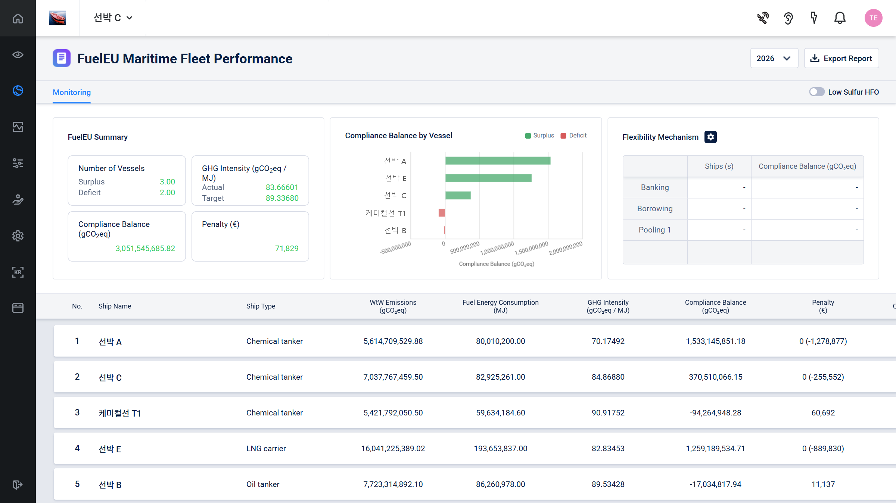
선박 A 선박 E 선박 C 선박 D 선박 B
FuelEU 잔액 흑자 3척 · 적자 2척
선대 GHG 집약도 (gCO₂e/MJ) 83.67 / 목표 89.34
적자 선박 벌금 합계 €71,829
시연 1 FuelEU 잔액 · 흑자·적자 선박과 풀링 후보
시연 2 CII · 선대 등급 분포와 선박별 달성값·요구값
데모 계정의 앱 화면(막대 색은 앱 원본) · 선박명은 가명 · 시연 약 3분
이 마감들을 선대 단위로 관리하는 웹 화면 예시입니다. 마지막 시연이고, 두 가지만 보겠습니다. FuelEU 잔액와 CII입니다.
[앱 전환] 선박별 FuelEU 잔액입니다. 초록 막대가 흑자, 빨간 막대가 적자 선박입니다. 이 예에서는 흑자가 세 척, 적자가 두 척이고, 적자 두 척의 벌금이 약 7만 2천 유로입니다. 1교시 실습에서 해 본 풀링, 누구를 묶을지를 이 표를 보고 정합니다. 엑셀이라면 선박별 잔액와 벌금을 한 시트에 모아 두시면 같은 판단을 할 수 있습니다.
[CII 선대 화면 열기] 선대 CII 등급 분포와 선박별 달성값, 요구값이 나옵니다. [슬라이드로 복귀] 이 숫자를 믿고 돈을 움직이려면 검증이 먼저 끝나 있어야 합니다.
[네트워크·로그인 문제 시: 앱을 열지 말고 이 캡처로 설명. 고객사·선박명이 보이지 않는 데모 계정만 사용]
[시간이 밀렸으면 앱을 열지 않고 캡처로 30초]
데이터 활용
부서별 활용 방법
부서 보는 자료 활용 주기 선박 보고 입력, 수정 요청 목록 입력 시 오류 확인 · 수정 요청에 증빙 첨부해 회신 매일 운항 항차별 배출·EU 범위, 속력–연료 항차별 탄소비용 산정 · 용선자 청구 근거 · EU 구간 속력 결정 항차마다 환경·안전품질 검증 건 목록, 규제별 보고서 증빙 대조 · 검증기관 제출 자료 내보내기 · 감면 증빙 관리 매주 · 연 1회 제출 기술 성능 곡선, 선체 오손 추정 선체 청소·프로펠러 연마 시기 결정 · 효과 확인 분기 재무 선대 ETS 비용, FuelEU 잔액 EUA 구매 수량·시기 · 풀링·뱅킹 결정 · 예산 월 · 분기 경영 선대 등급·비용 요약 D·E 예상 선박 대응 · 연료 전환 투자 판단 분기
엑셀로 관리하는 경우에도 같은 원칙 적용: 원천 데이터 1벌 · 증빙 연결 · 수정 이력 · 부서 공통 열람
여기부터는 마지막 단계인 개선, 데이터를 쓰는 쪽입니다. 검증된 데이터를 회사에서 누가 언제 보는지 부서별로 정리했습니다.
배는 매일 입력하면서 오류를 그 자리에서 확인하고, 수정 요청이 오면 증빙을 붙여 회신합니다. 운항팀은 항차가 끝날 때마다 탄소비용을 뽑아서 용선자 청구 근거로 씁니다. 환경이나 안전품질 부서는 매주 검증 건을 처리하고, 1년에 한 번 검증기관에 낼 자료를 내보냅니다.
기술팀은 분기마다 성능 곡선을 보고 선체 청소 시기를 정합니다. 재무는 배출권을 언제 몇 장 살지, FuelEU 잔액를 풀링할지 넘길지 정합니다. 경영진은 분기에 한 번 선대 등급과 비용 요약을 봅니다.
꼭 웹 화면이 있어야 하는 건 아닙니다. 엑셀로 하시더라도 아래 네 가지는 같습니다. 원천 데이터는 한 벌, 숫자마다 증빙이 연결돼 있을 것, 고친 이력이 남을 것, 여러 부서가 같은 파일을 볼 것. 엑셀이라면 시트를 어떻게 나누면 되는지 다음 장에 정리했습니다.
엑셀 관리 · 최소 구성
엑셀로 관리할 때의 최소 구성
시트 담는 것 관련 내용 이벤트 로그 출항·도착·투묘·양묘·접안·벙커링, UTC 시각, 기기별·유종별 소비, ROB 2교시 이벤트 타임라인 · 투묘 짝 오류 벙커 대장 BDN 수량·밀도·황·등급, PoS 번호, 첨부 파일명 3교시 BDN 중복 첨부 · PoS 없으면 감면 0 항구 마스터 EU·비EU·영국 NI/GB 구분, 인근 환적항 여부, 기준일 2교시 기항 판정 · EU 항구가 비EU로 저장된 사례 연간 연료 대조 기초 ROB + 수급 − 반출 − 소비 = 기말 ROB 3교시 연간 연료 대조 · 1/1 정오 로그북
월 점검 순서
이벤트 짝·순서
벙커 대장 ↔ BDN
EU 범위 판정
ROB 등식
증빙 파일
웹 화면이 없어도 같은 원칙으로 엑셀에서 관리할 수 있습니다. 시트는 네 장이면 됩니다. 이벤트 로그, 벙커 대장, 항구 마스터, 연간 연료 대조입니다. 표의 오른쪽 칸에는 오늘 강의에서 그 시트가 왜 필요한지 보여 준 장면을 적어 두었습니다.
[월 점검 순서] 한 달에 한 번은 오른쪽 순서로 보십시오. 이벤트의 짝과 순서, 벙커 대장과 BDN, EU 범위 판정, ROB 등식, 마지막으로 증빙 파일이 붙어 있는지입니다.
성능 분석
선박 성능의 정의: 날씨 보정 후 추진 연비
일일 연료 소비의 구성
평수 중 기본 저항
바람·파도
조류
오손·노후
선박 고유 성능 외부 환경 (보정 대상) 개선 대상
성능 분석에 필요한 데이터
속력(대수·대지), 축마력 또는 연료 소비, RPM
흘수(선수·선미), 트림, 화물 상태
풍향·풍속, 파고·파향, 조류
기준선: 시운전·모형시험 Speed–Power 곡선, 공장 시운전 연료소비율(SFOC)
이벤트: 선체 청소, 프로펠러 연마, 도장, 엔진 정비 일자
사례 동일 소비량의 날씨 보정 비교
두 날 모두 38 t/일 · 풍력계급 7 맞바람 vs 잔잔잔잔한 날이 더 나쁨 → 오손 의심
날씨 영향 보정: ISO 19030 · ISO 15016 방식
이제 마지막 단계, 개선입니다. 선박 성능부터 보겠습니다.
선박 성능은 날씨 영향을 제외한 추진 연비입니다. 위 막대처럼 어느 날 쓴 연료를 나눠 보면, 잔잔한 바다에서의 기본 저항이 대부분이고, 여기에 바람과 파도, 조류가 더해지고, 마지막으로 선체 오손이나 노후 때문에 더 드는 연료가 붙습니다. 날씨는 우리가 바꿀 수 없으니 빼고 봐야 하고, 오손과 노후가 개선 대상입니다.
오른쪽 사례를 보시면 두 날 모두 하루 38톤을 썼는데, 하루는 맞바람이 강했고 하루는 잔잔했습니다. 날씨를 빼고 보면 잔잔한 날의 성능이 오히려 나쁩니다. 바람도 없는데 38톤이면 선체가 더러워졌다는 신호입니다.
이런 분석을 하려면 속력, 흘수, 날씨, 기준 곡선이 다 필요합니다. 앞에서 검증한 보고 데이터가 맞아야 이 분석도 믿을 수 있습니다.
퀴즈 · 감속
1 kn 감속 시 연료 절감률
14 kn으로 다니던 배가 13 kn으로 1 kn 낮춥니다. 같은 거리를 갈 때 주기관 연료 절감률은?
A 약 7%
B 약 14%
C 약 20%
D 약 30%
B. 약 14%. 거리당 연료 ∝ 속력² · (13/14)² ≈ 0.86 (보조기관 포함 약 12%)
곡선을 보기 전에 한 문제 풀겠습니다. 14노트로 다니던 배가 13노트로 1노트만 줄입니다. 같은 거리를 갈 때 주기관 연료는 얼마나 줄까요. 7%, 14%, 20%, 30% 중에서 잠깐 생각해 보십시오.
[5초 · R키]
정답은 B, 약 14%입니다. 하루 연료는 속력의 세제곱에 비례하지만, 천천히 가면 항해시간이 늘어납니다. 그래서 같은 거리를 기준으로 하면 제곱에 비례합니다. 13 나누기 14를 제곱하면 0.86, 약 14% 감소입니다. A는 속력에 정비례한다고 본 경우이고, C는 세제곱을 그대로 쓴 경우입니다. 하루 기준으로는 맞는데, 배는 그만큼 더 오래 가야 합니다. 보조기관까지 넣으면 절감률은 조금 줄어듭니다. 뒤에 속력 실습에서는 주기관 기준 약 14%로 다시 나옵니다.
속력–연료 곡선
속력–연료 기준 곡선과 현재 곡선
속력 (kn)
하루 연료 소비 (t/일)
10 11 12 13 14 15 10 20 30 40 50 +15% ≈ +5.1 t/일
기준 (시운전·청소 직후)
현재 (날씨 보정 후 실측)
연료 소비 ∝ 속력³(같은 거리라면 연료 ∝ 속력²)
사례 14 kn 운항 선박 (예시)
1 소비 증가 38.9 − 33.8 t/일 = +5.1 t/일 (+15%)
2 연간 연료 5.1 t × 250일 = 1,275 t
3 연료비 1,275 t × $600 = 약 76만 달러
4 CO₂ 1,275 t × 3.151 = 약 4,000 t EU 관련 항차분은 ETS 비용 추가
수치는 설명용 예시
방금 퀴즈를 그림으로 보면 이렇습니다. 속력과 연료 소비의 관계 곡선입니다. 대략 연료 소비는 속력의 세제곱에 비례하고, 같은 거리를 간다면 제곱에 비례합니다.
남색 실선이 기준 곡선, 시운전이나 선체 청소 직후의 상태입니다. 빨간 점들이 날씨를 보정한 최근 실측값이고, 빨간 점선이 그 점들로 그린 현재 곡선입니다. 두 곡선 사이 간격이 추가로 쓰는 연료입니다.
예시로 14노트로 다니는 배라면 기준 하루 33.8톤이 지금은 38.9톤, 15% 더 쓰고 있습니다. 1년에 250일 항해하고 연료 가격을 톤당 600달러로 잡으면 연 76만 달러입니다. CO₂로는 약 4천 톤이라 EU 항차가 많으면 배출권 비용까지 늘어납니다.
성능 관리에서는 이 간격을 매달 추적합니다.
운항 최적화
웨더 라우팅과 적시 도착(JIT) · 설명용 예시(금액은 원화)
사례 투묘 대기와 적시 도착(JIT) · 설명용 예시
선박 A (브라질 → 중국) 선박 B (호주 → 중국) 평균 투묘 대기 14일 4일 하루 연료 50.4 t 36.9 t 연간 연료비× 50만 원 × 200일 50.4억 원 36.9억 원
연료비 차이 연 13.5억 원 (교재 사례 · 항로·선박이 다른 단순 비교라 전부 대기 때문은 아님)
A의 대기 14일 → 감속 항해로 전환 시 절감 여지
성능 다음은 운항 방법입니다. 두 가지가 있습니다.
하나는 웨더 라우팅입니다. 태풍을 정면으로 지나는 직선 항로보다 돌아가는 항로가 오히려 연료를 덜 씁니다. 일반적으로 2에서 4% 정도 절감을 봅니다.
더 큰 것은 속력입니다. 오른쪽은 교재에도 넣은 설명용 비교이고, 금액은 원화입니다. 브라질에서 중국 가는 선박 A는 평균 14일을 투묘 대기했고, 호주에서 중국 가는 선박 B는 4일을 기다렸습니다. 하루 연료가 50.4톤과 36.9톤이고, 톤당 50만 원으로 200일 운항하면 연간 13.5억 원 차이입니다. 항로와 선박이 다르니 이 차이가 전부 대기 때문은 아닙니다.
다만 선박 A는 열심히 달려가서 2주 동안 기다렸습니다. 어차피 기다릴 시간이라면 그 시간을 항해에 나눠 써서 천천히 가면 됩니다. 이것을 적시 도착, JIT라고 합니다. 거리당 연료는 속력의 제곱에 비례하니 조금만 늦춰도 효과가 큽니다. 물론 용선 계약 조건과 함께 봐야 합니다.
[시간이 밀렸으면 이 장은 건너뜀]
최적 속력
탄소비용과 최적 속력
속력 (kn)
금액 (연간, 상대값)
10 11 12 13 14 15 운임 수익
연료비
연료비 + 탄소비용
탄소비용 제외 최적
탄소비용 포함 최적
속력 하락
개념도 · 수익 − (연료비 + 탄소비용) 최대 지점
탄소비용이 붙는 경로
EU ETS: 2026년부터 100% 제출 FuelEU: GHG 집약도 초과분 벌금 UK ETS: 영국 간 항해·항내 활동 CII: 등급 하락 → 용선 시장 평가
사례 EU 비중과 최적 속력
EU 비중이 클수록 최적 속력 낮음항차별 EU 범위 데이터
속력을 돈으로 보면 이렇습니다. 빨리 가면 운임 수익은 늘지만 연료비는 세제곱으로 늘어납니다. 수익에서 비용을 뺀 값이 가장 커지는 속력이 최적 속력입니다.
여기에 탄소비용이 붙으면 비용 곡선이 청록색 선처럼 더 가팔라집니다. 그러면 최적 속력이 왼쪽으로, 즉 더 느린 쪽으로 이동합니다. 2026년부터 EU ETS가 100% 제출이고 FuelEU 벌금이 있으니, 같은 배라도 작년과 올해 최적 속력이 다를 수 있습니다.
오른쪽 사례를 보시면, 탄소비용은 항차가 EU 항차인지, 50%인지 100%인지에 따라 달라집니다. 그래서 2교시에 본 항차별 EU 범위 데이터가 속력 결정에 쓰입니다. 실습으로 직접 확인해 보겠습니다.
3교시 · 속력 최적화
속력 최적화 시뮬레이터
강사가 화면에서 조작합니다 · 바꿀 값을 불러 주십시오
제가 화면에서 조작하겠습니다. 바꿀 값을 불러 주십시오. 마지막 실습이고, 속력을 바꿔 봅니다.
왼쪽에 항차 거리, 기준 속력에서의 연료 소비, 연료 단가, 배출권 가격, 그리고 하루 시간 비용을 넣습니다. 시간 비용은 용선료나 기회비용이라고 보시면 됩니다. 기본값은 설명용 벌크선의 값입니다.
그래프의 회색 점선은 연료비와 시간 비용만 봤을 때의 총비용이고, 진한 곡선은 여기에 ETS 비용을 더한 것입니다. 연료 소비는 속력의 세제곱에 비례한다는 일반적인 관계를 썼습니다. 두 곡선의 바닥이 최적 속력입니다. 탄소비용이 붙으면 최적 속력이 12.6노트에서 11.8노트로 내려갑니다.
[지역계수 100% · EUA 120 입력] 지역계수를 100%로, EUA를 120유로로 올리면 최적 속력이 더 내려갑니다. 반대로 시간 비용을 크게 올리면 빨리 가는 쪽이 유리해집니다. 용선료가 비싸면 서두르는 게 이득입니다.
오른쪽 아래 "CII 분자 변화"는 같은 거리를 갈 때 주기관 연료가 얼마나 줄어드는지를 보여 줍니다. CII가 그만큼 좋아집니다. [슬라이더 13.0] 13노트에 놓으면 아까 퀴즈의 약 14%가 화면에는 −13.8%로 나옵니다.
이 계산이 의미가 있으려면 기준 속력에서의 소비량, 곧 속력–연료 곡선이 정확해야 합니다. 날씨 보정이 된, 검증된 데이터로 만든 곡선이어야 합니다. 실무에서는 시운전 곡선과 운항 데이터를 흘수별로 보간해서 이 곡선을 만듭니다.
3교시 정리
실무 점검 항목
증빙은 PDF·이미지로 , 해당 보고에 직접 첨부하도록 선박 지침 개정BDN 1장 = 벙커링 보고 1건 , 수정은 개정본으로1/1·7/1 정오 측심과 로그북 원본 확보거리는 대지거리로 통일 , 투묘·표류 구간 처리 규칙 명문화
EU 항구 체크·접안 체크·투묘·양묘 순서 월간 점검감면 증빙 대장 : EDN, PoS·LCV, COQ, 내빙등급 증서, 항차조정 일지연말 전 CII·연간 연료 독립 재계산 (소비 기준 = 탱크 기준)선체 청소·프로펠러 연마 일자 기록 , 속력–연료 추세 월간 리뷰
개선 효과 측정의 전제: 검증이 끝난 데이터
3교시를 정리하면서, 회사에 돌아가서 바로 하실 수 있는 여덟 가지를 드립니다. 자료에 그대로 들어 있습니다.
왼쪽 네 가지는 선박 지침입니다. 증빙은 PDF나 사진으로 해당 보고에 바로 붙일 것, BDN 한 장에 보고 한 건, 1월 1일과 7월 1일 정오 측심, 그리고 거리는 대지거리로 통일하는 것입니다.
오른쪽 네 가지는 육상 관리입니다. EU 항구와 접안 체크, 투묘·양묘 순서를 매달 점검하고, 감면 증빙을 대장으로 관리하고, 연말 전에 CII와 연간 연료를 독립적으로 재계산하고, 선체 청소 날짜를 기록해 성능 추세를 보시는 것입니다.
여덟 개가 많으면 하나만 하십시오. 1월 1일 정오 측심입니다. 40일도 안 남았습니다. 여기까지 3교시를 마치겠습니다.
[16:43까지 여기 도착]
전체 정리
단계별 사례 정리
입력 2교시
투묘 중복 입력 기기×유종 행렬 바이오연료 PoS 감면 이벤트 처리 2교시
레그 분할 EU 범위 판정 기항 판정 비EU 저장 오류 검증 3교시
거리 기준 혼용 마이너스 FOC BDN 중복 첨부 PoS 수량 대조 보고·정산 1·3교시
3/31·9/30 마감 5,849 EUA 제출 FuelEU 풀링 CII 등급 확정 개선 3교시
날씨 보정 곡선 오손 · 청소 적시 도착(JIT) ETS 최적 속력 케미컬 탱커 A MGO 1,903 t + 바이오디젤 599 t → 5,849 EUA → €468k · FuelEU 잔액 +1,495 tCO₂e
마무리 전에 처음에 보여 드린 다섯 단계를 다시 꺼내겠습니다. 오늘 본 사례들을 단계별로 넣어 보면 이렇습니다.
입력 단계에는 투묘 중복 입력, 기기별로 나눠 적는 행렬, 바이오연료 PoS가 있었습니다. 전부 배에서 생긴 일입니다. 처리 단계에는 레그 분할, EU 범위와 기항 판정, EU 항구가 비EU로 저장된 사례가 있었습니다. 육상에서 항차를 자르고 계산하는 과정에서 생긴 일입니다. 검증 단계에는 거리 기준이 섞이는 사례, 마이너스 FOC, BDN 중복 첨부가 있었습니다. 보고·정산은 마감 달력과 배출권 수량, 개선은 날씨 보정 곡선과 최적 속력이었습니다.
아래 줄은 오늘 계속 따라온 케미컬 탱커 A입니다. MGO 1,903톤과 바이오디젤 599톤이 배출권 5,849 EUA, 약 46만 8천 유로가 됐고, FuelEU 잔액은 바이오디젤 덕분에 약 1,495톤 흑자였습니다.
회사에 돌아가셔서 문제가 하나 생기면, 다섯 단계 중 어디서 틀어진 건지부터 짚어 보십시오. 단계를 알면 누구에게 물어야 할지가 정해집니다. 입력이면 배, 처리면 육상에서 계산을 맡은 담당자나 프로그램 공급사, 검증이면 검증 담당자, 정산이면 재무, 개선이면 운항팀입니다.
전체 정리
요약과 후속 조치
요약 내용 1. 원천 데이터 규제마다 경계는 다르고 입력은 같음 · 이벤트 기반 원천 데이터를 한 벌로 관리 2. 증빙 BDN · 로그북 · PoS · EDN · COQ · 확인하지 못한 항목은 정상으로 처리하지 않음 3. 개선 검증된 보고가 성능 분석 · CII · 속력 최적화의 기준선
부서 후속 조치 환경·안전품질 선박에 공문 1장: 1/1 정오 측심·로그북 사진 확보, BDN은 PDF로 해당 보고에 첨부 운항·기술 정오보고 양식에 EU 항구 체크 · 기기별 소비 칸 · PoS 칸이 있는지 확인 재무 올해 EU 항차별 배출량을 받아 2026년분 배출권 수량과 용선자 청구분 구분
2027년: ETS 100% 첫 정산 · FuelEU 2주기 · UK ETS 첫 보고 · 기준 데이터는 2026년 보고분
세 시간 동안 고생 많으셨습니다. 다 기억 못 하셔도 괜찮습니다. 저도 제 강의를 다 기억하지는 못합니다. 세 가지만 가져가 주십시오.
첫째, 원천은 하나이고 산출은 여럿입니다. IMO, EU, 영국, FuelEU가 같은 입력을 각자 다른 경계로 나눕니다. 1교시에 본 연료 1톤이 규제마다 다른 숫자가 됐습니다. 그러니 규제마다 따로 엑셀을 만들지 마시고, 배에서 이벤트 기반으로 원천 데이터를 정확히 남기는 데 투자하십시오.
둘째, 증빙이 없으면 숫자가 인정되지 않습니다. BDN, 로그북, PoS, EDN, COQ가 숫자를 받쳐 줘야 검증을 통과하고 감면도 받습니다. 확인하지 못한 항목은 정상으로 보지 않는다는 원칙을 회사 내부 절차에도 적어 두시기를 권합니다.
셋째, 개선 효과는 검증된 데이터로만 잴 수 있습니다. 보고를 비용으로만 보시면 아깝습니다. 그 데이터가 성능 분석과 속력 최적화의 기준선이 되고, 배출권과 벌금을 줄이는 근거가 됩니다.
오늘 본 사례의 손실은 대부분 데이터 한 칸 차이에서 나왔습니다.
[아래 표] 내일 출근해서 할 일 세 가지만 드립니다. 하나, 환경·안전품질은 선박에 공문 한 장을 보내십시오. 1월 1일 정오 측심과 로그북 사진, BDN은 PDF로 해당 보고에 첨부. 둘, 운항과 기술은 우리 정오보고 양식에 EU 항구 체크, 기기별 소비 칸, PoS 칸이 있는지 확인하십시오. 셋, 재무는 올해 EU 항차별 배출량을 받아 2026년분 배출권 수량과 용선자 청구분을 나눠 보십시오.
마지막으로 일정 하나만 말씀드립니다. 2027년은 ETS 100% 첫 정산, FuelEU 두 번째 주기, UK ETS 첫 보고가 겹치는 해입니다. 그 숫자는 지금 배에서 입력되고 있는 2026년 데이터로 정해집니다.
인용 규정 · 자료
참고 자료
IMO
MARPOL Annex VI Reg.26–28 (MEPC.328(76))
MEPC.385(81) DCS 세분화 · MEPC.400(83) CII Z 2027–2030
MEPC.352(78)·412(84) G1 산정 · MEPC.353(78) G2 기준선 · MEPC.354(78) G4 등급 경계
MEPC.355(78) G5 보정계수·항차조정
MEPC.395(82)·401(83)·413(84) SEEMP 지침 (항해/비항해·거리·N₂)
MEPC.364(79) CF 표 · MEPC.1/Circ.905·Rev.1 바이오연료 CF
Circular Letter No.5005 NZF 초안 · MEPC 84/16 회의 보고서
DNV · LR, MEPC 84 결과 요약 (2026.5) · ABS, Enhanced IMO DCS 안내
EU
Reg. (EU) 2015/757 MRV (2023/957 개정) · Del. Reg. (EU) 2023/2776
Directive 2003/87/EC ETS
Reg. (EU) 2023/1805 FuelEU Maritime (Annex I·II·IV)
Directive (EU) 2018/2001 RED (GWP·지속가능성 기준)
Impl. Reg. (EU) 2026/2562·2563 인근 환적항 목록 (2026.12.10~)
EC 해운 ETS FAQ · FuelEU Q&A · EMSA MRV/ETS 안내
COM(2026) 616 / 620 통합 개정 제안 (미채택)
Skuld · LR, FuelEU 2025 보고연도 일정
UK · 기타
S.I. 2026/392 (UK ETS 해운 확대) · GHG ETS Order 2020 (S.I. 2020/1265)
S.I. 2026/245 (UK MRV 폐지)
GOV.UK, UK ETS for maritime: how to comply (2026.6.22)
GOV.UK, UK-EU ETS linking agreement explainer (2026.11.20, 법문 미공개)
GOV.UK, UK ETS 해운 확대 정부 답변
West P&I, 중국 선박 에너지소비 데이터 수집 규정
전체 내용 2026.11.22 기준 · IMO NZF 일정은 변경 가능 · 영국–EU 연계는 설명서 기준(법문 미공개)
오늘 인용한 규정과 자료 목록입니다. 자료 파일에 그대로 들어 있으니, 잠이 안 오는 밤에 찾아보시면 됩니다.
IMO Net-Zero Framework는 바로 이번 주에 회기간 회의가 열리고 있어서, 오늘 말씀드린 일정이 다음 달이면 달라질 수 있습니다. EU도 지난 7월에 MRV, ETS, FuelEU를 하나로 묶는 개정안을 냈는데 아직 제안 단계입니다. 확정된 규정과 아직 제안인 규정은 나눠서 보십시오.
[시간이 밀렸으면 이 장은 건너뜀]
Q & A
질의응답
1. 원천 데이터는 한 벌, 규제별 산출은 여럿
2. 증빙이 없는 숫자는 인정되지 않음
3. 개선 효과는 검증된 데이터로만 측정
1월 1일 정오 측심 · 로그북 사진 확보
감사합니다 · 이상봉 · (주)랩오투원
이제 질문을 받겠습니다. 회사 상황에 맞는 구체적인 질문도 좋습니다. "우리 배는 용선 보고 양식만 쓰는데 EU 데이터는 어떻게 하나", "바이오연료 PoS를 어떻게 관리하나" 같은 질문도 괜찮습니다.
[질문이 없으면] 그럼 제가 하나 여쭙겠습니다. 여러분 회사 배의 정오보고에 EU 항구 체크가 지금 제대로 들어가 있는지, 내일 아침에 한 번 확인해 보십시오.
[Q&A가 끝나면] 세 시간 동안 고맙습니다. 개별 질문은 끝나고 앞에서 받겠습니다.
강사 소개
이상봉 · (주)랩오투원 대표
현장
2005–2010 한진해운 기관사(1등 기관사)
2010–2015 NWM R&D 디렉터
2015–현재 (주)랩오투원 대표
선박 보고·배출량 검증 서비스 운영
표준·연구
ISO TC8/SC6 전문위원 (2022~)
ISO 15016 시운전 해석 프로그램 PM (2023)
자율운항선박 통합 에너지관리시스템 PM (2021–2026)
자율운항선박 데이터 교환 코드 체계 PM (2022–2023)
선박 보고 입력 · 배출량 계산 · 검증 서비스 운영 · 선대 약 400척 (2026.8 기준)
제 소개는 짧게 하겠습니다. 저는 한진해운에서 기관사로 배를 탔습니다. 매일 정오 직전에 측심(사운딩)하고 노트에 연료 소비량을 적던 사람이 저였습니다. 그때 저도 숫자를 '대충 맞게' 적은 날이 있었습니다. 오늘 그 빚을 갚으러 왔습니다.
지금은 그 숫자를 받는 쪽에 있습니다. 선박이 보고를 입력하고, 육상에서 배출량을 계산하고, 그 데이터를 증빙과 맞춰 검증하는 서비스를 운영하면서 약 400척 규모의 선대 데이터를 매일 봅니다.
오늘 사례는 대부분 이 400척을 검증하면서 실제로 걸린 것들입니다. 다만 오늘은 특정 프로그램 사용법이 아니라, 어떤 도구를 쓰시든 선사가 무엇을 모으고 확인해야 하는지를 말씀드리겠습니다.
1교시 · 14:00–14:50
규제 지형과
IMO · EU · UK · FuelEU · Net-Zero Framework
1교시 본론입니다. 1교시에는 각 규제가 어떤 데이터를, 어떤 경계로, 언제까지 요구하는지 정리합니다.
규제마다 보고서를 따로 만들면 숫자가 어긋납니다. 엑셀이 규제 수만큼 생기고 담당자도 나뉘고, 파일 버전은 그보다 훨씬 많아집니다. 그래서 규제별 요구를 데이터 항목으로 바꿔서 한 번에 보려고 합니다.
규제의 두 축
규제 분류: 총량·집약도, 설계·운항
총량 (tCO₂e) 집약도 (gCO₂/(DWT·nm), gCO₂e/MJ) 설계 (제원) 운항 (실적) 해당 규제 없음
EU MRV · EU ETS UK ETS IMO DCS (보고) 연간 배출량 → 배출권 제출
IMO CII (A~E 등급) FuelEU (GHG 집약도) IMO NZF GFI (예정) 배출 ÷ 수송작업 또는 에너지
EEDI (신조선) EEXI (현존선) 시운전·제원으로 1회 인증 EPL 출력 제한
오늘 범위: 운항 규제 설계 규제: 1회 인증
운항 규제: 매년 , 정오보고 누적 → 등급·비용
총량 · 집약도 총량: 연간 배출량
집약도: 배출 ÷ 수송작업(CII) 또는 에너지(FuelEU)
교재 앞부분을 한 장으로 줄였습니다. 선박 환경규제는 두 축으로 나뉩니다. 총량을 보느냐 집약도를 보느냐, 설계 제원으로 보느냐 실제 운항으로 보느냐입니다.
왼쪽 아래 EEDI와 EEXI는 설계 규제입니다. 시운전 자료로 한 번 인증받으면 끝나니까 입학시험에 가깝습니다. 오늘 다룰 건 오른쪽 절반, 해마다 치르는 기말고사 쪽입니다. 위는 배출 톤수 자체를 세는 EU MRV, EU ETS, UK ETS이고, 아래는 비율을 보는 CII, FuelEU, 그리고 IMO가 준비 중인 GFI입니다.
집약도 규제는 분모도 맞아야 합니다. CII는 거리와 재화중량, FuelEU는 에너지가 분모입니다. 연료를 정확히 적어도 거리를 틀리면 등급이 바뀝니다. 거리가 5% 틀리면 CII도 5% 틀립니다. 3교시에 다시 봅니다.
MRV 메커니즘
MRV 절차: 모니터링 → 보고 → 검증 → 정산
단계 누가 무엇을 M onitoring선박 · 선사 모니터링 계획(IMO SEEMP Part II, EU 모니터링 계획)대로 매일 기록 R eporting선사 연간 보고서 제출 (EU는 항차 단위 모니터링) V erification기국·선급(RO)·검증기관 증빙(BDN·로그북)과 대조 후 적합확인서(SoC)·적합증서(DoC) 발급 제재·정산 IMO·EU·UK 등급, 배출권 제출, 벌금, 입항 제한
검증 기준: 보고값과 증빙의 일치
규제는 여러 개지만 돌아가는 방식은 같습니다. 모니터링, 보고, 검증, 그리고 제재나 정산입니다. 영어 앞 글자를 따서 MRV라고 부릅니다.
선사는 미리 승인이나 평가를 받은 모니터링 계획대로 매일 기록합니다. IMO는 SEEMP Part II, EU는 모니터링 계획입니다. EU MRV 계획은 당국이 승인하고, FuelEU 계획은 검증기관이 평가합니다. 연말에 모아 보고하면 검증기관이 BDN, 로그북과 맞춰 보고 적합확인서나 적합증서를 내줍니다. 그다음에 등급이 매겨지거나, 배출권을 제출하거나, 벌금을 냅니다.
아래 문장을 보십시오. 검증기관은 연료를 아꼈는지는 보지 않고, 보고한 숫자가 증빙과 같은지만 봅니다. 3교시 검증이 이 기준으로 진행됩니다.
타임라인
규제 도입 연표 2018~2050
2018
EU MRV
모니터링 개시
2019
IMO DCS
보고 개시
2023
CII · EEXI
등급 시작
CII Z = 5%
2024
EU ETS
40% 제출
MRV CH₄·N₂O
2025
FuelEU
−2% 시작
ETS 70%
2026
ETS 100%
+ CH₄·N₂O
DCS 세분화
UK ETS 7/1
CII Z = 11%
2027
ETS 해양작업선
EU · UK 모두 2027.1.1~
CII Z = 13.625%
2028
IMO NZF
원안 개시 시점
(지연 가능성)
2030
FuelEU −6%
육상전원(OPS) 의무
CII Z = 21.5%
2050년경
넷제로
IMO 2023 전략
FuelEU −80%
2026년 · ETS 100% 제출 · CH₄·N₂O 포함 · UK ETS 시행 · DCS 양식에 거리 항해/비항해 구분 행 추가 (MEPC.413(84), 적용 연도는 기국·선급(RO) 확인)
시간 순서로 보겠습니다. 2018년 EU MRV, 2019년 IMO DCS입니다. 처음 몇 년은 보고만 했습니다. 2023년 CII로 등급이, 2024년 EU ETS로 비용이 붙었습니다. 2025년 FuelEU는 연료의 질까지 봅니다.
청록색으로 표시한 곳이 올해 2026년입니다. ETS가 40%, 70%를 거쳐 100%가 되었고 메탄과 아산화질소까지 들어갔습니다. IMO DCS는 소비기기별 세분화가 적용되고, 5월에는 거리를 항해와 비항해로 나눠 적는 칸이 양식에 추가됐습니다. 이 칸을 언제 데이터부터 쓰는지는 결의문에 없어서 기국이나 선급에 확인하셔야 합니다. 7월에는 UK ETS가 시작됐습니다. CII 감축률도 11%가 됐습니다.
올해 데이터부터 ETS 100%가 적용됩니다. 올해 정오보고에 틀린 숫자가 있다면 지금 고쳐야 합니다. 마감 달력은 3교시 보고·정산에서 보겠습니다.
IMO DCS · MEPC.385(81)
IMO DCS: 2026년 데이터부터 기기별·항해/비항해별 보고
적용 시점은 기국 안내 기준 · 2025.8.1 이후 인도 신조선은 인도일부터
요구 데이터 (세분화)
유종별 × 소비기기별 소비량 (주기관·발전기·보일러·기타)
비항해(Not under way) 중 소비량육상전원(OPS) kWh + 공급자 증빙화물량·수송작업 (컨테이너는 TEU 와 중량)
측정방법: 유량계 / 탱크 측심 / BDN
거리도 항해/비항해 구분 행 추가 (MEPC.413(84), 적용 연도는 기국·RO 확인)
항해 = FAOP(항해 개시) ~ EOSP(항해 종료), 운하 통항은 비항해 (MEPC.401(83))
예: 하루 32.5 t의 기기별 분할 기존: ME 32.5 t (한 칸) ME 26.0 GE 4.2 회색 = 보일러 1.8 · 연회색 = 기타 0.5
사례 기기 구분 없이 ME에 합산해 온 선박
연간 총량 = BDN → 기존 DCS 검증 통과
2026년 세분화 요건: 기기별 분리 불가
검증 범위: 총량 + 기기별 분할 방식
이제 규제를 하나씩 데이터로 읽겠습니다. 먼저 IMO DCS입니다. 2025년 8월 발효된 MEPC 385(81) 개정으로, 대부분의 기국에서 올해 1월 데이터부터 세분화가 적용됩니다. 작년 8월 이후 인도된 신조선은 인도일부터입니다.
가장 큰 변화는 소비기기별 구분입니다. 주기관, 발전기, 보일러, 기타 기기로 나눠 유종별로 보고합니다. 접안이나 투묘처럼 항해 중이 아닌 시간의 소비량도 따로 냅니다. 육상전원을 받았으면 킬로와트시와 증빙, 컨테이너선은 TEU까지 냅니다. 거리도 항해와 비항해로 나눠 적는 칸이 올해 5월 MEPC 84에서 양식에 추가됐습니다. 언제 데이터부터인지는 결의문에 날짜가 없어서 기국이나 선급에 확인하셔야 합니다. CII 분모는 총거리 그대로입니다.
아직 정오보고에서 주기관 칸 하나에 다 몰아 적는 배가 있을 겁니다. 예전에는 연간 총량이 BDN과 맞으니 문제가 없었습니다. 이제는 발전기가 몇 톤 썼느냐고 물으면 답할 데이터가 없습니다. 양식 자체를 바꿔야 하는 문제라, 연초에 정비하지 않으면 1년치를 전부 추정해야 합니다. 2교시에 사례로 다시 봅니다.
IMO CII
IMO CII: 산식과 연도별 감축률(Z)
연도 2023 2024 2025 2026 2027 2028 2029 2030 감축률 Z 5% 7% 9% 11% 13.625% 16.25% 18.875% 21.5%
Attained CII = Σ (FCj × CF,j ) / (Capacity × Dt )
Required CII = (1 − Z/100) × a · Capacity−c
Capacity = DWT (자동차운반선·크루즈·RoRo·RoPax는 GT). Z는 2030년까지 확정(MEPC.400(83)). 2031년 이후는 CII 2단계 검토에서 결정.
요구 데이터 : DCS 데이터 전부 + 제원(DWT/GT, 선종, 내빙등급) + 보정 근거(리퍼·STS·항차조정)
등급 = Attained ÷ Required (벌크선 예)
A
B
C
D
E
< 0.86 0.86 – 0.94 0.94 – 1.06 1.06 – 1.18 > 1.18 Required = 1.00
D 3년 연속 또는 E 1회 → 시정조치계획 · SEEMP 개정·검증
CII 공식 자체는 단순합니다. 분자는 연료에 배출계수를 곱한 CO₂, 분모는 재화중량 곱하기 총 운항거리, 즉 수송한 일의 양입니다. 요구값은 선종별 기준선에서 매년 Z만큼 깎습니다. 위 표처럼 올해 Z가 11%, 내년 약 13.6%, 2030년 21.5%입니다. 기준이 매년 2.6%포인트쯤 올라갑니다.
등급은 달성값을 요구값으로 나눈 비율로 정합니다. 오른쪽 벌크선 경계값 예시로 1.06을 넘으면 D, 1.18을 넘으면 E입니다. D를 3년 연속 받거나 E를 한 번 받으면 시정조치계획을 세워 SEEMP를 고치고 다시 검증받아야 합니다.
데이터 쪽에서 중요한 건 분모입니다. 거리 1% 차이가 그대로 CII 1% 차이가 됩니다. 등급 경계 근처에 있는 배라면 거리 하나로 C와 D가 갈립니다.
EU MRV · Reg. 2015/757 (2023/957 개정)
EU MRV: 항차 단위 모니터링 · 연간 보고
적용 범위
5,000GT 이상 화물·여객선
2025년부터 400~5,000GT 일반화물선·400GT 이상 해양작업선 (MRV만)
기항의 정의
화물·여객 적·양하를 위한 정박
벙커링·선원교대·수리만 한 정박은 제외
해양작업선의 선원교대는 기항
요구 데이터
항차별: 출·입항 항구와 시각, 거리, 항해시간
연료별 소비량 → CO₂·CH₄·N₂O (2024~), LNG 메탄 슬립
화물량·수송작업
연간: EU 내 / EU 입항 / EU 출항 / EU 항내 구분
회사 단위 집계 보고 (THETIS-MRV, EU 보고 시스템)
EU MRV입니다. IMO가 1년치를 통으로 본다면 EU MRV는 항차 단위로 나눠서 봅니다. 2025년부터는 총톤수 400에서 5천 사이 일반화물선과 해양작업선도 들어왔습니다. 중소형선 선사 중에는 올해가 첫 경험인 곳도 많습니다.
요구 데이터는 항차별 출입항 정보, 거리, 시간, 연료별 소비량, 그리고 CO₂, 메탄, 아산화질소입니다. LNG 엔진은 엔진 종류별 기본값으로 메탄 슬립을 더합니다. 연간으로는 EU 내 항해, 입항, 출항, 항내 체류를 나누고 회사 단위 합계도 냅니다.
가장 중요한 단어는 왼쪽 아래 '기항'입니다. EU MRV에서 항차는 기항과 기항 사이이고, 기항은 화물이나 여객을 싣고 내리기 위한 정박만 인정됩니다. 벙커링만 한 항구, 선원만 바꾼 항구는 기항이 아닙니다. 이 정의에 따라 50%짜리 항차가 100%도 되고 0%도 됩니다. 판정 방법은 2교시에 사례로 보겠습니다.
규제 간 경계 비교
규제 간 경계 차이 7가지
경계 IMO DCS·CII EU MRV·ETS FuelEU UK ETS 1 집계 단위 연간 · 선박 항차 · 항구 · 연간 + 회사 연간 에너지 연간 · 회사 EMP 2 지리 범위 전 세계 EU 관련 항차 100/50% + 항내 ETS와 동일 영국 국내항해 + 항내 활동 3 항해 경계 FAOP ~ EOSP (항해/비항해) 기항 간 (계류 해제 ~ 계류) MRV와 동일 영국 기항 간 (마지막 선석 ~ 첫 선석) 4 기항 정의 – 화물·여객 작업 / 인근 환적항(컨테이너선) 불인정 동일 화물 적·양하 또는 여객·선원 승하선 (선원교대만 한 정박은 제외, 해양작업선은 포함) / UN/LOCODE 있는 해상설비는 항구 5 배출 지표 CO₂ = 연료 × CF (TtW) CO₂e (TtW) + 슬립 WtW gCO₂e/MJ CO₂e (TtW) 6 GWP (CO₂ 중심) AR5: CH₄ 28 · N₂O 265 AR4: 25 · 298 28 · 265 7 바이오연료 CF (2027~ 질량가중) 지속가능 시 CO₂ 0 PoS 없으면 최불리 화석 경로값 적격연료 감축 청구 시 CO₂ 0
규제별 개별 집계는 서로 어긋남 → 이벤트 원천 데이터 1벌 + 경계는 계산 단계에서 적용
같은 원천 데이터가 규제마다 일곱 군데에서 다르게 나뉩니다.
첫째, 집계 단위입니다. IMO는 연간 선박 단위, EU는 항차와 항구, 그리고 회사 단위까지 봅니다. 둘째, 지리 범위입니다. 셋째, 항해의 경계입니다. IMO는 FAOP부터 EOSP까지를 항해로 보고, EU는 기항과 기항 사이를 봅니다. 그래서 투묘 대기 중 연료가 IMO에서는 비항해, EU에서는 항차 안에 들어갑니다. 다만 EU 보고 항목 가운데 항해시간은 투묘 시간을 빼고 셉니다. 영국도 기항지의 마지막 선석에서 다음 기항지의 첫 선석까지를 항해로 봅니다. 넷째, 기항 정의. 화물·여객 작업을 한 정박만 기항입니다. 영국 법문은 선원 승하선도 기항 요건에 넣지만, 선원교대만 하려고 들른 정박은 EU처럼 기항에서 뺍니다. 해양작업선만 예외입니다. 그리고 유엔 항구코드가 있는 해상설비를 항구로 칩니다.
다섯째부터는 계산 방식입니다. IMO는 연소 단계 CO₂, FuelEU는 전주기 집약도입니다. 여섯째, 메탄 계수가 ETS는 28, FuelEU는 25입니다. 일곱째, 바이오연료 인정 방식이 규제마다 다릅니다. 영국은 EU처럼 자동으로 0이 되는 게 아니라 적격연료 감축 청구를 따로 해야 CO₂가 0이 됩니다.
이 일곱 가지 경계를 사람이 규제별 엑셀로 매번 나누면 어긋납니다. 원천은 이벤트 단위로 한 벌만 남기고, 경계는 계산할 때 규칙으로 적용하는 편이 안전합니다. 엑셀을 쓰셔도 같습니다.
규제별 데이터 체인
규제별 데이터 처리 흐름
규제 입력선박 처리육상 담당 · 계산 도구 검증담당 · 검증기관 보고·정산마감 개선수단 IMO DCS집약도 대지거리 · 기기×유종 소비 1/1 정오 연도 경계 거리 재계산 3/31 제출 → 5월 말 SoC · 등급감속 · 오손 관리 EU MRV총량 · 가격 출입항 · 접안/투묘 시각 레그 분할 · 기항 판정 기항 판정 재확인 3/31 THETIS → 9/30 EUA 제출EU 항차 속력 FuelEU연료의 질 BDN 유종 · LCV WtW GHG 집약도 PoS 대조(예시 ±2%) 1/31 검증기관 → 4/30 풀링 → 6/30 DoC풀링 · 뱅킹 UK ETS2026.7~ · 2028 EU 연계 영국 항구 출입항 보고 영국 국내 / 국제 구분 영국 항차 집계 대조 3/31 AER → 배출권 첫 제출 2028.4.30 (현행법)EU ETS와 같은 수단
지금까지 본 규제를 처음에 본 다섯 단계에 맞춰 정리한 표입니다. 사진 찍으실 분은 지금 찍으십시오.
[CII 줄을 따라 왼쪽에서 오른쪽으로] CII를 예로 들면, 배는 거리와 기기별 연료, 그리고 보정받을 게 있으면 STS나 항차조정 증빙을 넣습니다. 육상은 1월 1일 정오로 연도를 자르고 항해와 비항해를 나눠 Attained를 계산합니다. 검증에서는 거리를 다시 계산해 보고 보정 근거를 맞춰 봅니다. 3월 말 제출, 5월 말 적합확인서와 등급입니다. D가 3년 이어지거나 E가 나오면 시정조치계획을 냅니다.
[EU ETS 줄] EU ETS는 입력이 출입항 시각, 처리가 기항 판정, 검증이 기항 재확인입니다. 줄 전체가 위치 데이터입니다.
[FuelEU 줄] FuelEU는 줄 전체가 연료 서류입니다. BDN, PoS, LCV입니다. 표의 ±2%는 예시 기준이고 규정값이 아닙니다.
영국 줄은 앞에서 본 그대로입니다. 데이터에서는 영국 항구를 따로 골라내는 것이 출발입니다.
시연 · 1교시 · 웹 화면 예시
웹 화면 예시: 남은 기간 플랜별 비용 비교
항구 A → 항구 B
플랜 A (화면 왼쪽 위) €79,210 감속 10% + B30 100%
남은 기간 연료별 비용 (화면 아래) €243,968 현재 혼합 기준 · HFO −€6,101 · VLSFO −€3,869 · B30 100% −€2,597
EUA 가격 입력 칸 (화면 오른쪽 위) €70 화면 설정값 €70 · 본문 예시는 €80
시연 순서 · 3분
1 선박 1척 선택
2 감속 + 연료 전환 플랜 A~D → 비용(€)
3 남은 기간 연료별 비용 비교
4 EUA 가격 입력 → 결과 즉시 변경
먼저 웹 화면으로 관리하는 예시를 3분만 보겠습니다. [앱 전환] 남은 기간 비용을 미리 계산해 보는 화면입니다. 올해 실제 운항이 위에 깔려 있고, 남은 기간을 어떻게 갈지 플랜을 고르면 CII 등급과 비용이 같이 나옵니다. 아래쪽은 남은 기간 연료를 바꾸면 얼마인지, HFO부터 B30까지 비교한 것입니다. [EUA 칸 바꿔 보기] 배출권 가격 하나를 바꾸면 순서가 바뀝니다. [복귀] 도구는 무엇이든 괜찮습니다. 운항과 재무가 남은 기간 속력과 연료를 정하려면 올해 실적 연료, 남은 기간 계획, 배출권 가격 가정이 한 화면이나 엑셀 한 시트에 같이 있어야 합니다. 들어가는 값은 정오보고 한 줄입니다. 같은 계산을 이제 계산기로 직접 해 보겠습니다.
[네트워크·로그인 문제 시: 앱을 열지 말고 이 캡처로 설명. 고객사·선박명이 보이지 않는 데모 계정만 사용]
[캡처로 설명할 때] 오른쪽 숫자 세 개만 보시면 됩니다. 이 배는 감속 10%에 B30을 쓰는 플랜 A가 7만 9,210유로로 나왔습니다. 아래는 남은 기간 연료를 바꿨을 때의 비용입니다. 지금 쓰는 혼합이 24만 3,968유로이고, 연료별로 몇천 유로씩 차이가 납니다. 이 화면의 배출권 가격은 70유로로 설정돼 있습니다. 오늘 본문 예시는 80유로이니 숫자를 섞어 보시면 안 됩니다. 항구 이름은 가렸습니다.
규제 지도
선박 한 척에 적용되는 규제 관할
IMO · 전 세계 (5,000GT 이상 국제항해)
DCS·CII (5,000GT 이상) · EEXI·SEEMP (400GT 이상) · NZF(협상 중)
EU / EEA
MRV · ETS · FuelEU
EU 항내 체류 100%
EU ↔ EU 항차 100%
EU ↔ 비EU 항차 50%
비EU ↔ 비EU 항차 0% 지역계수 (ETS·FuelEU 공통)
UK UK ETS (2026.7~) 국내항해 · 항내 활동 (접안 · 항내 이동)
중국 MSA 에너지소비 보고 국적선 · 기항선
사례 유럽 정기 기항 컨테이너선 1척
IMO DCS·CII: 1년 전체
EU MRV·ETS·FuelEU: EU 관련 항차·항내만
UK ETS: 영국 국내항해·항내 활동 만
중국 기항 시: MSA 별도 보고
항해일지 1권 → 집계 4개 이상
중국 MSA 제도의 2026년 개정 여부: 미확정
배 한 척이 받는 규제를 지도로 그리면 네 겹입니다. 가장 바깥은 IMO입니다. 5천 톤 이상 국제항해 선박이면 어디를 다니든 1년 전체 데이터가 대상입니다.
그 안에 EU와 EEA가 있습니다. EU 항구 사이 항해와 EU 항내 체류는 100%, EU와 비EU를 잇는 항해는 50%입니다. 영국은 브렉시트 이후 따로 갑니다. 올해 7월부터 UK ETS가 해운에 들어왔는데, 우선 영국 국내항해와 영국 항내 활동만 봅니다. 중국은 자국 해사국에 에너지 소비를 따로 보고하게 합니다.
오른쪽 사례처럼 유럽 정기선 한 척이면 같은 항해일지에서 집계가 적어도 네 개 나옵니다. 같은 원천 데이터를 규제별로 네 번 나눠 집계하는 것입니다.
사례 · CII 계산
LNG선 A: 정오보고 1건의 CII 산정
사례 LNG선 A · 항해 중 정오보고 1건 (실데이터, 익명)
입력 항목 값 항해거리 / 시간 427 nm / 24 h 주기관 1·2 연료 BOG + LSFO 발전기 연료 BOG + ULSMGO 자연 증발가스(BOG) 88.31 t
→ 당일 CII: Attained 6.132 vs Required 6.50 → 비율 0.94 → C 등급
A
B
C
D
E
0.78 0.92 1.10 1.37 0.94 (당일)
LNG선 등급 경계 · 100,000 DWT 미만: 0.78·0.92·1.10·1.37 / 100,000 DWT 이상: 0.89·0.98·1.06·1.13
LNG선의 데이터 포인트 CII에서는 LNG + BOG 합산 (CF 2.750) 기준선 계산 시 Capacity 하한 적용(소형 LNG선) 화물 N₂ 차감은 COQ(화물 품질 증명서) 조성 데이터가 있어야 가능 일별 CII ≠ 연간 CII
실제 LNG선 한 척의 정오보고입니다. 24시간에 427해리를 갔고, 주기관 두 대는 증발가스와 저유황유, 발전기는 증발가스와 초저유황 경유를 썼습니다. 그날 자연 증발가스가 88톤입니다.
이 한 장으로 당일 CII를 계산하면 달성값 6.132, 요구값 6.50, 비율 0.94로 C등급입니다. 아래 등급 경계는 재화중량 10만 톤 미만 LNG선 기준이고, 10만 톤 이상이면 경계가 더 촘촘합니다. LNG선은 LNG와 증발가스를 합산하고, 소형선은 기준선을 계산할 때 용량 하한이 적용되고, 화물 속 질소를 차감하려면 화물 품질 증명서, COQ의 조성 데이터가 있어야 합니다.
이 C등급 하루치를 365일 모으면 연간 등급이 될 것 같지만, 그렇게 계산하면 틀립니다. 일별 값에는 보정계수가 없고 하루치 거리만 분모로 씁니다. 연간 값에는 접안과 투묘 중 연료가 다 들어가고 보정도 적용됩니다. 제가 검증하면서도 일별과 연간을 직접 비교하는 점검을 써 봤다가 그만뒀습니다. 연간 예측은 누적 데이터로 따로 하셔야 합니다.
1교시 · CII 시뮬레이터
연도별 CII 등급 변화
케이프 벌크 8천 TEU 컨테이너 LNG선 MR 탱커
CO₂ 배출 (보정 후) -
Attained CII -
Required CII -
비율 Attained / Required -
제가 화면에서 조작하겠습니다. 바꿀 값을 불러 주십시오. CII 시뮬레이터입니다. 운항은 그대로 두고 연도만 바꾸면 등급이 어떻게 되는지 보겠습니다. '케이프 벌크'를 누르면 18만 톤급 벌크선이 연간 7만 해리를 HFO 9천 톤과 MGO 300톤으로 운항하는 예시가 들어갑니다.
이 배가 운항을 하나도 안 바꾸면 몇 년에 D로 떨어질지 오른쪽 아래 표를 보십시오. 감축률 Z가 2023년 5%에서 2030년 21.5%까지 매년 올라가서, 같은 배가 2027년까지 C를 지키다가 2028년부터 D입니다. 배는 그대로인데 등급이 떨어집니다. 그래서 CII는 몇 년 뒤 등급까지 미리 봐야 합니다.
속력 슬라이더를 왼쪽으로 10% 내려 보겠습니다. 같은 거리를 가는 연료는 대략 속력의 제곱에 비례하니 CO₂가 약 19% 줄고 등급이 올라갑니다. 3교시 성능 분석에 나오는 관계입니다.
마지막으로 '보정 차감 CO₂'에 숫자를 넣어 보겠습니다. 리퍼 전력이나 항차조정 같은 보정을 증빙과 함께 인정받으면 분자가 줄어서, 등급 경계에 있는 배는 등급이 바뀔 수 있습니다. 다만 리퍼 전력이나 화물 가열 같은 FC 보정은 쓴 연료가 다 빠지는 게 아닙니다. 올해 2026년 기준으로 0.66배만 빠지니, 이 칸에는 그 비율을 곱한 값을 넣어야 합니다. 증빙이 없으면 이 칸은 0입니다. 컨테이너선 예시는 처음부터 D 근처에 있으니 한번 눌러 보십시오. 계수는 MEPC 지침 값이고, 실제 등급은 기국과 검증기관의 연간 확정치를 따릅니다.
규제별 입력 항목
규제별 선박 입력 항목
데이터 항목 (선박·육상 입력) DCS CII EU MRV EU ETS FuelEU UK ETS NZF* 연료 소비 (유종 × 기기) ● ● ● ● ● ● ● 거리 (대지, 항해/비항해) ● ● ● ○ ○ ○ ○ 시간 (항해·정박·투묘) ● ◐ ● ◐ ◐ ◐ ○ 화물량 · 수송작업 · TEU ● ● ● ○ ○ ○ ○ 항구 · EU/UK 여부 · 기항(화물작업) ○ ○ ● ● ● ● ○ CH₄·N₂O · 엔진유형(슬립) ◐ ○ ● ● ● ● ● LCV · WtW · 바이오 PoS ◐ ◐ ◐ ● ● ◐ ● OPS kWh · EDN 증빙 ● ○ ○ ○ ● ○ ○ 내빙등급 · 제원 · 보정 근거 ◐ ● ○ ● ◐ ○ ○
● 필수 · ◐ 해당 시 / 일부 · ○ 직접 사용 안 함 *NZF는 원안 기준 · 정리 목적의 단순화
아래 세 줄(PoS·EDN·보정 근거) · 빈칸이어도 보고서는 생성됨 · 감면만 적용되지 않음
이번에는 행과 열을 바꿔서, 데이터 항목마다 어느 규제가 쓰는지 표시했습니다. 첫 줄 연료 소비는 모든 규제가 씁니다. 다만 2026년부터 IMO가 기기별 분리를 요구하니 유종과 기기를 함께 입력해야 합니다.
거리와 화물은 집약도 규제인 DCS, CII, 그리고 EU MRV가 씁니다. 반대로 항구, EU나 UK 여부, 화물작업 여부는 IMO에서는 거의 쓰지 않지만 EU와 UK에서는 범위를 정하는 값입니다. 그래서 IMO만 보던 시절의 정오보고 양식에는 이 칸이 아예 없거나 선택 사항입니다. '선택 사항'이라고 쓰고 '아무도 안 채우는 칸'이라고 읽습니다.
아래 세 줄, 바이오연료 증빙, 육상전원 증빙, 내빙등급과 보정 근거는 대부분 감면 데이터입니다. 안 적어도 보고서는 만들어집니다. 감면만 적용되지 않습니다.
검증기관 질문
검증기관 주요 지적 항목 (1~3월)
# 지적 항목 관련 내용 1 BDN ↔ 정오보고 불일치 , ROB 연속성항차 n 기말 ≠ 항차 n+1 기초 2교시 ROB 등식 · 3교시 벙커링 검증 2 대지거리 / 대수거리 혼용 3교시 거리 사례 3 기항 정의 오적용 벙커링·선원교대만 한 항구를 기항으로 2교시 EU 범위 퀴즈 4 FAOP/EOSP와 계류 기준 경계 차이 같은 시간이 두 번 세지거나 빠짐 1교시 경계 7가지 5 메탄 슬립 계수 오적용 1교시 EU MRV·ETS
그 밖에: 컨테이너 중량 산정, 선박 매각·관리사 변경 시 기간 분할
검증기관이 1월부터 3월 사이에 자주 지적하는 항목들입니다. 작년에 실제로 받아 보신 질문도 있을 겁니다.
첫째, BDN과 정오보고 불일치, 그리고 ROB 연속성입니다. 지난 항차 끝 잔량과 이번 항차 시작 잔량이 다르면 바로 질문이 옵니다. 둘째, 대지거리와 대수거리를 섞어 쓴 경우입니다. CII 분모가 흔들립니다. 셋째, 기항 정의를 잘못 적용한 경우입니다. 벙커링만 한 항구를 기항으로 끊는 경우입니다. 넷째, FAOP·EOSP와 계류 기준 경계가 달라서 같은 시간이 두 번 세지거나 아예 빠지는 경우입니다. 다섯째, LNG 엔진 메탄 슬립 계수를 잘못 쓰는 경우입니다.
다섯 개 모두 오늘 본 내용입니다. 검증기관 미팅 전에 한 번 훑어보시면 됩니다.
숫자로 보는 규제
규제 관련 주요 수치
57 : 49
NZF 1년 휴회 표결 (2025.10) · 언론·선급 집계 · IMO는 표결 수 미발표
28 · 25
메탄 GWP: ETS 28, FuelEU 25 · ETS AR5 · FuelEU AR4
2곳 → 4곳
탕헤르메드 · 이스트포트사이드 + 아부키르 · 다미에타컨테이너선 기항으로 인정하지 않는 인근 환적항 (12/10~)
91.16
FuelEU 기준값 (gCO₂e/MJ) · HFO ≈ 91.7 (기준 초과)
€100
ETS 미제출 시 톤당 벌금 · 벌금 납부 후에도 제출 의무 유지
규제 관련 주요 수치 다섯 개입니다.
57대 49. 작년 10월 NZF 1년 휴회 표결입니다. IMO가 표결 수를 발표하지는 않았고 언론과 선급이 집계한 숫자입니다. 이 표결로 국제해운 탄소가격이 1년 미뤄졌습니다. 28과 25. 같은 메탄인데 ETS는 28, FuelEU는 25를 씁니다. 같은 EU 안에서도 계수가 다릅니다. 두 곳에서 네 곳. 탕헤르메드와 이스트포트사이드에 지난주 아부키르와 다미에타가 추가됐습니다. EU 바로 앞 환적항에서 컨테이너를 바꿔 싣는 회피를 막으려고 컨테이너선 기항으로 인정하지 않는 항구입니다.
91.16은 FuelEU의 기준값입니다. 기존 중유는 이미 이보다 높습니다. 그리고 100유로는 ETS를 제출하지 못했을 때 톤당 벌금입니다. 내고 나서도 제출 의무는 그대로입니다.
EU 2026.7 개정 제안 · COM(2026) 616/620 (미채택)
EU 개정 제안: 모니터링 계획·보고서 통합
현재 제안 MRV·ETS 계획 1 + FuelEU 계획 1 단일 모니터링 계획 MRV 보고서 + FuelEU 보고서 단일 MRV 보고서 (WtT·TtW 구분) + FuelEU 준수 잔액 보고서책임주체 규정 상이 책임주체 통일 400~5,000GT 일반화물선·해양작업선만 MRV 2029 MRV 확대(탱커·가스·여객), 2031 ETS(여객·ro-pax 제외) offshore 선종 기준 활동 기준
방향: 단일 원천 데이터 로 규제별 보고
2026.7.17 제안 · 입법 절차 진행 중 · 적용 2029.1.1(안)
규제 쪽에서도 같은 방향이 나오고 있습니다. 올해 7월 EU 집행위가 ETS, MRV, FuelEU 개정안을 냈는데, 골자는 모니터링 계획 하나, MRV 보고서 하나로 묶는 것입니다. 보고서 안에서 WtT와 TtW를 나눠 적습니다. FuelEU 준수 잔액 보고서는 따로 남습니다.
범위도 넓어집니다. 400톤에서 5천 톤 사이 탱커, 가스선, 여객선까지 2029년 MRV에 들어오고, 2031년에는 400톤에서 5천 톤 사이 탱커와 가스선뿐 아니라 일반화물선과 해양작업선도 ETS에 넣는 안입니다. 5천 톤 미만 여객선은 ETS에서 빠져 있습니다. 아직 제안 단계라 의회와 이사회 논의가 남아 있고, 제안서에 적힌 적용 시점은 2029년 1월입니다.
지금 규제마다 엑셀을 따로 만드시는 회사가 많을 겁니다. 이 변화가 오기 전에 데이터 구조부터 바꾸셔야 합니다.
O / X
규제 관련 오해 3가지
자주 듣는 말 O/X 실제 "일별 CII를 모으면 연간 등급이 나온다" X 일별 값엔 보정계수가 없고 하루치 거리만 분모. 연간은 접안·투묘 연료와 보정까지 포함 → 누적 데이터로 따로 "EU 항구에 들르기만 하면 항차가 끊긴다" X 화물·여객 작업을 한 정박만 기항. 벙커링·선원교대만 한 항구는 기항 아님 "ETS는 CO₂만 제출하면 된다" X 2026년 배출분부터 CH₄·N₂O 포함 (CO₂ + CH₄×28 + N₂O×265)
업계에서 자주 듣는 말 세 개를 OX로 보겠습니다. 한 문장씩 읽을 테니 맞는지 틀리는지 생각해 보십시오. [세 문장을 읽은 뒤 R키로 정답 공개]
세 개 다 X입니다. 첫째, 일별 CII에는 보정계수가 없고 하루치 거리만 분모로 쓰니, 모아도 연간 등급이 되지 않습니다. 둘째, 기항은 화물이나 여객 작업을 한 정박만 인정됩니다. 셋째, ETS는 올해 배출분부터 메탄과 아산화질소까지 제출합니다.
감면 · 보정 · 원칙
감면 원칙: 원천값과 증빙
감면 = 원천값 + 증빙 · 없으면 불리한 기본값
사례 PoS 미첨부 바이오 혼합유
케미컬선 B가 바이오 혼합유(B24)를 수급, BDN만 첨부
PoS(지속가능성 증명서)·LCV 증빙 미첨부 결과: FuelEU에서 최불리 화석 경로값 적용 → 흑자 연료가 적자로, ETS CO₂ 0 처리 불가
혼합비·LCV·배출계수가 PoS와 ±1~2% 이상 다르면 재제출 요청 (예시 기준 · 규정값 아님)
감면은 배가 원천값과 증빙을 남겼을 때만 계산되고, 없으면 검증기관은 불리한 기본값을 적용합니다. 검증기관이 유리하게 추정해 주지는 않습니다.
PoS 누락 사례입니다. 케미컬선 B가 바이오 혼합유를 받았는데 BDN만 올리고 지속가능성 증명서, 즉 PoS와 발열량 증빙을 올리지 않았습니다. FuelEU에서는 해당 유종의 최불리 화석 경로값입니다. 흑자를 만들려고 산 비싼 바이오연료가 적자를 만듭니다. ETS에서 바이오 CO₂를 0으로 보는 것도 적용받지 못합니다.
제가 검증하면서 본 사례로는 증빙 첨부가 빠진 건이 전부 구형 입력 양식에서 나왔습니다. 회사 보고 양식이 바이오연료를 선택하면 PoS 번호, 혼합비, 발열량, 첨부를 필수로 받는지 확인하십시오. 감면은 선원이 서류를 챙기기 전에, 입력 양식이 서류를 요구하느냐에서 먼저 갈립니다.
감면 · IMO CII 보정계수 (MEPC.355(78))
CII 보정계수별 선박 입력과 증빙
보정 항목 대상 선박 입력 증빙·주의 FC electrical 컨테이너 리퍼, 가스·LNG 화물냉각, 탱커 전기 하역펌프 화물용 전력 kWh(계량) × SFOC, 선내 리퍼 수 전력 기록, 적부도(리퍼 적재) FC boiler 탱커 화물 가열 · 증기 구동 하역펌프 보일러 소비 (기기별 분리) 가열분이 보일러 총 소비를 넘으면 오류 FC others 탱커 양하 시 독립 엔진 구동 하역펌프 하역펌프 엔진 소비 (IGG는 공제 대상 아님) 기기별 소비 범위 내 AF tanker STS 항차(≤600 nm·≤72 h)·셔틀 탱커 화물작업 시 STS 체크 + 항차 거리·시간 STS 기록 항차조정 Reg.3.1 상황(선박 안전·인명 구조) · 내빙등급선의 빙해 항해 조정 구간 시작·종료 + 공제 사유 항해일지, 구간 증빙 N₂ 차감 LNG 운반선 화물 LNG 밀도·COQ 조성 COQ 문서와 조성 일치 (예시: 소수 넷째 자리) 빙해·용량 내빙등급선, 대형 벌크(상한 279,000)·소형 LNG(하한 65,000)·대형 자동차선(상한 57,700GT) (육상 제원) 내빙등급 증서, 기준선 계산 시 상·하한 적용
FC 전력·보일러·기타는 (0.75 − 0.03·yᵢ)배만 공제 (2023 = 0.75 … 2026 = 0.66) · 항차조정 기간에는 FC 보정 불가
보정 = 연간 DCS에서만 · 일별 CII 미반영
CII 보정계수입니다. MEPC 355(78) 지침에 따라, 운항 효율과 무관하게 화물 때문에 쓴 에너지는 CII에서 일부를 빼 줍니다. 전량은 아닙니다. 전력, 보일러, 기타 세 가지 FC 보정은 2023년에 0.75배였고 해마다 0.03씩 줄어서 올해 2026년은 0.66배만 빠집니다. 대상은 컨테이너선 리퍼 전력, 가스선과 LNG선 화물냉각, 탱커의 전기 하역펌프 전력이 대표적이고, 탱커 화물 가열용 보일러 연료, 양하할 때 별도 엔진으로 돌리는 하역펌프 연료도 있습니다. 불활성가스 발생기(IGG) 연료는 공제 대상이 아닙니다. STS 보정은 체크만으로 되는 게 아니고, 적하지와 양하지 사이가 600해리 이하, 72시간 이내인 STS 항차여야 합니다.
이걸 빼려면 배가 원천값을 남겨야 합니다. 전기 쪽은 리퍼, 화물냉각, 하역펌프에 들어간 전력을 킬로와트시 계량기로 재고 SFOC를 곱합니다. 계량기가 없는 리퍼는 리퍼 수 곱하기 일수로 구하는 대체식을 쓰니 선내 리퍼 수를 매일 넣어야 하고, 발전기 총 전력에서 계산해 쓰려면 기국 승인이 필요합니다. 보일러는 기기별로 소비량이 분리돼 있어야 합니다. 1교시에 본 '주기관 칸에 다 몰아 적던 배'는 여기서 보정을 못 받습니다. 한 번 몰아 적은 대가를 두 번 치르는 겁니다.
검증 쪽에서는 보정량이 실제 기기 소비량보다 크면 바로 오류로 잡습니다. 보일러로 100톤을 썼는데 화물 가열로 120톤을 빼 달라고 하면 보일러가 연료를 만들어 냈다는 얘기가 됩니다. 그리고 보정은 연간 DCS 단계에서만 들어갑니다. 일별 CII에는 반영되지 않습니다. 하나 더 알아 두십시오. 질소 차감은 이 보정 지침이 아니라 SEEMP 지침에 있고, 용량 상한과 하한은 기준선 지침에 있습니다.
사례 · 감면 데이터
항차조정·STS·N₂ 차감 입력 사례
사례 1 항차조정 구간
선박 안전·인명 구조 사유(Reg.3.1), 빙해 항해 → CII 항차조정 · 분쟁 해역 우회는 기국·RO 사전 확인
입력: 조정 시작·종료 이벤트 + 공제 사유(예: 인명 구조, 빙해 항해)
구간 증빙 없으면 불가 · 연간 CO₂ 10% 초과 시 집중 확인 (예시 기준)
사례 2 탱커 STS
화물작업 보고의 STS 체크 + STS 항차 요건(≤600 nm · ≤72 h)
체크 누락 → 일반 화물작업 처리
사례 3 LNG선 N₂ 차감
화물 N₂ 차감 = 적·양하 시 COQ 성분(Mol%) + 밀도
실데이터: CTMS(화물 계량 시스템)·COQ 미입력으로 공제 요약이 비어 있던 LNG선 확인
조성 미입력은 검증에서 불일치로 지적
감면 데이터에서 실제로 걸리는 사례 세 가지입니다. 첫째, 항차조정입니다. 지침이 인정하는 건 두 가지입니다. 선박 안전이나 인명 구조 때문에 정상 항해를 못 한 경우, 그리고 내빙등급선이 얼음 구역을 항해한 경우입니다. 올해 호르무즈 해협 때문에 우회하거나 대기한 배가 많았는데, 이게 자동으로 인정되는 건 아닙니다. 기국이나 선급에 먼저 확인하셔야 합니다. 인정받으려면 배가 조정 시작과 종료를 이벤트로 남기고 사유를 골라야 합니다. 구간 증빙이 없으면 공제할 수 없습니다. 제가 검증할 때는 공제량이 연간 배출의 10%를 넘으면 집중적으로 보는데, 이 10%는 규정값이 아니라 예시 기준입니다. 회사 기준은 내부 절차에 따로 정해 두십시오.
둘째, 탱커의 STS입니다. 선박 간 화물 이송을 했으면 화물작업 보고에서 STS 체크를 해야 보정 대상이 됩니다. 체크를 안 하면 일반 화물작업으로 처리되어 보정 근거가 사라집니다.
셋째, LNG선 질소 차감입니다. 화물 LNG 속 질소는 연료가 아니니 빼야 하는데, 그러려면 적·양하 때 COQ의 성분과 밀도를 입력해야 합니다. 실제로 이 입력이 빠져 공제 요약이 비어 있던 LNG선이 있었습니다.
세 사례 모두 입력이 빠져도 경고가 없습니다. 체크박스 하나, 이벤트 하나가 빠지면 감면만 조용히 빠집니다.
감면 보충 · EU ETS·FuelEU
EU ETS·FuelEU 감면: 근거 데이터와 확인 방법
규제 감면 근거 데이터 입력 확인 방법 ETS 빙해 IA·IA Super 5% 제원의 내빙등급 육상 제원 대조 (0.95배 적용) ETS 최외곽·소도서 면제 항구 마스터 육상 마스터 관리 ETS 인근 환적항 불인정 항구 마스터 육상 마스터 관리 ETS 바이오 CO₂ 0 처리 PoS·RED·LCV·GHG 선박 PoS 대조 (예시 ±2%) FuelEU 바이오 WtW PoS·RED·LCV·GHG 선박 적용 CF ↔ BDN 대조 FuelEU OPS kWh·시간·EDN 선박 EDN 첨부 확인 FuelEU RFNBO ×2 · 풍력 제원 · 수동 육상 수동 확인 UK NI↔GB 50% (~2027년분, 설명서) 항구 마스터 육상 마스터 관리
입력 "선박" 3건 = 선박이 증빙을 넣어야 적용되는 감면
ETS 바이오 CO₂ 0 처리 CO₂만 0
UK ETS 감면·제외: 북아일랜드↔GB 50%(~2027년분, 설명서) · 스코틀랜드 도서 페리 제외 · 해양작업선 제외(~2026.12.31) · 2028~ 빙해 5%(설명서)
EU 쪽 감면입니다. 대부분은 배가 할 일이 없습니다. 내빙등급, 최외곽지역, 환적항, 북아일랜드 같은 건 제원과 항구 마스터에서 정해집니다. 육상 담당자가 마스터만 잘 관리하면 됩니다. 다만 그 마스터를 누가 관리하는지가 회사마다 애매한 경우가 많습니다.
영국은 맨 아래 한 줄로 적어 두었습니다. 북아일랜드와 그레이트브리튼 사이 항해의 50% 감면은 설명서 기준으로 2027년분까지입니다. 스코틀랜드 도서 페리는 대상에서 빠지고, 해양작업선은 올해 말까지만 빠집니다. 빙해 5% 감면은 2028년부터 들어온다고 설명서에 나와 있는데, 법문은 아직 공개되지 않았습니다.
입력 열에 "선박"이라고 적힌 세 줄만 배 몫입니다. 바이오 두 줄과 육상전원. 셋 다 증빙이 있어야 적용됩니다.
주의할 점이 하나 있습니다. ETS에서 바이오는 CO₂만 0이고 메탄과 아산화질소는 그대로 계산됩니다. 2026년부터 메탄·아산화질소가 ETS에 들어왔으니 "바이오 100%면 배출권 제출량 0"은 아닙니다. 사내 자료에 "제로"라고 쓰셨다면 고쳐 두시는 게 좋습니다.
빙해 5% 감면은 2030년까지만 적용되니, 보고 프로그램이나 계산 시트에 적용 연도가 맞게 들어가 있는지 확인해 두셔야 합니다.
선종별 입력 · 컨테이너선
컨테이너선: 12칸 입력과 리퍼
사례 컨테이너선 E · 한 항구 적재 입력
공(Empty) Full Full 리퍼 20ft 30 120 0 40ft 0 200 45 40HC 0 80 0
TEU = (30+120) + 2×(200+45+80) = 800 TEU
입력 구조 적재·양하·선내 각각 규격 3 × 구분 3 → 합계 12칸 이상 45ft는 40ft에 합산 2026~ IMO DCS: 컨테이너선 TEU 별도 보고 리퍼 45개 = CII FC_electrical 보정 근거 · Full 칸에 합산 시 근거 소멸
컨테이너선 화물 입력입니다. 한 항구에서 적재한 것만 해도 20피트, 40피트, 하이큐브 각각에 공컨테이너, 만재, 냉동 리퍼를 나눠 넣습니다. 적재, 양하, 선내 잔류까지 하면 칸이 12개를 넘습니다. 45피트는 40피트에 합칩니다. 컨테이너선 1항사님들이 입력을 힘들어하시는 이유입니다.
이 예시를 TEU로 바꾸면 20피트 150개에 40피트 계열 325개의 두 배를 더해서 800 TEU입니다. 2026년부터 IMO DCS가 컨테이너선 TEU를 따로 받기 때문에 이 칸이 정확해야 합니다.
특히 리퍼 45개가 중요합니다. 리퍼에 공급한 전력은 CII에서 보정, 즉 일정 비율을 빼 줄 수 있는 항목입니다. 전력을 킬로와트시 계량기로 재는 게 원칙이고, 계량기가 없으면 이 리퍼 개수로 계산하는 대체식을 씁니다.
그런데 바쁜 항구에서는 리퍼를 만재 칸에 합쳐 넣는 경우가 있습니다. 그러면 보정 근거가 사라지고 그만큼 CII가 나빠집니다. 검증에서 적부도와 이 12칸을 대조하는 이유입니다.
선종별 입력 · 탱커·케미컬
탱커: STS 표시와 발전기 전력 입력
사례 STS 항차 표시
STS 작업 여부(IS_STS_OPERATION ) 체크 = CII STS 항차 보정(AF) 의 출발점
요건: STS 항차 ≤600 nm · ≤72 h
하역펌프 전력 FC_electrical = 화물용 전력(kWh 계량기) × SFOC (기본 175/200 g/kWh) 발전기 총 전력 계산값은 참고 · 화물분은 계량 또는 기국 승인 계산값과 입력값 차이 10% 초과 → 재확인 (예시 기준) 인정 범위(하역펌프·화물냉각)는 해석이 갈림 → 모니터링 계획 명시 + 검증기관 사전 합의
발전기 전력 입력 → kWh (참고값)
kWh = √3 × V × I × PF × h / 1000
입력 값 전압 V 440 전류 I 1,200 A 역률 PF 0.80 운전시간 h 24 전력량 17,559 kWh (평균 ≈ 730 kW)
탱커와 케미컬선입니다. 이 선종은 두 가지를 보시면 됩니다. STS 체크, 그리고 발전기 전력입니다.
선박 간 화물 이송, STS를 하면 화물작업 보고에 STS 체크를 합니다. 이 체크가 CII의 STS 항차 보정으로 이어집니다. 빠뜨리면 STS 항차 보정 대상에서 빠집니다. 다만 체크만으로 되는 건 아니고, 적하지와 양하지 사이 600해리 이하, 72시간 이내인 STS 항차여야 합니다.
두 번째는 발전기 전력입니다. 전압, 전류, 역률, 운전시간을 받아 두면 전력량을 계산할 수 있습니다. 예시처럼 440볼트, 1,200암페어, 역률 0.8로 24시간 돌렸다면 약 17,600킬로와트시, 평균 730킬로와트입니다.
다만 이 계산값은 발전기 전체 전력이라 참고용입니다. CII 전기 보정은 하역펌프나 화물냉각처럼 화물에 쓴 전력을 킬로와트시 계량기로 재고, 거기에 SFOC를 곱하는 게 원칙입니다. SFOC 기본값은 킬로와트시당 175그램 또는 200그램입니다. 계량기가 없어서 발전기 전력에서 계산해 쓰려면 기국 승인이 필요합니다. 어떤 전력까지 인정되는지도 해석이 갈리는 부분이 있습니다. 모니터링 계획에 적어 두고 검증기관과 미리 기준을 맞춰 두시길 권합니다.
바이오연료 · 배치 입력
B30 배치 입력 항목
입력 (BDN · PoS 그대로) 값 배치 이름 · 총량 (BDN) B30-1 · 1,000 t 화석 유종 (기본 계수) VLSFO · CF 3.151 바이오 성분 · PoS 번호 Bio-diesel · PoS-XXXX EU RED 적합 체크 (PoS 확인 후) 혼합비 → 성분 수량 30% → 300 t LCV · GHG 집약도 37.2 MJ/kg · 14.9 gCO₂e/MJ
PoS 한 장 = 성분 한 줄 · 한 배치에 여러 장 가능
계산식으로 산출 (수기 입력 금지)
바이오 CF = LCV × GHG 화석분 수량 · 성분별 에너지 CO₂ 2,372 t (IMO · 앞의 B30 계산과 동일) IMO: 2,372 t = 2027.1.1~ 질량 가중 · 2026년 데이터는 에너지 가중 약 2,427 t (MEPC.1/Circ.905/Rev.1)
배치별 ROB (매일)
ROBBIO-1 = 직전 − Σ소비 + 보정 + 수급 − 반출
배치 하나를 자세히 보겠습니다. 앞에서 본 B30 1,000톤입니다.
배가 넣는 건 왼쪽 표가 전부입니다. BDN과 PoS에 적힌 것만 넣습니다. 화석분 수량, 에너지, 배출계수는 사람이 계산하지 않고 보고 프로그램이나 계산 시트의 식에 맡기는 편이 안전합니다. 감면 원칙에서 본 85톤, 615톤 불일치가 사람이 계수를 직접 넣어서 생긴 겁니다.
PoS 한 장이 성분 한 줄입니다. 공급사가 원료별로 PoS를 여러 장 주면 한 배치에 여러 줄이 들어갑니다. 쓰시는 양식이 한 배치에 PoS 여러 장을 받을 수 있는지 확인해 두십시오.
오른쪽 아래 식이 매일 계산되는 배치 잔량입니다. 직전 잔량에서 기기별 소비를 빼고, 보정·벙커링·반출을 반영합니다. 일반 유종과 같은 식인데, 배치마다 따로 계산한다는 것만 다릅니다.
입력 · 보고 양식
보고 양식별 EU 데이터 포함 여부
양식 목적 EU 항구 체크 BDN 첨부 바이오 사양 육상전원 EDN 최소(MIN) IMO DCS·CII 최소 항목 선택 선택 – – 용선(CHARTER) 용선자 성능 보고 제외 선택 제외 – 환경(ENV) MRV·DCS·CII·ETS·FuelEU 필수 필수 포함 포함
사례 용선 양식으로 1년 보고한 선박
성능 보고는 정상, 연말 EU MRV 준비 시 EU 항구·바이오 PoS 1년 치 공백
→ 항구 정보는 항구 마스터로 복원 · PoS는 선박에 소급 요청
양식 선택 기준 기준: 선박의 적용 규제 EU 기항 가능성 있음 → 환경 양식 규제 개정·항로 변경 시 연 1회 재점검
보고 양식입니다. 선박 보고 양식을 용도에 따라 세 가지로 나눠 보겠습니다. IMO 최소 항목만 담은 최소 양식, 용선자에게 성능을 보고하는 용선 양식, 모든 환경규제를 다루는 환경 양식입니다.
문제는 용선 양식입니다. 용선자 관심사에 맞춰 항목을 줄이다 보니 EU 항구 체크와 바이오 사양이 빠져 있습니다. 성능 보고로는 충분한데 EU 규제 데이터로는 빈 곳이 생깁니다.
실제로 용선 양식으로 1년 내내 보고한 배가, 연말에 EU MRV를 준비하다가 EU 항구 정보와 바이오 증빙이 통째로 비어 있는 걸 발견했습니다. 12월에 1년 치 방학숙제를 몰아서 하게 된 겁니다. 항구 정보는 항구 마스터로 복원했지만 바이오 증빙은 배에 소급해서 받아야 했습니다.
양식은 그 배가 받는 규제를 기준으로 고르셔야 합니다. 선박별로 EU·UK 기항 가능성, 5,000GT 여부, 선종을 보고, 양식에 EU 항구·BDN·바이오·육상전원 필드가 필수로 들어 있는지 확인하고, 규제가 바뀌거나 항로가 바뀌면 1년에 한 번은 다시 점검하시길 권합니다.
선종별 입력 · 개요
선종별 화물 입력과 Capacity
선종 화물 입력 CII Capacity 규제 포인트 벌크·탱커·케미컬·가스·냉동 화물 중량 (t) DWT 수송작업 = 화물 × 거리 탱커·케미컬 + STS 체크, 화물용 전력(kWh 계량) DWT CII STS 보정, 하역펌프 전력 컨테이너 적재/양하/선내 × 20/40/HC × 공/Full/리퍼 → TEU DWT DCS TEU 보고, 리퍼 전력 보정 LNG선 화물 CBM·t, 밀도, COQ 조성 , BOG DWT (기준선 계산 시 하한 65,000) LNG+BOG 합산, N₂ 차감, 메탄 슬립 자동차선·RoRo·RoPax 대수 × 대당 중량 GT 여객·화물 병행 보고(RoPax) 여객·크루즈 승객 수 GT 수송작업 = 승객 × 거리 일반화물 DWT carried = 배수량×비중 − 경하중량 − 연료 DWT EU MRV 400GT 이상 확대(2025~)
검증 대상 선대 구성 (많은 순, 예) 자동차선 › 벌크 › 케미컬 › 가스 › 컨테이너 › LNG·탱커·일반화물·기타
선종별 입력을 한 표로 정리했습니다. 연료 입력은 선종과 상관없이 거의 같습니다. 그런데 화물을 재는 방법은 선종마다 완전히 다릅니다. 선종을 더 잘게 나누는 보고 프로그램도 있지만, 크게는 이 표처럼 묶입니다.
벌크나 탱커는 화물 중량 하나면 됩니다. 탱커는 여기에 STS 체크와 화물용 전력이 붙습니다. 컨테이너선은 크기, 공·만재, 리퍼를 전부 나눠서 넣고 TEU로 자동 집계합니다. LNG선은 부피와 무게에 화물 조성표까지 넣습니다. 선종이 바뀌면 입력 화면이 거의 다른 업무가 됩니다.
세 번째 열을 봐 주십시오. CII 분모에 들어가는 Capacity가 대부분 재화중량톤인데, 자동차선, RoRo, 여객선은 총톤수입니다. 같은 CII라도 기준이 다르니까 선대 간 단순 비교는 위험합니다. 센티미터 자와 인치 자로 잰 키를 그대로 비교하는 것과 같습니다.
참고로 제가 검증하는 선대는 자동차선이 가장 많고 벌크, 케미컬, 가스, 컨테이너 순입니다.
선종별 입력 · LNG선 정오보고
LNG선 A 정오보고 항목
사례 LNG선 A · NOON_AT_SEA · 24시간
항목 입력·계산값 사용처 대지거리 / 시간 427 nm / 24 h CII 분모 프로펠러 슬립 8.96 % (기관거리 ≈ 469 nm) 성능 분석 ME·ME2 연료 BOG + LSFO (이중연료) DCS · ETS 발전기 연료 BOG + ULSMGO FuelEU 자연 BOG 88.31 t LNG로 합산 발전기 전력 kWh 배열 CII 전기 보정 참고값
일별 CII (참고값)
Attained 6.132 6.50 = 0.94
등급 C
일별 값은 참고용 · 공식 등급은 연간 기준
LNG선 정오보고 한 장을 항목별로 보겠습니다. 이 한 장으로 CII, DCS, EU 규제 입력이 전부 설명됩니다.
24시간 동안 대지거리 427해리를 갔습니다. 이게 CII의 분모입니다. 프로펠러 슬립이 9% 정도니까 기관 기준으로는 약 469해리를 돈 셈입니다. 주기관 두 대는 BOG와 저유황유를 같이 쓰는 이중연료 운전, 발전기는 BOG와 초저유황 경유를 씁니다. 화물창에서 자연 증발한 BOG가 88.31톤입니다.
육상에서는 이 한 장으로 당일 CII를 계산할 수 있습니다. 달성값 6.132를 요구값 6.50으로 나누면 0.94, 등급 C입니다.
단, 이건 하루치 참고값입니다. 공식 등급은 연간 총량과 보정을 반영해서 나옵니다. 쪽지시험 한 번으로 학년 성적을 말할 수 없는 것과 같습니다. 일별 CII를 연간 등급처럼 보고하는 일은 없도록 해 주십시오.
선종별 입력 · LNG선 화물·BOG
LNG선: 화물 LNG와 BOG 입력
화물 LNG
CH₄ · C₂H₆ · C₃H₈ · N₂
COQ 조성 (몰분율)
자연 BOG 88.31 t
강제 BOG 기화기로 추가 생성
소비 BOG ME · GE · GCU
CII 계산: LNG 소비 = LNG + BOG 합산
Capacity 하한 65,000 (기준선 계산 시)
사례 조성표 미입력 시
N₂ : 연소되지 않지만 연료 질량에 포함 → 차감 대상
N₂ 질량 = 부피 × 밀도 × (28.013 × XN₂ ) / Σ(Mi Xi )
밀도·N₂ 분자량·총 분자량 미입력 → 차감 미적용
화물작업 시 필수 입력 3칸 LNG 밀도
LNG선은 연료가 곧 화물입니다. 화물을 싣고 가면서 그 화물을 조금씩 태우는 배입니다. 화물창에서 저절로 증발하는 가스, 기화기로 일부러 만드는 강제 증발 가스가 있고, 이걸 주기관, 발전기, 가스 연소 장치에서 태웁니다. 입력 양식도 자연, 강제, 소비 BOG를 따로 받는 편이 좋습니다.
CII를 계산할 때는 LNG와 BOG를 합쳐서 LNG 소비로 봅니다. 그리고 LNG선은 Capacity에 하한선이 있어서, 작은 배라도 요구값의 기준선을 계산할 때는 6만 5천을 씁니다.
오른쪽이 실무에서 자주 놓치는 부분입니다. LNG 화물에는 질소가 섞여 있는데, 질소는 타지 않으면서 연료 질량에는 들어갑니다. 그래서 질소만큼 빼 주는 N₂ 차감이 있습니다. 이 차감을 받으려면 화물작업 때 조성표의 밀도와 분자량을 입력해야 합니다. 입력이 없으면 차감 칸이 빈칸으로 남고, 그만큼 배출량이 많게 잡힙니다.
선종별 입력 · 자동차선·일반화물·여객
자동차선·일반화물선·여객선 화물량 산정
사례 자동차선 D
4,200대 × 1.5 t = 6,300 t
대수 × 대당 기본중량 · Capacity = GT (상한)
일별 CII 미산출 → 선종·제원 설정 확인
사례 일반화물선 F
17,800 m³ × 1.025DWT carried 12,143 t
흘수 배수량으로 역산 · 증빙: 적하 요약서
사례 RoPax·여객선
승객 수 × 거리
RoPax: 승객 + 화물(대수) 병행 · Capacity GT
EU 제안: 2029~ 400~5,000GT 여객선 MRV (미채택)
추정치는 근거 문서 필수: 적하 요약서 · 차량 목록 · 승선 명부
Capacity 상·하한 벌크 상한 (DWT) LNG선 하한 (DWT) 자동차선 상한 (GT) 기준선 계산 적용값 279,000 65,000 57,700
화물 무게를 직접 재지 않는 선종들입니다. 자동차선은 대수에 대당 기본중량을 곱합니다. 4,200대에 1.5톤이면 6,300톤. 자동차를 한 대씩 저울에 올릴 수는 없으니까요. CII Capacity는 총톤수입니다. 참고로 제가 본 데이터에서 일부 자동차선은 일별 CII가 아예 계산되지 않았는데, 이런 경우는 선종이나 제원 설정부터 확인해 보셔야 합니다.
일반화물선은 흘수로 읽은 배수량에서 경하중량과 연료를 빼서 실은 무게를 거꾸로 계산합니다. 예시대로면 약 12,000톤. 적하 요약서가 증빙입니다.
RoPax는 승객과 화물을 같이 보고합니다. EU는 앞으로 소형 여객선까지 MRV를 넓히는 방안을 제안해 둔 상태입니다.
세 선종 모두 추정식으로 만든 숫자입니다. 추정식으로 만든 숫자일수록 근거 문서를 꼭 같이 남기셔야 합니다.
보충 · 익명 사례
정오보고 오류 사례
입력 오타
밀도 1.5 kg/L 실제 0.95 · 소수점 오타 · 사유 입력
시간 불일치
24시간 중 25시간 항해 경과 24 h < 항해 25 h · 저장 차단
음수 잔량
12 t에서 15.3 t 소비 잔량 −3.3 t · 저장 차단
이벤트 중복
DROP 두 번 투묘 12 h → 20 h
수급 누락
수급 0 보고 BDN에는 연료 수급 기재 · 실제 8건
항구 오판정
EU 항구 → 비EU 저장 항구 마스터 재판정으로 적발
위 줄: 밀도는 사유 입력, 시간 불일치·음수 잔량은 저장 차단 · 아래 3건: 저장 가능, 육상 검증 필요 · 그 밖에: BDN 중복 첨부 → 수급 이중 집계 → 연간 연료 대조(소비 기준 ↔ 탱크 기준) 불일치
2교시에 나온 정오보고 오류를 한 장으로 모았습니다. 현장에서 나온 유형을 익명으로 옮긴 것이고, 수치는 설명용입니다.
입력 오타, 밀도 1.5. 물보다 한참 무거운 연료입니다. 사유를 적어야 저장되게 해 둘 값입니다. 시간 불일치, 24시간 동안 25시간을 항해한 보고입니다. 음수 잔량, 12톤 남은 탱크에서 15.3톤을 쓴 보고입니다. 이 둘은 입력 단계에서 저장을 막아야 하는 값입니다.
아래 줄이 더 위험합니다. 이벤트 중복, DROP 두 번으로 투묘 12시간이 20시간이 됐습니다. 수급 누락, "윤활유만 받았다"는데 BDN에는 연료가 있었던 8건. 항구 오판정, 스페인 항구가 "EU 아님"으로 저장된 사례. 이 세 개는 입력 검사로는 막기 어렵습니다. 그래서 육상 검증이 필요합니다.
회사에서 보신 비슷한 사례가 있으면 한두 분만 말씀해 주십시오.
선종별 입력 · 유의사항
선종별 입력 유의사항
선종 빈발 입력 오류 결과 컨테이너선 리퍼를 만재 칸에 합쳐 입력 리퍼 전력 CII 보정 근거 소멸 탱커 화물 가열 보일러 연료를 주기관 칸에 합산 기기별 DCS 보고 문제 + CII 보정 근거 소멸 탱커·케미컬선 STS 체크 누락 STS 항차 보정(AF) 대상에서 제외 LNG선 조성표 밀도·분자량 미입력 N₂ 차감 미적용 LNG선 일별 CII를 연간 등급처럼 보고 공식 등급(연간·보정 반영)과 불일치 자동차선 일별 CII 미산출 선종·제원 설정부터 점검 일반화물선 흘수 역산 화물량에 적하 요약서 미첨부 추정치의 근거 없음
선종별 유의사항을 한 장으로 모았습니다. 회사 선대에 해당하는 줄을 표시해 두시면 좋겠습니다.
컨테이너선은 리퍼, 탱커는 보일러 칸과 STS 체크, LNG선은 조성표와 일별 CII, 자동차선은 일별 CII 미산출, 일반화물선은 적하 요약서입니다. 대부분 편해서 합쳤거나 바빠서 안 넣은 경우입니다. 악의는 없습니다. 그런데 결과는 보정이나 차감을 놓치는 쪽, 즉 회사가 손해를 보는 쪽입니다.
해당하는 줄이 두 개 이상이면, 그 줄을 선박에 보낼 안내 메일의 제목으로 쓰시면 됩니다.
Q&A
자주 묻는 질문
Q. 연도 기준, 현지시각 정오로 계속 써도 되나요? 문서 명시 + 로그북 잔량 첨부 + 검증기관 사전 합의
Q. LSFOH는 LSFO입니까, HFO입니까? IMO CF 는 황분이 아니라 ISO 8217 등급으로 정함: RMA~RMD = LFO 3.151 / RME~RMK = HFO 3.114 → BDN 등급으로 판정하고 모니터링 계획에 명시
Q. 육상전원 쓰면 CII에서 빼 주나요? 별도 차감 없음 · 덜 쓴 연료만큼 · FuelEU는 정박 중 OPS 배출 0
Q. 용선 양식만 써도 되지 않나요? EU 항구 체크·바이오 사양 없음 · 적용 규제 기준으로 선택
Q. 레그 번호를 잘못 쓰면 어떻게 되나요? 레그를 출항 보고 기준으로 분할하면 번호 오기와 무관
Q. 배가 체크한 EU 여부를 믿어도 되나요? 항구 코드로 마스터 재판정 · 다르면 검증 건으로 선박 확인
질문을 받기 전에, 자주 받는 질문 여섯 개를 먼저 정리했습니다.
가장 많이 받는 질문은 연도 기준입니다. 현지시각 정오를 계속 써도 됩니다. 단, 문서에 적고, 로그북 잔량을 붙이고, 검증기관과 미리 합의하셔야 합니다. 두 번째, LSFOH는 LSFO냐 HFO냐. IMO 배출계수는 황 함량이 아니라 ISO 8217 등급으로 정합니다. RMA부터 RMD까지는 LFO로 3.151, RME부터 RMK까지는 HFO로 3.114입니다. BDN에 적힌 등급으로 판정하고, 그 방법을 모니터링 계획에 적어 두시면 됩니다. 세 번째, 육상전원은 CII에서 따로 빼 주지 않고, 덜 쓴 연료만큼 좋아집니다. FuelEU에서는 정박 중 육상전원을 배출 0으로 봅니다.
네 번째, 용선 양식에는 EU 항구 체크와 바이오 사양이 없습니다. 다섯 번째, 레그를 출항 보고로 자르면 번호가 틀려도 구간은 맞습니다. 여섯 번째, 배가 체크한 EU 여부는 항구 마스터로 한 번 더 확인하는 절차가 필요합니다.
이 여섯 개 말고 궁금하신 것이 있으면 지금 받겠습니다.
처리 보충 · 연도 경계
연도 경계: 현지시각 정오와 UTC 자정
UTC 시각
12/31 12:00 1/1 12:00 1/2 00:00 12/31 24:00
UTC 기준 연도 경계 (SEEMP Part II에 명시)
현지시각 1/1 정오 (UTC+9 선박 = UTC 03:00)
귀속 연도가 갈리는 구간 (3시간)
선박 위치 현지시각 1/1 12:00 = UTC UTC 자정 대비 차이 하루 45 t 선박의 연료 이동 동아시아 (UTC+9) 1/1 03:00 3시간 약 5.6 t 유럽 서부 (UTC+0) 1/1 12:00 12시간 약 22.5 t 미주 동부 (UTC−5) 1/1 17:00 17시간 약 31.9 t
연도 경계 기준: 모니터링 계획(SEEMP·MP)에 명시 · 1/1 정오보고에 로그북 잔량 첨부 · 검증기관과 사전 합의
연도 경계입니다. 회사의 1년이 언제 시작하느냐는 문제입니다. 많은 국내 선사가 현지시각 1월 1일 정오보고를 기준으로 연도를 자릅니다. 정오보고 관행 때문입니다.
그런데 IMO 규정은 '역년'이라고만 하고 기준 시각을 정하지 않습니다. 그래서 SEEMP Part II에 기준을 적고 검증기관과 합의해야 합니다. UTC 자정을 기준으로 잡았다고 해 보겠습니다. 그림처럼 한국 근해, UTC+9에 있는 배의 1월 1일 정오는 UTC로 새벽 3시입니다. 그 3시간 동안 쓴 연료가 어느 해에 들어갈지가 기준에 따라 달라집니다.
하루 45톤 쓰는 배라면 약 5.6톤이 다른 해로 넘어갑니다. 미주 동부에 있으면 차이가 17시간, 약 32톤입니다. 별것 아닌 것 같아도 연간 합계와 검증기관 숫자가 안 맞는 흔한 원인입니다.
대응은 세 가지입니다. 기준을 모니터링 계획에 적어 두고, 그 시점 로그북 잔량을 첨부하고, 검증기관과 미리 합의하는 것입니다. 1월에 가서 맞추려면 늦습니다.
처리 보충 · 연간 연료 대조
연간 연료 대조 계산 예
A. 소비 기준 (Consumption)
Σ 소비 − Σ 보정
8,412.300 − 3.200 = 8,409.100 t
정오보고의 기기별 소비 합산
B. 탱크 기준 (BDN·Tank)
기초 ROB − 기말 ROB + 수급 − 반출(디벙커링)
950.400 − 1,120.800 + 8,610.000 − 30.500 = 8,409.100 t
연초·연말 잔량과 BDN 합계로 계산
1 kg
유종별 허용 차이
사례 두 값 차이 412 t
탱크 기준 +412 t → 소비 누락 또는 수급 이중 집계
실제 원인: BDN 중복 첨부
BDN 중복 첨부 같은 수급 이중 집계 → 탱크 기준 과대
벙커링 이벤트 누락 BDN은 있으나 보고 없음 → ROB 등식 불일치
보정 중복·위치 오류 측심 보정 이중 입력 또는 다른 레그에 입력
연간 연료 합계입니다. 연간 연료는 두 가지 경로로 계산해서 서로 대조하시길 권합니다. 회계로 치면 복식부기입니다.
A는 소비 기준입니다. 1년 동안 정오보고에 적은 소비를 다 더하고 측심 보정을 뺍니다. B는 탱크 기준입니다. 연초 잔량에서 연말 잔량을 빼고, 1년 동안 받은 걸 더하고 반출한 걸 뺍니다. 예시에서는 두 값이 8,409.1톤으로 정확히 맞습니다.
등식이 매 보고마다 맞았다면 두 값은 거의 그대로 맞아야 합니다. 여기서는 유종별 1킬로그램을 예시 기준으로 잡았습니다. 1톤이 아니라 1킬로그램입니다. 규정값은 아니니 허용 차이는 회사가 정해 내부 절차에 적어 두십시오. 안 맞으면 어딘가에 기록이 빠졌거나 두 번 들어간 겁니다.
아래 사례처럼 탱크 기준이 412톤 크다면, BDN은 있는데 소비가 덜 기록됐거나 수급이 중복된 겁니다. 실제로 같은 BDN이 두 번 첨부돼서 수급이 이중으로 잡힌 사례가 있었습니다.
처리 보충 · 유종 분류
BDN 등급·점도·밀도에 따른 유종 분류
수급 LSFO (BDN)
점도 > 80 cSt 또는 밀도 > 0.975 예시 기준 · 규정값 아님 (ISO 8217 근사)
아니오
예
LSFO 유지 LFO 3.151 (RMA~RMD)
LSFOH (중질) HFO 3.114 (RME~RMK)
입력 유종 규제 보고 유종 ULSMGO · DO MGO/MDO (CF 3.206) ULSFO LSFO (CF 3.151) LSFOH · ULSFOH BDN의 ISO 8217 등급으로 판정 BOG LNG (CF 2.750)
사례 동일 1,000 t · 분류별 CO₂
LFO 3,151 t vs HFO 3,114 t → 37 tCO₂ 차이
IMO CF 는 황분이 아니라 ISO 8217 등급 으로 정함: RMA~RMD = LFO 3.151 / RME~RMK = HFO 3.114 → BDN 등급으로 판정하고 모니터링 계획에 명시
유종 분류입니다. 배에서 저유황유라고 입력해도 BDN의 점도가 80 cSt를 넘거나 밀도가 0.975를 넘으면 중질 저유황유, LSFOH로 다시 분류하는 예입니다. 이 점도와 밀도 경계는 예시 기준이고 규정값이 아닙니다. ISO 8217 등급 경계에 가깝게 잡은 값이고, 회사가 쓰는 값은 모니터링 계획에 적어 두셔야 합니다.
오른쪽 표는 입력 유종이 규제 보고 유종으로 어떻게 묶이는지 보여 줍니다. 초저유황 경유는 MGO로, BOG는 LNG로 갑니다. 중질 저유황유가 LFO냐 HFO냐는 자주 받는 질문인데, 답은 정해져 있습니다. IMO 배출계수는 황 함량이 아니라 ISO 8217 등급으로 정합니다. RMA부터 RMD까지는 LFO로 3.151, RME부터 RMK까지는 HFO로 3.114입니다.
같은 1,000톤이라도 LFO로 보면 3,151톤, HFO로 보면 3,114톤입니다. 37톤 차이입니다.
그래서 BDN에 적힌 등급으로 판정하고, 그 판정 방법을 모니터링 계획에 적어 두시면 됩니다. 저유황이라는 이름만 보고 전부 LFO로 넣으면 검증에서 지적받을 수 있습니다.
처리 보충 · 원천과 산출물
레그 데이터와 규제별 산출물
전체 레그 전 세계 · 원천
IMO DCS·CII 연간 · 레그 · 항해/비항해
EU MRV EU 레그 · 연간
EU ETS 연간·월간 × 지역계수 × 도입 비율
FuelEU 연간 에너지 · WtW
UK 레그·연간 영국 간 항해 · 영국 항내 활동(접안·항내 이동)
UK ETS 연간 2026.7.1~
구조의 효과 규제 추가 시 선박 입력은 동일산출물만 1개 추가
EU 2026.7 개정 제안 MRV·ETS·FuelEU단일 계획 · 단일 보고서
계산 방식(유종 매핑·바이오 분리)에 따라 같은 산출물도 여러 변형으로 계산해 비교
처리 단계를 한 장으로 정리하면 이 그림입니다. 원천은 전 세계 모든 레그입니다. 여기서 IMO용, EU MRV용, EU ETS용, FuelEU용, 영국용 데이터가 각각 파생됩니다. EU ETS는 여기에 지역계수와 도입 비율을 곱하고, FuelEU는 질량 대신 에너지와 WtW 계수로 바꿉니다.
이 구조의 좋은 점은 규제가 늘어도 배 입력이 늘지 않는다는 겁니다. 올해 7월 영국 ETS가 시작됐을 때도 배에 새로 입력시킬 건 거의 없었습니다. 육상에서 산출물을 하나 더 만들었을 뿐입니다.
마침 EU도 올해 7월에 MRV, ETS, FuelEU를 하나의 모니터링 계획, 하나의 보고서로 합치자는 개정안을 냈습니다. 아직 제안 단계지만 방향은 분명합니다. 원천 데이터를 하나로 정확하게 만들고, 산출은 자동으로 뽑는 쪽입니다.
허용오차 보충 · 예시 기준 · 규정값 아님
항구 대조 방법
보고 항구 ↔ BDN 항구 좌표 거리
통과 사람 확인 불일치
0 30 km 80 km 외항 정박지 바지 출항지 (약 60 km) 다른 항구
대조 순서
1 이름 포함·철자 차이 인정 (예: "Singapore Anch." ≈ "Singapore")
2 그래도 다르면 좌표 거리로 판정
3 기준 항구 좌표가 없으면 '참고'로만 표시
사례 BDN 항구 ≠ 보고 항구
보고: 출항지 항구바지 출항지 (약 60 km)사람 확인 후 정상 처리
EU 여부가 바뀌면 ETS·FuelEU 범위도 변경 · 항구 마스터의 UN/LOCODE 정비 필요
항구 대조는 이름만 맞추면 될 것 같지만, BDN에 적힌 항구명과 선박이 보고한 항구명은 표기 방식부터 다릅니다.
그래서 이름을 먼저 봅니다. 한쪽 이름이 다른 쪽에 포함되거나 철자만 조금 다르면 같은 항구로 봅니다. "Singapore Anch."와 "Singapore"처럼요. 그래도 다르면 좌표 거리로 판정합니다. 예시 기준으로 30킬로미터 안이면 같은 항구로 보고 통과, 80킬로미터를 넘으면 불일치, 그 사이는 사람이 확인합니다.
실제 사례입니다. 선박은 기항한 항구 이름으로 보고했는데, BDN에는 공급 바지가 출발한 항구가 적혀 있었습니다. 거리가 60킬로미터 정도라 사람이 확인했고, 정상으로 처리했습니다. 바지선은 죄가 없었습니다.
항구가 중요한 이유는 2교시에 보신 대로입니다. EU 항구냐 아니냐에 따라 ETS와 FuelEU 범위가 바뀝니다.
보충 사례 · CII 등급
LNG선 CII 등급: 저장값 D·E, 재계산 A
등급 경계값 (Attained / Required 비율)
벌크선
A B C D E
0.86 0.94 1.06 1.18 LNG선
A B C D E
0.78 0.92 1.10 1.37 위 눈금은 100,000 DWT 미만 · 100,000 DWT 이상은 0.89 · 0.98 · 1.06 · 1.13
LNG선 등급에 영향을 주는 설정
선종·DWT 구간별 등급 경계값
증발가스(BOG) 소비의 LNG 합산
화물 N₂ 차감 (적·양하 COQ 조성)
Capacity 하한 65,000
사례 저장값과 재계산값의 차이
저장값과 재계산값이 다른 선박 21척 → 원인 확인 대상 · 그중 LNG선 4척은 D·E ↔ A
확인 항목: LNG선 전용 경계값 적용, BOG·N₂ 처리
연말 SoC 전에 독립 재계산으로 등급 확인
CII 등급 사례입니다. 제가 검증하는 선대를 전수 재계산해 보니 저장된 등급과 다시 계산한 등급이 다른 배가 21척이었는데, 그중 LNG선 4척은 한쪽이 D나 E인데 다른 쪽은 A였습니다. 한두 칸 차이가 아닙니다. 어느 쪽이 맞는지는 배마다 원인을 확인해야 압니다.
이유는 그림에 있습니다. 등급을 나누는 경계값이 선종마다 다릅니다. 벌크선은 0.86, 0.94, 1.06, 1.18입니다. LNG선은 크기로 한 번 더 나뉩니다. 10만 DWT 미만이면 0.78, 0.92, 1.10, 1.37이고, 10만 DWT 이상이면 0.89, 0.98, 1.06, 1.13입니다. 선종이나 크기 구간을 잘못 고르면 같은 비율이라도 등급이 달라집니다.
LNG선은 여기에 더해 증발가스 소비를 LNG 소비에 합쳤는지, 화물 속 질소를 LNG 소비량에서 뺐는지, 용량 하한 6만 5천을 적용했는지에 따라 숫자가 움직입니다. CII 등급은 이 네 가지 설정에 따라 달라집니다.
연말에 SoC를 받기 전에 한 번 독립적으로 재계산해 보시길 권합니다.
화물 검증 · 예시 기준 · 규정값 아님
선종별 화물 검증 기준
선종 대조 방식 허용 컨테이너 적·양하 × 20ft/40ft × 공·Full·리퍼 12칸, 총중량, TEU 수지 총중량 ±3%, LNG 적·양하·작업 후 수량, COQ(화물 품질 증명서) 조성, CBM 수지 ±1% 또는 0.5 t, LPG 수량 ±1% 또는 0.5 t 자동차선 중량 (대수는 참고) ±1% 또는 0.5 t RoRo 대수 (중량 있으면 중량도) 대수 완전 일치, 일반화물 배수량 × 비중 − 경하중량 − 연료 = DWT ±2.9% 벌크·탱커 등 적·양하·선내량 (벌크선·탱커·케미컬선) ±3%
사례 컨테이너 12칸 전수 대조
칸 보고 적부도 적재 40ft Full 412 412 적재 40ft 리퍼 36 63 총중량 (t) 18,240 18,511
총중량 1.5% 차이로 일치 · 리퍼 개수 자리 바뀜 → 불일치
리퍼 개수 = CII 전력 보정 근거
화물 검증은 선종마다 무엇을 맞추는지가 완전히 다릅니다.
표를 보시면 컨테이너선은 적재와 양하, 20피트와 40피트, 공컨테이너·Full·리퍼, 이렇게 12칸과 총중량, 그리고 직전 TEU에 적재를 더하고 양하를 뺀 TEU 수지를 봅니다. LNG선은 수량과 함께 COQ의 성분 비율을 봅니다. 일반화물선은 화물량 칸이 따로 없어서 배수량에서 경하중량과 연료를 빼는 DWT 공식으로 봅니다.
오른쪽은 한 선사의 요청으로 12칸을 전수 대조한 사례입니다. 총중량은 1.5% 차이라 허용 범위 안이었는데, 40피트 리퍼 개수가 36과 63으로 숫자 자리가 바뀌어 있었습니다. 오타 하나입니다.
이 오타가 중요한 이유는 리퍼 개수가 CII에서 리퍼 전력 소비를 보정받는 근거이기 때문입니다. 화물 숫자 하나가 감면과 연결됩니다.
LNG선 화물
LNG선 COQ 조성과 N₂ 차감
COQ 조성 (몰 분율, 예시)
CH₄ 메탄 0.9134
C₂H₆ 0.0712 · C₃H₈ 0.0101 · 기타 0.0034 · N₂ 0.0019 · 합계 1.0000
COQ 무결성 검사
1 조성 합 = 1 (±0.005)
2 분자량 재계산 일치 (±2%), N₂ 분자량 (±0.01)
3 보고 조성 ↔ COQ 조성 소수 넷째 자리 일치
4 작업 전 + 적재 − 양하 = 작업 후 (±1% 또는 0.5 CBM)
질소 질량 = 부피 × 밀도 × (28.013 × XN₂ ) / Σ(Mᵢ·Xᵢ)
사례 조성 미입력
COQ 있음 · 보고 없음 → 불일치
조성 빈칸이면 N₂ 차감 0 · CII 분자 증가
LNG선은 COQ를 한 장 더 봅니다. 화물 품질 증명서의 조성표입니다. 메탄, 에탄, 프로판, 그리고 아주 적은 양의 질소가 몰 분율로 적혀 있습니다.
이 적은 질소가 중요한 이유는 DCS에 보고하는 LNG 소비량에서 화물 속 질소 질량만큼을 만재 항차별로 빼기 때문입니다. 그만큼 CII 분자가 줄어듭니다. 질소 질량은 아래 공식처럼 부피, 밀도, 조성에서 나옵니다. 그래서 조성을 소수 넷째 자리까지 COQ와 맞추고, 조성 합이 1인지, 분자량이 맞는지도 봅니다.
사례를 보시면 COQ에는 조성이 있는데 보고에는 빈칸이었습니다. 그냥 넘어가기 쉬운 항목인데, 보고 누락으로 잡는 편이 안전합니다. 조성이 비면 차감이 빠지고 CII가 나빠지기 때문입니다. 화물 계량 정보가 등록되지 않아 차감 요약이 비어 있는 LNG선도 실제로 있었습니다. 받을 수 있는 차감을 안 받고 있었습니다.
3교시 · 연간 연료 대조
연간 연료 대조 실습
A = 소비 − 보정 -
B = 연초 − 연말 + 수급 − 반출 -
차이 (허용 1 kg) -
-
제가 화면에서 조작하겠습니다. 바꿀 값을 불러 주십시오. 연간 연료를 두 가지 방법으로 계산해서 맞춰 보는 실습입니다. A는 매일 보고한 소비량을 모두 더하고 측심 보정을 뺀 값입니다. B는 탱크 기준으로 연초 잔량에서 연말 잔량을 빼고, 받은 연료를 더하고 반출한 연료를 뺀 값입니다. 데이터가 깨끗하면 두 값은 1킬로그램까지 같아야 합니다.
[사례: 반출 누락 · 클릭] A보다 B가 85톤 더 큽니다. 이 85톤은 바다에 버린 게 아닙니다. 연중에 탱크 정리를 하면서 85톤을 바지선으로 내렸는데 디벙커링 보고를 하지 않은 경우입니다. 반출 칸에 85를 넣으면 차이가 0으로 돌아옵니다. 검증 담당자가 하루 중 제일 반가워하는 순간입니다.
검증기관은 이 두 방법 중 어느 쪽이든 쓸 수 있습니다. BDN 방식을 쓰는 회사라면 B가 곧 보고 숫자가 됩니다. 그래서 디벙커링, 재분류, 측심 보정처럼 드물게 생기는 이벤트를 빠뜨리면 연간 배출량이 틀어집니다. 참고로 BOG처럼 잔량 개념이 없는 연료는 이 비교에서 뺍니다.
선체·프로펠러 오손
선체·프로펠러 오손과 청소 효과
운항 개월
추가 동력 (%)
0 5 10 15 20 25 0 6 12 18 24 청소 전 +15%
수중 청소·프로펠러 연마 후 +5%
사례 원인 분리
속력 대비 축마력 증가 → 선체·프로펠러 연료 증가 → 엔진(SFOC, 연료소비율)
연료가 더 드는 가장 큰 원인은 선체와 프로펠러 오손입니다. 따개비는 운임은 안 내고 연료만 쓰는 승객입니다.
그래프처럼 따개비와 해조류가 붙으면서 같은 속력을 내는 데 필요한 동력이 몇 달에 걸쳐 조금씩 늘어납니다. 특히 따뜻한 바다에 오래 정박하면 빨리 쌓입니다. 수중 청소와 프로펠러 연마를 하면 한 번에 내려옵니다. 일반적으로 선체 청소 효과를 5에서 15%로 봅니다.
문제는 언제 청소하느냐인데, 이 추세선이 있어야 청소 비용과 연료 절감을 비교해 시점을 정할 수 있습니다.
오른쪽 사례는 원인을 가르는 방법입니다. 속력 대비 축마력이 늘었다면 선체나 프로펠러 쪽이고, 축마력 대비 연료가 늘었다면 엔진, 즉 연료소비율 쪽입니다. 그래서 축마력계 데이터와 연료 데이터를 함께 봐야 합니다.
검증 실적
검증 처리 현황 (24,758건)
보고 유형별 검증 건수 (주요 유형)
출항 10,655
화물작업 9,636
벙커링 2,915
연료 보정 357
마이너스 소비 79
상태 건수 비율 검증 완료 23,304 94.1% 선박 수정 요청 중 901 3.6% 그 외 (대기·검토 중) 553 2.2%
보고 100건 중 약 4건은 선박 수정이 필요 · 연말에 모아서 고치면 1~3월 검증 기간에 몰림
2026년 8월 집계. 유형별 수치는 주요 유형만 표시해 합계와 일치하지 않음.
검증이 실제로 얼마나 되는 일인지 숫자로 보겠습니다. 제가 검증 업무에서 지금까지 본 건이 2만 4천7백여 건입니다.
왼쪽 막대를 유형별로 보면 출항 보고가 만 건 남짓, 화물작업이 9천6백 건, 벙커링이 2천9백 건입니다. 건수는 출항과 화물이 많지만 돈과 직접 연결되는 건 벙커링입니다. 아래 두 줄, 연료 보정 357건과 마이너스 소비 79건은 건수는 적어도 한 건 한 건이 다 조사 대상입니다.
오른쪽 표에서 상태를 보면 94%는 검증이 끝났고, 3.6%, 9백여 건이 배에 수정 요청이 나가 있습니다. 100건 중 4건꼴입니다. 적어 보이지만 이걸 연말까지 두면 1월에서 3월 검증 기간에 한꺼번에 몰립니다. 그때는 그 항차를 탔던 기관장이 이미 하선한 뒤입니다. 그래서 육상 담당자가 보고가 들어온 그 주에 확인하는 절차가 필요합니다.
웹 화면 예시
선대 CII 현황에서 확인할 항목
등급 분포 선대 중 D·E 비율
선종별 등급 등급이 낮은 선종
연도별 추이 Z 강화에 따른 등급 이동
보정 전·후 보정 적용 전·후 등급 비교
선박별 표 Attained ÷ Required, 회사 목표와의 차이
이 예: 6척 중 A 50% · B 17% · C 17% · E 17% (E 1척) · 연말 등급을 3월 제출 전에 미리 확인 · 감속·선체 청소 대상 선박 선정
검증이 끝난 데이터는 선대 단위로 모아서 봐야 합니다. 웹 화면으로 관리하는 예시이고, 도구가 무엇이든 아래 다섯 항목은 보여야 합니다.
왼쪽 도넛이 선대 전체 등급 분포입니다. 이 예에서는 여섯 척 중 한 척이 E입니다. 가운데는 선종별 등급이라 어느 선종이 문제인지 보이고, 오른쪽 연도별 추이에서는 감축률이 올라가면서 등급이 어떻게 움직였는지 보입니다.
캡처에는 잘랐지만 아래쪽에 선박별 표가 있어서 Attained와 Required가 배마다 나옵니다. 보정 전과 후의 등급도 나란히 비교할 수 있어야 합니다. 2교시에 본 보정 데이터가 여기서 등급을 바꿉니다. 엑셀이라면 선박별 표 한 장과 등급 집계로 같은 내용을 만들 수 있습니다.
이 현황을 3월 제출 직전에 처음 보면 할 수 있는 게 없습니다. 분기마다 보면 감속할 배, 선체 청소할 배를 고를 시간이 있습니다.
CII 예측
CII 예측: 1 kn 감속 효과
벌크선 예시 (Attained / Required 비율과 등급)
0.86 0.94 1.06 1.18
A B C D E
2026 현재 1.051 (C)
2027 운항 유지 1.083 (D)
2027 −1 kn 0.954 (C)
가정: Attained 4.10, 2026 Required 3.90 (Z 11%) → 2027 Required 3.785 (Z 13.625%)
사례 2027 운항 유지 시 D 등급
Attained 비율 등급 2026 현재 4.10 1.051 C 2027 그대로 4.10 1.083 D 2027 −1 kn 3.61 0.954 C
감축률 Z 상승 · 운항 동일 시 등급 하락
D 3년 연속 / E 1회 → 시정조치계획
CII를 미리 계산해 보는 사례입니다. 가정을 단순하게 잡았습니다.
어떤 벌크선의 올해 CII가 4.10이고 요구값이 3.90이면 비율이 1.051, C등급입니다. 그런데 내년에는 감축률이 11%에서 13.625%로 올라가 요구값이 3.785로 내려갑니다. 운항을 그대로 하면 비율이 1.083이 되고 D등급으로 떨어집니다.
14노트를 13노트로 1노트 낮추면, 감속 퀴즈에서 본 것처럼 거리당 주기관 연료가 약 14% 줄고, 보조기관까지 감안해도 약 12% 줄어듭니다. 그러면 비율이 0.954로 C등급을 지킵니다.
이것은 설명용 단순 계산이고, 실제로는 항해일수 증가와 용선 조건을 함께 봐야 합니다. 그리고 이 계산은 검증된 연간 데이터로 해야 의미가 있습니다. 거리가 어긋난 데이터로 계산하면 결정도 어긋납니다.
성능 분석 정리
성능 분석과 데이터 품질
조치 효과는 다음 달 검증된 데이터로 재측정
검증된 보고 증빙과 일치한 데이터 기준선 속력–연료 · SFOC 추세·원인 오손 · 엔진 · 운항 개선 조치 청소 · 감속 · 라우팅 규제 비용 CII · EUA · FuelEU
사례 거리 오류
대수거리 혼입 → 곡선 흔들림 → 기준선 제외
사례 BDN 중복 첨부
소비 과대 → SFOC 악화 착시 → 정비 오판
사례 청소 일자 누락
청소 미기록 → 효과 측정·다음 시점 판단 불가
성능 분석 부분을 한 장으로 정리합니다. 검증된 보고로 기준선을 만들고, 추세에서 원인을 찾고, 청소나 감속 같은 조치를 하고, 그 결과가 CII와 배출권, FuelEU 비용으로 나타납니다. 조치 효과는 다음 달의 검증된 데이터로 다시 잽니다.
아래 세 사례는 데이터 품질이 분석에 주는 영향입니다. 거리가 틀린 구간이 섞이면 곡선 자체가 흔들립니다. BDN 중복 첨부로 연료가 부풀면 엔진이 나빠진 것처럼 보여서, 멀쩡한 엔진을 손보는 정비를 할 수 있습니다. 선체 청소 날짜를 기록하지 않으면 청소 효과도, 다음 청소 시점도 알 수 없습니다.
그래서 오늘 강의 순서가 입력, 처리, 검증, 그리고 성능이었습니다.
종합 실습
항차 기록 오류 5건 찾기
기록 판정 투묘(DROP) · EU 항구 정박지 투묘(DROP) · 같은 정박지 (12시간 뒤) 투묘 연속 두 번 → 같은 구간 이중 차감 접안 · 화물작업 시작 양묘(HEAVE) 없이 접안 → 투묘 시간 과대 벙커링 · VLSFO 500 t · BDN No. A-1 벙커링 · VLSFO 500 t · BDN No. A-1 (수정) BDN 중복 첨부 → 1,000 t으로 이중 집계 첨부: 1월 1일 로그북.xlsx 엑셀은 증빙 아님 → PDF·사진으로 레그 소비 HFO 12.4 t · 측심 보정 18 t 마이너스 FOC → 보정을 실제 시점으로 거리: 대지거리(GPS) 기준
오늘 본 사례들을 한 장에 모았습니다. 이 항차 기록에 틀린 곳이 다섯 군데 있습니다. 1분 드리겠습니다. 다 보셨으면 정답을 열겠습니다.
[1분 · R키]
첫째와 둘째는 투묘입니다. 투묘가 연달아 두 번 찍혔고, 양묘 없이 접안했습니다. 셋째는 같은 BDN 번호가 두 번이라 500톤이 1,000톤이 됩니다. 넷째는 엑셀 로그북, 다섯째는 소비보다 보정이 큰 마이너스 FOC입니다.
다섯 개를 다 찾으셨으면 검증기관보다 먼저 틀린 숫자를 찾으신 겁니다. 마지막 줄 대지거리는 맞게 쓴 겁니다.
선박 문의
자주 받는 질문 5가지
1 로그북을 엑셀로 보내도 되는지 불가 · PDF·이미지만 인정
2 BDN 항구 이름이 보고와 다른 경우 예시 기준: 30 km 이내 통과 · 80 km 초과 불일치 · 그 사이는 사람 확인
3 EU 항구에서 벙커링만 한 경우 항차 분할 여부 나누지 않음 · 벙커링만 한 정박은 기항 아님
4 PoS 없이 바이오연료로 신고한 경우 FuelEU 최불리 화석 경로값 · ETS 바이오 CO₂ 0 불가
5 일별 정오보고 CII와 연간 CII가 다른 이유 비교 불가 · 보정은 연간 DCS에서만
선박에서 실제로 자주 받는 질문 다섯 개입니다. 하나씩 읽고 답을 확인하겠습니다.
[다 읽은 뒤 R키]
1번, 엑셀 로그북은 안 됩니다. PDF와 이미지만 인정합니다. 2번, 항구 이름이 다를 때는 이름을 먼저 보고 그다음 거리를 봅니다. 예시 기준으로 30킬로미터 안이면 통과, 80킬로미터를 넘으면 불일치, 그 사이는 사람이 봅니다.
3번, 벙커링만 한 EU 항구는 기항이 아니니 항차를 나누지 않습니다. 4번, PoS 없는 바이오연료는 FuelEU에서 최불리 화석 경로값이 적용되고, EU ETS에서도 바이오분 CO₂를 0으로 둘 수 없습니다. 5번, 일별 CII와 연간 CII는 직접 비교할 수 없습니다. 보정이 연간 DCS 단계에서만 들어가기 때문입니다.
다섯 개를 다 맞히셨으면 내일부터 선박 질문 담당을 맡으셔도 됩니다.
퀴즈 · 정오보고 연료 1톤
정오보고에서 연료 1톤이 빠진 경우
기관장이 정오보고 연료를 매일 1톤씩 적게 적었습니다.장부에서 빠진 탄소비용 은?
A €470
B €4,700
C €47,000
D €470,000
C. 약 €47,000. 1 t × 3.2 tCO₂e × 50% × €80 = €128 → × 365일 = €46,720 · 검증에서 걸리면 제출은 그대로, 미제출분 €100/t 벌금
문제 하나 드리겠습니다. 기관장이 정오보고에 연료를 매일 1톤씩 적게 적었습니다. 일부러 그런 건 아니고, 유량계 대신 눈대중으로 적다 보니 그렇게 됐다고 하겠습니다. 이 배가 1년 내내 EU와 비EU 사이를 다닙니다. 배출권은 80유로입니다. 장부에서 빠진 탄소비용이 얼마일까요. A 470유로, B 4,700유로, C 4만 7천 유로, D 47만 유로입니다. 잠깐 생각해 보십시오.
[5초 · R키] 답은 C, 약 4만 7천 유로입니다. VLSFO 1톤을 태우면 CO₂가 3.15톤, 메탄과 아산화질소까지 합치면 약 3.2톤입니다. EU↔비EU 항차라 절반이고, 80유로를 곱하면 1톤에 128유로입니다. 365일이면 4만 6,720유로, 원화로 7천만 원 가까이 됩니다.
덜 적으면 이득 아니냐고 생각하실 수 있는데 그렇지 않습니다. 연말에 BDN과 탱크 잔량으로 맞춰 보면 365톤이 비고, 검증기관이 거기서 멈춥니다. 제출 의무는 그대로이고, 제때 못 내면 톤당 100유로 벌금이 따로 붙습니다. 하루 1톤 차이가 1년이면 이만큼입니다.
퀴즈 · 기항 판정
벙커링 경유 항해의 EU ETS 산입 비율
로테르담 출항 → 스페인 남부 항구에서 벙커링만 → 싱가포르 입항
A 0%
B 50%
C 로테르담~스페인 100% + 스페인~싱가포르 50%
D 100%
B. 50%. 벙커링만 = 기항 아님 → 한 항차, EU 출항 50%. C는 벙커링 항구에서 항차를 나눈 오답.
한 문제 풀어 보겠습니다. 로테르담에서 출항해 스페인 남부 항구에서 벙커링만 하고 싱가포르에 입항했습니다. 이 항해의 EU ETS 산입 비율은 얼마일까요. A 0%, B 50%, C 로테르담에서 스페인까지 100%에 스페인에서 싱가포르까지 50%, D 100%입니다. 잠깐 생각해 보십시오.
[5초 · R키] 답은 B, 50%입니다. 벙커링만 한 항구는 기항이 아니라서 항차가 로테르담에서 싱가포르까지 하나로 이어지고, EU 출항 항차라 50%입니다. C를 고르신 분도 많을 겁니다. C는 항차를 자를 때 실제로 가장 자주 나오는 오류입니다. 프로그램이든 엑셀이든 벙커링 항구에서 항차를 나누면 앞 구간이 EU 내 항해 100%로 계산됩니다.
퀴즈 · PoS 누락
PoS 없는 바이오 혼합유의 FuelEU 산정
바이오 혼합유 수급 · BDN만 첨부 (PoS 없음)
A 바이오 실제값으로 계산
B 최불리 화석 경로값으로 계산
C 배출 0으로 계산
D 다음 해로 이월해서 계산
B. 최불리 화석 경로값. PoS 없으면 바이오 불인정 · ETS 바이오 CO₂ 0도 불가.
한 문제 풀어 보겠습니다. 비싼 바이오 혼합유를 받았습니다. 그런데 BDN만 올리고 지속가능성 증명서, PoS는 올리지 않았습니다. FuelEU에서 이 연료는 어떻게 계산될까요. A 바이오 실제값, B 최불리 화석 경로값, C 배출 0, D 다음 해로 이월입니다. 잠깐 생각해 보십시오.
[5초 · R키] 답은 B입니다. 해당 유종의 화석연료 경로 가운데 가장 불리한 값으로 계산됩니다. 바이오연료 값을 치르고 샀는데 계산은 화석연료로 됩니다. 세상에서 제일 비싼 중유를 산 셈입니다. ETS에서 바이오 CO₂를 0으로 보는 것도 적용받지 못합니다.
보충 · 2교시
2교시 정리
요점
보고 단위는 이벤트 · 짝과 순서가 경계 결정
연료는 기기 × 유종 으로 입력 · 보정 근거
ROB 등식 · 두 경로 대조 일치선종별 화물·Capacity 입력 차이
EU 범위는 항구 마스터 + 기항 판정 으로 결정
실습 연결
정오보고 입력 실습 · 오류 보고서 수정
EU 범위 판정 실습 · 6문항
2교시 정리입니다. 다섯 줄로 줄이면 이렇습니다.
하나, 보고는 이벤트이고 짝과 순서가 규제의 경계를 만든다. 둘, 연료는 기기와 유종으로 나눠야 보정을 받는다. 셋, 잔량 등식과 두 경로 대조가 맞아야 한다. 넷, 선종마다 화물과 Capacity 입력이 다르다. 다섯, EU 범위는 항구 마스터와 기항 판정으로 정해진다.
이 다섯 줄은 이어지는 실습에서 직접 확인하겠습니다.
컨테이너선 배기 사진
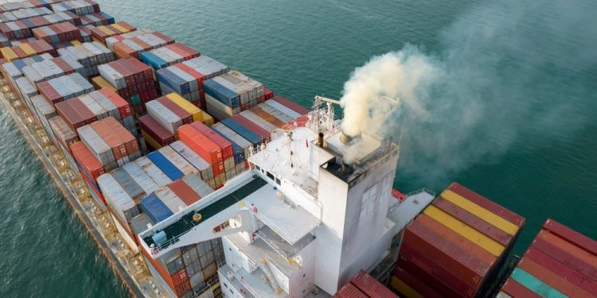
컨테이너선 굴뚝입니다. 오늘 세 시간은 저 연기를 숫자로 세는 이야기입니다. 얼마나 나왔는지, 누가 확인하는지, 그래서 얼마를 내는지입니다.
목차
1. 환경 규제 배경
2. 대체 연료 솔루션
3. 하드웨어 탄소 관리 솔루션
4. 소프트웨어 탄소 저감 솔루션
5. 데이터 기반 환경 규제 대응 실무
1교시 순서입니다. 먼저 이런 규제가 왜 생겼는지 배경을 보고, 줄이는 방법을 대체연료, 하드웨어, 소프트웨어 순으로 봅니다.
다섯 번째 데이터 기반 실무가 오늘의 본론입니다. 1교시 끝에서 시작해 2·3교시까지 이어집니다.
1. 환경 규제 배경
환경 규제에 따라 관련 산업이 성장한다 .
환경 규제를 이해하고 앞으로 3 0 년간 성장하는 환경 산업을 생각해보자 .
기후 위기론과 회의론
기후 이야기는 늘 둘로 갈립니다. 곧 망한다는 쪽과 거짓말이라는 쪽입니다. 누가 맞는지 따지기보다, 지금의 규제가 어떤 근거로 만들어졌는지를 보겠습니다.
온난화 대응 필요론
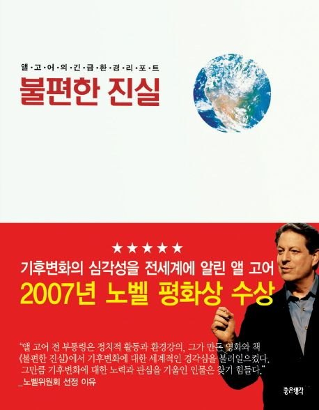
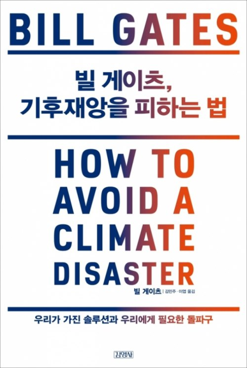
온난화 사실이야 .
하지만
우리는 더 발전해야 된다 .
기술로 대처할 수 있어 .
파리협정 복귀와 사과
바이든 대통령은 취임하면서 협정에 복귀했고 기후총회에서 탈퇴를 사과했습니다. 그런데 2025년 1월 트럼프 2기가 시작되면서 미국은 다시 탈퇴를 통보했습니다. 이 장은 그 전에 만든 것이라 사과에서 끝나 있습니다. 정권에 따라 방향이 바뀐다는 점만 기억해 두십시오.
호주 산불: 남한 면적 2.4배
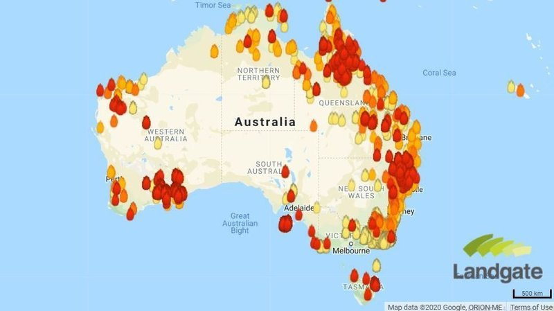
남한 면적 2.4 배 화재 , 110 조 피해
첫 기후난민 발생
화재로 인한 상승기류와 우박
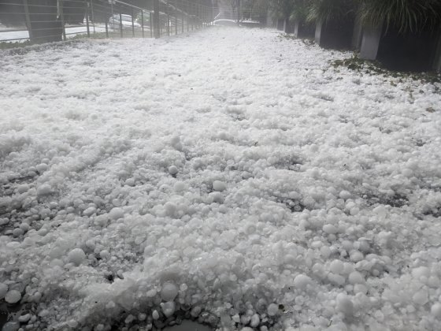
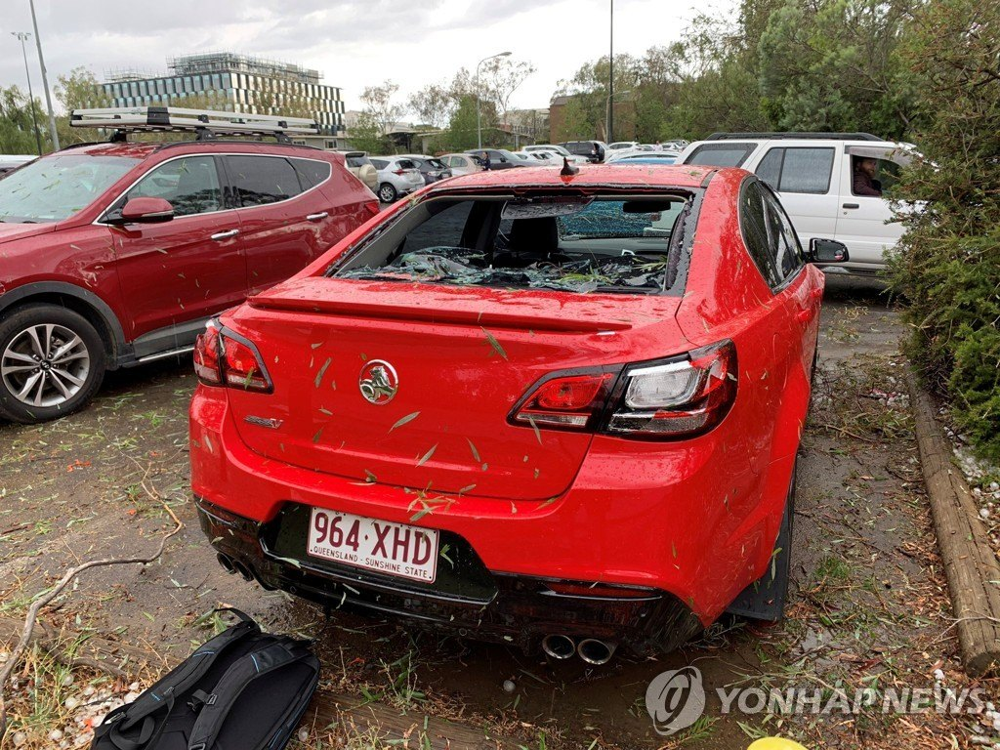
2020 아프리카 홍수
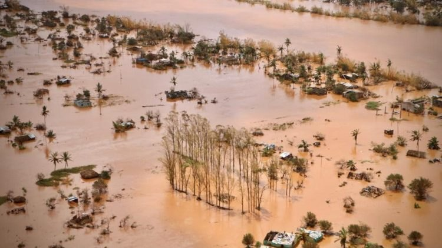
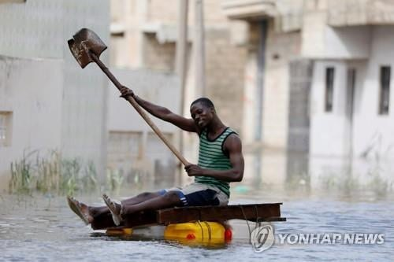
북극 동토층의 탄소
온난화 시한폭탄 북극 , 동토층 탄소 창고
1 조 6 천억톤 탄소 저장
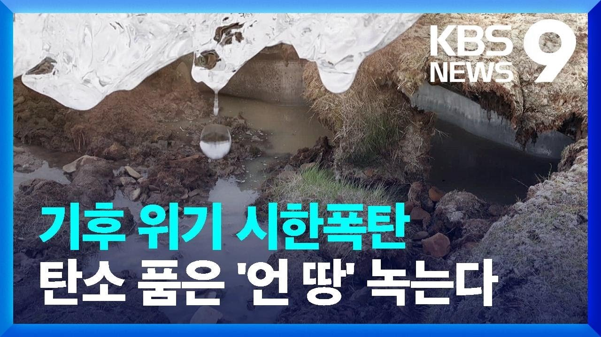
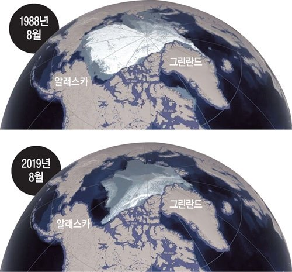
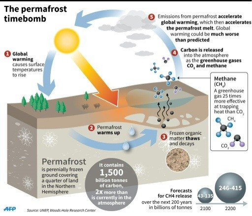
수온 상승과 강한 태풍
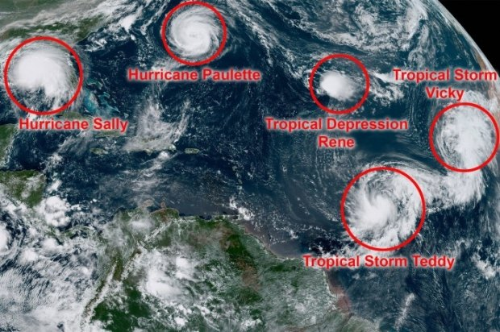
10 년간 절반 이상 강력태풍
초강력 태풍 등급 신설
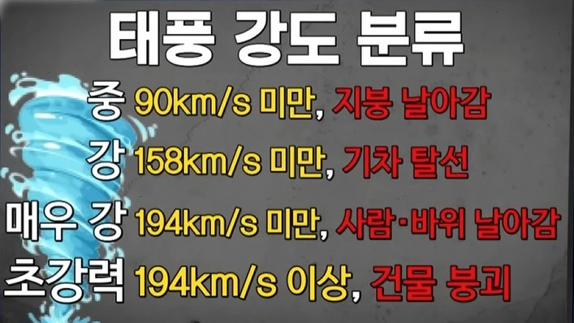
남극 빙하 소실과 해수면 상승 (2)
정치적 판단
과학이 위험하다는 데까지 말했다면, 누가 얼마를 낼지는 정치가 정합니다. 제한된 자원을 어디에 쓸지 합의하는 일입니다.
국가별 자율 목표 설정과 이행
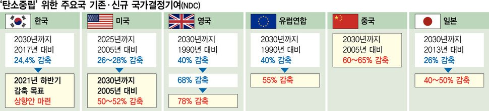
나라마다 목표를 정하고 수송, 발전 같은 부문으로 나눠 이행합니다.
국제 운송은 누가 관리하나
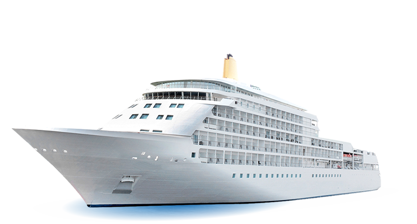
국가별로 이행하는 체계에서
국제 해운·항공의 배출은 누가 관리하는가
선박 운항 규제
선박 운항 정보로 규제 통과 여부 확인
매년 제출 필요
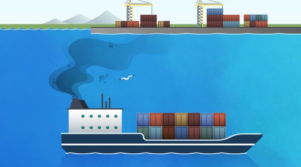
환경 규제 메커니즘 (MRV)
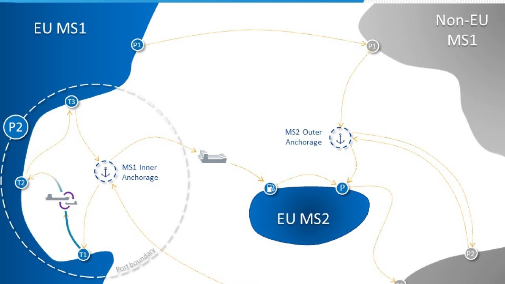
EU MRV의 항차 구분입니다. EU 항구 사이, EU와 역외 사이, 항내 정박을 나눠서 기록합니다. 이 구분이 틀리면 뒤의 계산이 전부 틀립니다. 2교시에 자세히 봅니다.
IMO CII (탄소집약도)
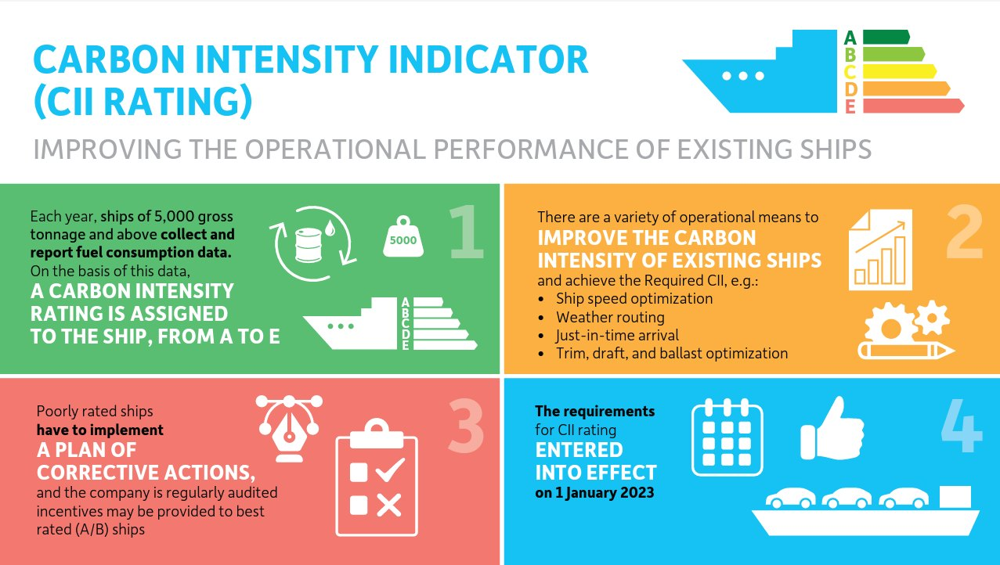
CII는 한 해 운항 실적으로 A부터 E까지 등급을 매깁니다. 총톤수 5,000톤 이상 선박이 대상이고 2023년부터 적용됐습니다.
2. 대체 연료
2050 년 탄소배출 제로 달성을 위한 궁극적인 대안은 대체연료 사용이다 . 하지만 현재 기존 연료를 대체할 수 있는 연료가 없기 때문에 관련 기술 개발과 동향 분석이 중요하다 .
두 번째, 대체연료입니다. 넷제로의 최종 답은 연료를 바꾸는 것입니다. 다만 지금은 기존 연료를 그대로 대신할 연료가 없습니다.
전주기 관점: 수소 생산 방식
연료를 만드는 과정까지 봐야 합니다. 같은 수소라도 천연가스로 만들면 그레이, 나온 탄소를 포집하면 블루, 재생전력으로 만들면 그린입니다.
전주기 관점: 연료 생산 경로
원료와 공정에 따라 연료 이름 앞에 e, 블루, 바이오가 붙습니다. e-연료는 재생전력으로 만든 수소에 포집한 CO₂를 합성한 것입니다.
3. 하드웨어 탄소 저감 솔루션
선박 탄소 배출 저감의 궁극적인 대안은 대체 연료이지만 에너지 저감 하드웨어는 비싼 가격의 대체 연료를 절감할 수 있으며 , 현재 선박에도 적용 가능한 이점이 있다 .
세 번째, 하드웨어입니다. 대체연료는 비쌉니다. 에너지 절감 장치는 그 비싼 연료를 덜 쓰게 해 주고 지금 운항 중인 배에도 달 수 있습니다.
Rotor Sail: 마그누스 효과
• 마그누스 효과 이용 : 유체속을 회전하여 움직이는 물체가 수직으로 힘을 받는 현상
4. 소프트웨어 탄소 관리 솔루션
탄소 배출량 모니터링 , 탄소 배출량 목표 관리 , 최적 운항을 위해서는 선박의 디지털전환이 중요하다 .
네 번째, 소프트웨어입니다. 배출량을 재고, 목표를 관리하고, 운항을 최적화하려면 선박 데이터가 디지털로 모여야 합니다.
Weather Routing: 2~4%
외부환경 ( 바람 , 파도 , 조류 ) 를 고려한 최적 항로 탐색 필요
기상 최적 항로입니다. 바람, 파도, 조류를 고려해 항로를 고르면 2~4% 절감됩니다.
5. 데이터 기반 환경 규제 실무
다섯 번째, 데이터 기반 환경 규제 실무입니다. 여기부터가 오늘의 본론입니다.
지금까지 본 규제, 연료, 장치, 소프트웨어는 모두 같은 데이터 위에서 돌아갑니다. 배에서 적는 연료 소모량 한 줄입니다. 그 한 줄을 어떻게 입력하고 처리하고 검증하는지를 지금부터 2·3교시까지 이어서 보겠습니다.
현재 적용 가능한 중간 솔루션
현재 적용 가능한 이행 중간 솔루션이며 , 개선을 위해 지속 개발 필요